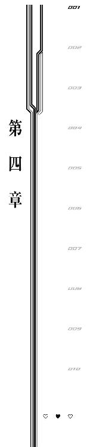

| お台場駐屯基地の妖精 ストライク・プリンセス (角川スニーカー文庫) | |
| 冬木冬樹 | |
| (2013) | |
お台場駐屯基地の妖精
ストライク・プリンセス
冬木冬樹

角川スニーカー文庫
本作品の全部または一部を無断で複製、転載、配信、送信したり、ホームページ上に転載することを禁止します。また、本作品の内容を無断で改変、改ざん等を行うことも禁止します。
本作品購入時にご承諾いただいた規約により、有償・無償にかかわらず本作品を第三者に譲渡することはできません。
本作品を示すサムネイルなどのイメージ画像は、再ダウンロード時に予告なく変更される場合があります。
本作品は縦書きでレイアウトされています。
また、ご覧になるリーディングシステムにより、表示の差が認められることがあります。
序章
悪い夢だ。虹色の天蓋に覆われた空を飛んでいる。
東京湾上空の景色。それは視覚以外の感覚が一切消失した白昼夢のようだった。
十年前から法則の変わった世界の現実を目の当たりにして、少年は思わず手を伸ばす。
何かをつかみ取るように先へと突き出した指の向こうには少女がいる。
太陽の光を受けて純白に輝く、翼の生えた女の子。
長い黒髪に細い手足。表情はかたく、つんとすまして一点を見つめている。
そして、無骨な翼で飛んでいた。
可変するためと思しきジョイントのついたメカニカルな翼。左肩後ろには日本刀が納められていて、右肩近くに搭載されているのは長大な砲だろうか。
あまりにも無骨。
細く小さく、ひらひらとした服を身にまとう少女とはあまりにも対照的な物体。
なのに、少女と翼はまるで芸術品のように釣り合いがとれている。
夢か、と少年は思った。
さもなくば華奢な少女と無骨な兵器が、まるで最初から二つで一つの生命体であるかのようにバランスよく合わさり、空を舞うはずがない。
だから少年は目を閉じかけて。
けれど、少女が右肩から放った砲の轟音に目を開く。
──少年は音を思い出す。
この世を満たす轟音を。砲撃のたびに起こる震動を。それから、自身の内側から響く、うるさいぐらいの鼓動と──
「兄さん」
空に飛び立った少女の声を、思い出す。
向こうからこちらの姿は見えないと油断していたせいで、また大きく心臓が跳ねる。
少年は現実を思い出す。
この世界の空には、十年前から人類の天敵が浮かんでいた。
少女はそれに立ち向かっている、人類の希望なのだと、思い出す。
記憶と同時に心配までもが喚起された。
あんなに無骨な翼を背負って《異界人》と呼ばれる脅威に立ち向かわなければいけない、人類の希望をたくされるには華奢すぎる少女への心配。
けれど。
「心配なんてしなくていいですよ」
ただの心配は無力だと少女は言う。
はがゆさに少年は唇を嚙む。心配すら禁じられてしまったら、自分にできることなんて本当に何もない。
「願いは叶うものなんですよ」
少女はしかし、できることがあると少年に言う。
男は戦いの空に行けない現代。人類の希望が少女にだけ託されてしまった時代にも、地上からできることがあると。
──心配と不安により見失っていた役割を思い出す。
そうだ、ここからでも彼女のためにできることが、少年にはあった。
「力をください。気持ちをください。言葉をください。率直に、言ってください。あなたが私をどう思っているのか」
表情を変えずに少女は言う。
まったくもってわかりにくくて、生意気で、食えないやつ。
だいたい今はそんなこと言っている場合じゃないけれど。
「わかってるよ。おまえは──」
この世のシステムは十年前のある日からすっかり変わってしまった。
空を覆い尽くす虹色の脅威──《異界人》たちに世界は征服されかけていて、どうにか人類が必死に抵抗して寿命を延ばす毎日。
だけれど人は見つけてしまった。
『かわいい』という波動をエネルギーに変えて、《異界人》を倒す法則を。
だからこれは、とっくに壊れた世界のお話。
心震動エネルギーと呼ばれる、弱者のみが持つ力──いわゆる『かわいさ』を武器に《異界人》と戦う、少女たちの飛行戦記なのだ。
１
「おはようございます、朝ですよ」
「......」
七月七日の朝は心臓が凍り付くほどの驚きで始まる。
エアコンの効いていない室内。うだるような暑さは繭のように体を包み込む。世界が全力で人間から睡眠時間を奪うような真夏の日々。いくら七月とはいえ一昔前はもうちょっと涼しかったような気がしたが、同じ事を毎年思っているような気もした。
驚きの原因。
風早晴空が見上げた先には女の子がいる。
まるで毎朝そうしているかのように、当たり前の顔をしてこちらを見下ろす女の子。
こちらの驚きに小首をかしげて答える様子に思わず晴空は記憶を疑った。
ひょっとしてこれがいつもの事で、女の子が朝起こしてくれるのが自分の日常なのではないか、と。
──そんなわけはなかった。
『十年前の惨劇』のせいで家族を失った孤児のあふれる世の中だ。大勢の若者は家族と死に別れ、あるいは生き別れて学生寮で寂しく暮らす東京都心部。自分にだけかわいい家族がいて毎朝起こしに来てくれる幸運なんて断じてない。
本当にかわいい。
というか、美人。
パーツの一つ一つが文句のつけようもないほど端整な造作。やや無機物じみた冷たさはあるけれど、朝日をバックに長い黒髪を手で押さえながら腰をかがめてこちらを見下ろす様子は、絵画として飾っておきたいぐらいに芸術的だった。
......背景が六畳一間の殺風景な学生寮（木造畳敷き）でなければ、だけど。
絵画を連想したのは女の子の服装のせいもある。薄い桃色のブラジャーに、ワンポイントにリボンのついた清潔そうな下着。
鎖骨のあたりにぶら下がっているペンダントの赤黒く生々しい色彩が絵画のような景色に生々しさを添えていて──
「って裸！ 誰!? 何で!?」
心臓が急に動き出す。驚きの性質は静から動へ。晴空は飛び退くようにベッドから跳ね起きて少女から距離をとろうとする。
しかし悲しいかなここは六畳一間のエアコン無し貧乏学生寮。退却はすぐに隣人のいびきが聞こえるんじゃないかというぐらい薄い白壁に阻まれた。
後ろの壁を見ること三秒。ひょっとしたら突如現れた女の子は真夏の暑さと男子寮という環境が見せた蜃気楼で、視線を戻せば消えてるんじゃないかという考えにさらに二秒費やして、覚悟を決めるのに一秒使ったあと、晴空は前へ視線を戻した。
こちらを見下ろす女の子と目が合う。
人形のような無表情だった彼女は、なぜか唇をとがらせて不満そうな顔になった。
「テイク２いきましょう」
何を言われているのかわからなかった。
蟬の声がざあっと遠ざかっていくような錯覚を覚える。
晴空のまるで宇宙人でも見るかのような表情に傷ついたのか、女の子は慌てたように弁解を図った。
「こうやって朝に起こすのが夢だったんです。......でも、誰？ って言われてちょっと予定と違ったっていいますか。少し傷つきます。だってあんまりでしょう、誰、は」
悲しそうにする女の子に罪悪感がむくむくとわき上がる。冷静に考えれば『誰？』と聞くのはまったく間違っていない状況だとわかるはずが、晴空はまだ混乱していた。
「じゃあ次は、ちょっと私のキャラに合わないかなと思って控えていたんですが、いきなり体の上に乗って起こすやついきますよ。はいはい、目を閉じて、もう一回目覚めからやり直しましょう」
助走をつけるためか、距離をとる女の子。
ここで止めないと延々テイク数が増えていく悪寒がした。
「待って！ 俺は、君の事を知らないんだよ！」
晴空の言葉に、美人は心底不思議そうな顔をする。
「......本当に？」
「あ、ああ」
「本当の本当に？ サプライズとかではなく？」
「サプライズじゃなくて！」
「............な、なんか一個ぐらいありません？ 思い出すこととか、心当たりとか」
「ない、けど......」
女の子が涙目になってくるので晴空に罪の意識が芽生え始めた。
「......いいですよーだ。かわいい私はうろたえないんです。ええ、うろたえません。うろたえませんとも」
いじめている気持ちになってくる。
晴空はどうにか思い出そうと女の子の顔をまじまじと見た。
晴空は記憶をたどるのが苦手だった。
往々にして『昔』には目を背けたくなるほど恥ずかしかったり醜悪だったりするものが転がっているからだ。たとえば十四歳当時に自分だけの必殺技をこっそり考えてノートの端っこに書いていた事とか、今となってはさっぱり洗浄したい思い出である。
だからなるべく過去を振り返らないように生きているので、いつの間にか『記憶を引き出す』という機能が人に比べてやや錆び付いているのだ、と自分では思っている。
お邪魔する旨？ 連絡？
あったような気がする。
引っかかる記憶は寮監に渡された書類だ。住居の管理者から渡される書類なんて補習のお知らせとか門限破りのイエローカードとかだいたい見たくないものばっかりなので、晴空はもらう書類を机に積み上げて一週間ほど発酵させておく習慣を身につけていた。
けれど昨日もらった茶封筒。
いつもしかめっ面の神経質そうな二十代そこそこのアルバイト寮監が、珍しく笑顔で『おめでとう』とか言っていたような気がする。
その笑顔のせいで、すわ赤紙（夏期講習参加強制のお知らせ）かと恐怖した晴空は二週間の発酵期間を設けることを決定し、机の上と言わず枕の下に放り込んで、その茶封筒のことは記憶の彼方へ追いやった。
だが、本当におめでたいお知らせだったのかも知れない。
慌てて晴空は枕の下に腕を突っ込んで茶封筒を取り出す。『親展』と判子の押されたそれをびりびり乱暴に破り捨てて中身を確認。
そこには几帳面に折りたたまれた履歴書のようなものが一枚。
その紙に添付されている顔写真と、女の子の顔を見比べた。
当たり前のように同じ顔。
書類に書かれているのは、女の子の名前、現在の住居、それから晴空との関係性だ。あといくつかの『この書類に書かれているのが事実であること』を証明する格式ばった判子があるだけ。
つまり目の前の女の子は、晴空にとって──
「初めまして、兄さん。妹の風早桜花です」
思い出してもらえなかったことが心底残念だというようにため息をついて、妹だったらしい女の子は悲しそうに名乗った。
「......ハジメマシテ」
体を起こしながら、まだ状況についていけていない晴空はかたい返事をする。
兄妹にしては不自然すぎるあいさつだった。
けれどそれも仕方がない。なぜなら、珍しくもないことに、晴空は十年前の記憶をすっかり喪っているのだから。
十年前、《異界人》と呼ばれる謎の存在が襲来したせいで、千葉・東京・神奈川を中心に、日本でも大勢の孤児が出た。
多くの孤児はその《異界人》が襲来した日......《法則更新日》の記憶をショックで失っている。
何せ、《異界人》の殺し方と言ったらまるっきり奇術的なのだ。
《異界人》の光線を浴びた途端に親がコンクリートブロックに《変質》したなんて、子供はどう頭で処理していいかわからない。記憶が消えるのも当たり前だろう。
そうして、風早晴空という少年もまた、その日の記憶と、その日以前の記憶を失った孤児の一人だ。
「まったく、あんまりにもあんまりな初対面ですよ兄さん。こちらばっかりサプライズの用意をしているなんて......たとえば私が兄さんを起こすために部屋に入ったら、逆に起きていた兄さんに驚かされるとかは、覚悟していたんですが」
「どんなアグレッシブな再会だよ」
言いながら確認するように晴空は首元に手を伸ばす。汗で濡れたシャツ。その下にあるかたい感触。
ペンダントだ。
過去の自分を類推させるものは、ペンダントと、うっすら胸に残る手術痕と思しき傷しかない。
記憶を喪った晴空が唯一身につけていた、自分の正体を示す手がかり。記憶をなくした当初は一日中ながめていたような気もする。でも赤黒いペンダントトップは何の記憶も映してはくれなかった。
そのうちにペンダントをながめるよりも楽しいことがいっぱいできて、他に記憶をなくした仲間もたくさんいて、まあ過去を見てもしょうがない、なんてマセた悟りを開いたのが十一歳の頃だったか。
それからはなくした過去について記憶喪失仲間と話すと、だいたいその結論で締めくくるようになった。『過去を見てもしょうがない』
鎖の長さは大人向けだ。
七歳当時の自分は首にひっかけていても目の前まで持ってくることができたが、体ばっかり大人になった今では首にかけたままペンダントをながめるには顔を下げなければいけなくて、でも毎日忙しくて視線を下に向けている余裕がなかった。
とっくにただのアクセサリーに成り下がった思い出の逸品が、今、七歳当時に期待した通りの効力を発揮しようとしている。
過去から現れた妹と自分を結ぶよすが。
格式張った判子なんかよりもよっぽど納得のできる、桜花と自分の『兄妹の証』。
だけれども──
晴空は、ベッドから距離をとり窓のそばに立つ桜花の姿を見る。
腰が高く手足が長い。すらりとした体つきは西洋の人形を思わせる。細く見えるのは引き締まっているからだろう、体も顔も髪も雰囲気も、『無駄』というものの一切が撤廃されたような美しさがある。
書類によれば、年齢は十五歳。
二つ年下だが学年的には一つ下。
奇妙な落ち着きがある。何をしていても大人びている雰囲気がある。『かわいい』よりも『美人』と思ったのは、冷めたような顔つきよりも落ち着いた雰囲気によるところが大きい。
姉だと言われても納得できてしまう。
というか妹より姉でいてほしかった。
だって妹ということは自分が年長者だ。都心部の学生寮では貴重品と化した『家族持ち』の話によれば、兄というのは『お兄ちゃんなんだから』でなんでもかんでも我慢させられるらしいし、妹が困っていると助けなければならないらしい。
でも晴空には向いていない。
今だって頭の中は真っ白で、引きずられるままずるずると対応こそできているけれど、自分から何を話そうかなんて考えもつかない状況なのだから。
「兄さん兄さん、行きますから寝ていてくださいね」
窓のそばまで下がった桜花は、まるでこちらに走り出すような姿勢をとって言う。美しいクラウチングスタートの姿勢。
六畳一間畳敷き男子学生寮で下着姿の女の子がクラウチングスタート。
すさまじい光景だった。目を覚ますには充分な衝撃である。
「起きてる！ 起きてるから！」
「知っていますよ。だから寝てください、とお願いしているわけで」
「どうしてかたくなに起こそうとするのか兄さんわかんないよ」
「そんなの決まっているでしょう。全国の兄と生き別れた妹にとって、朝に兄を起こすのは夢だからです」
真顔で言い切る桜花に底知れぬほど強い意志を感じた。
「もっと他に考えることなかったのかな......」
「というわけで、いまいちなお目覚めをやり直したいんです、私は。今から兄さんのおなかの上にダイブしますから、目を閉じて、腹筋を締めて眠ってください」
「やめろ！ そんな眠り方がありえるか！ 起きてる！ 俺、もう起きてるよ！」
「いやです！ もっと素敵な起こし方したいからまた寝てください！」
「妹ってわがままだな......」
「兄さんこそ。だいたい、かわいい妹の頼みなんですから、そこは起きていても寝たふりをして、今までのは全部寝言だったんだよ、というふうに振る舞ってくれるのが愛情というものじゃないんですか？」
「愛情の意義を見失う......」
そもそも、と晴空は思うのだ。
──十年前に生き別れた兄妹が再会するなんてご都合主義、あり得るのだろうか？
特に法則更新日の被害がひどかった東京湾周辺......東京・千葉・神奈川では、家族を失い記憶を喪い、住処を失い今なお心に焼き付いた恐怖に怯える人も多い。
すっかり『肉親』というものが貴重になってしまった現代。人々は血のつながった家族を失い、学生たちは寮で共同生活を送ることで新しい家族を形成している。
それなのに自分だけ肉親と再会できる。
しかも再会した妹はやたらと美人。
こんな幸運、本当にあり得るのか？
晴空は自分の幸運を信じられない。だから、ペンダントの存在が兄妹の絆を示しているのはわかるけれど、それ以上に疑ってしまうのだ。
彼女は本当に妹なのか？ と。
......自信がないと言うべきだろう。風早晴空は我が身に起こった幸運を前に戸惑って、思い悩んでいる。
だけれども晴空の悩みによる沈黙を、桜花はこう解釈した。
「兄さんは私がかわいくないとおっしゃいますか」
「そんなことは」
「わかりました」
弁解の暇もない。
何かを決意した様子の桜花。蟬の声すら止まって不気味な静けさに包まれながら晴空は体を伝う冷や汗の感触を覚えた。
次は何を繰り出してくるのだろう。妹が再会した兄にする事って何があっただろうか。少しの間考えて、起こすだとか甘えるだとか何かをねだるだとか、一通り想像して心の準備を晴空は終える。
──だけれど、想像の埒外。
桜花は右腕を伸ばした。
細い指先。手招きするかのような動作。だけれどその手の中には、桜花の胸から飛び出した何かが収まる。
薄い桃色のガラスでできた、ハートのように見える。
時計のような音が聞こえる。歯車が嚙み合う機械的な音。実際に歯車はハート型の何かの内側にあって、ガチンガチンと一定のリズムで嚙み合っていた。
リズムが壊れる。
加速していく歯車。拡大していく音。
それから、世界が歯車と純白の光に満たされた。
真っ白な世界の中で桜花自身すら光に変わっていく。あらわになるボディライン。全身をなぞるように回っていく歯車。腕から肩へ、肩から胸へ、胸から腰へ、腰から足へ。足先かららせんを描いて頭を目指す歯車。
歯車が通った順番に、桜花の姿を覆っていく物がある。
それは使いこまれた金属だ。上腕を包み込む手甲、足首を覆う装甲。
背中には可変部と思しきジョイントがついた、機械的で鋭い翼。
翼の根元には兵器。
右側に搭載されているのは艦載砲と思しき太く長い筒。
左側に納められているのは、日本刀。
あまりにも硬質で、あまりにも無骨で、あまりにも力強い直線的なシルエット。
しかしそれは翼と手足の末端だけで、歯車はまったく別種の変化ももたらす。
それは服装だ。
柔らかく、ひらひらとした純白の制服。ややタイトなミニスカートにニーソックス、長いネクタイが動きに合わせてゆらめき、羽織ったカーディガンのような物にはフリルがついている。
剛と柔。
鉄と布。
向けられる砲口が目の前に迫る。
純白の翼が朝日を受けてきらめく。
まったく相反する変化を歯車により起こされた桜花。柔らかな洋服と無骨な翼の組み合わせのはずなのにぴたりと一つのカタチになる奇跡。
その奇跡の名前を、晴空は知っている。
「......これは」
「《機巧制服》ですよ。......テレビなどで私たちの活躍の模様は映されているはずですが、兄さんはあまりテレビを見ない人で？」
ベッドに置いた桜花に関する書類に目をやる。
そこには、経歴・職業欄にこう書かれていた。
《機巧士官》。
人類の最前線で、《異界人》を相手に空を飛び戦う兵士。
知らないはずがない。競争率の高い食堂のテレビで唯一もめ事を起こさずに見ることができる番組が、《機巧士官》である彼女たちの出ているニュースや特集だった。
寮生活を送る学生が多い──言い換えれば法則更新日に両親を失った者が多い学校に通っていることもあり、《機巧士官》が《異界人》を墜としたという報道は、されるたびに歓声が上がるほどだ。
そのアイドルのような、スポーツ選手のような、とにかく遠く、文字通り雲の上の存在が目の前にいる現実をどう吞み込んだらいいかわからない。
「私たちは《機巧士官》と呼ばれる、《異界人》を相手に戦う集団です。......《異界人》ぐらいは知っていますよね？ 十年前の災厄を引き起こした、人類の天敵の名前ですよ」
「それぐらいは」
「そして兄さん、今の私の姿を見て、どう思いますか？」
桜花に問われて全身をまじまじと見る。
こちらから見て右側に浮かぶのは細長い狙撃砲。左側には日本刀。可変部のついたメカニカルな翼が、それらの台座、あるいは鞘のように桜花の背中に接続されている。
聞かれるまでもない。その無骨さと可憐さの共存したメカニカルかつスタイリッシュなデザインを見て十代男子たる晴空が抱く感想など決まっていた。
「かっこいい」
忌憚のない称賛が、こぼれるように口から漏れた。
けれど、
「ちっがーう！」
桜花はむっとする。
「え、え、なにが違った？ 褒めたらいけない感じ？」
「違いますよ！ そこは『かわいい』でしょう!? だって《機巧制服》は『かわいさ』をエネルギー源にして動いているんですから、それを見たら『桜花ちゃんかわいいな』と言うべきですよ！」
「えぇー......」
人類の天敵と最前線で戦う兵器を見せつけて『かわいい』と言え、というのはハードル高いなあと晴空は思った。
「兄さんは存外朴念仁ですね。わかりました。いいでしょう。ちょっと荷物をまとめてください」
「なんで？」
「出かけるんですよ。お見せします。私たち《機巧士官》が実際に《異界人》と戦う姿を。そうしたら兄さんも、私を『かわいい』と言わざるを得ないはずですから。だって、私たちは『かわいさ』をエネルギーに戦ってるんですからね」
ため息と同時に、桜花の全身から純白の光の粒がはがれ、天へと昇っていく。
残されたのは武装などない、下着姿の桜花の姿。
「うおっ!?」
さっきまで服を着ていたのですっかり油断していた。
慌てて目を逸らす晴空。
そんな兄を不思議そうに見ながら、桜花は床にたたんであった服......制服っぽいデザインだが、どう見ても冬服のブレザーで、今は夏だ......をおもむろに着だす桜花。
なんだかよくわからないが出かける流れである。
......断ることはできそうもなかった。ちらりと横目で見た桜花の背中からは、泣く寸前の子供みたいな妙な威圧感が醸し出されている。
だから晴空は、ずっと気になっていたことを一つだけたずねて、あとは大人しく従おうと心に決め、口を開く。
「あのさ、なんで君は下着姿なの？」
「何って、兄さんの前だからですよ。兄さん以外に裸は見せません」
胸を張って自慢げに答える桜花。
蟬の鳴き声が、思い出したかのように帰ってくる。
２
「実は私、世界一かわいいんですよ」
「そうですか」
「兄さんは兄さんなんですから、たとえ世迷い言に思っても、そこは『そうだね』って同意してくれてもいいじゃありませんか」
車内照明の落とされた電車というのは朝でも暗くて、晴空は外の光に目を焼かれそうになる。
連れ去られるように電車に乗っていた。
適当な格好......登校しないのに制服を着るのもなあ、と思ったのでＴシャツとカーゴパンツというもの......に着替えた晴空は、桜花に連れられるまま電車に乗り込み、どこかを目指している。
新橋までは山手線で行った。
平和な時間だった。行儀良く沈黙を守る他の乗客達。座席は埋まっているけれど立っている分にはまだ余裕があるという人口密度の電車は沈黙が許される空気が漂っていた。
それがお台場国鉄（旧ゆりかもめ）に乗り換えて二人きりになってからはどうだ。
沈黙が重い。桜花の持つパスカードがなければ入れない特別なホーム。法則更新日に対《異界人》の主戦場となったお台場は今もまだ立ち入り制限がかかっている。
車内からは十年前の爪痕がくっきりと見えた。
一面に広がる桜の森。
流れていく景色は七月に不釣り合いな桜色に満たされている。空調の効いた車内で見る桜のせいで季節感が壊れそうになった。
十年以上前、ここから見える景色は計画的に開発された、未来都市みたいな建造物たちの群れだったそうだ。しかし今は桜しか見えない。
これが《異界人》のもたらす《変質》という名の破壊。
建造物を樹木に変えて、人をコンクリートブロックに変える。メカニズムもシステムもあったもんじゃない悪夢みたいな現実の変換。
だから人間は十年前の《異界人》襲来日を法則更新日と呼ぶ。
その日、人類が築き上げてきた科学に基づく法則は間違いなく理不尽に更新されたのだから。
そして、理不尽と悪夢の体現者は、今なお東京湾上空にとどまっている。
電車内からははっきりと見えた。
全体的なシルエットは逆三角形。虹色の毛糸で編まれているかのように、柔らかそうな質感のそれは、電車の中からでもはっきり見えるほどに巨大。
その巨大な虹色の逆三角形が、東京湾の上空に、なんの支えもなく、本当にただ『浮かんでいる』のだ。
ニュースなどでたまに流れるが、まさしく悪夢のような光景だと思う。
あれこそが《集落》と呼ばれる異常。十年前にふっと現われ、東京湾近郊に《異界人》を放って地上を地獄に変えた人類の仇敵の姿だ。
現在は全部で五つが確認され、そのすべてが十年前に突如出現し、《異界人》を放って近隣を大混乱に陥れた。
あれをすべて撃ち墜とすことこそ、人類の悲願にして《機巧士官》の職務。
その役目の重さを思うだけで晴空は絶句する。
妹である少女が戦っている相手を間近に見て、その不気味さ、巨大さに打ちのめされてしまったのだ。
「......本当にあんなのと戦えるのか」
電車内から見てもなおまがまがしい《集落》の姿と、一面に広がる破壊の爪痕たる桜並木。理不尽すぎる存在感を前に、晴空は思わずつぶやく。
じっとりと汗がにじんでいくのは何も車内の空調が弱いせいだけではないだろう。
そのつぶやきを受けて、桜花が晴空の隣で《集落》を見ながら答える。
「母艦である《集落》は、その巨大さと十年前の法則更新日から一ミリも動いていないという事実から、現在『無用な手出し無用』の状態ですが。《集落》から吐き出される《異界人》については、全戦全勝です。それに私の撃墜数はけっこうなものですし、いずれ《集落》だって墜として、あいつらをすっかりこの世界から駆逐してみせます」
「......人間が立ち向かっていい大きさには見えないぞ、アレ」
「だからこそ私たちは《機巧制服》という兵器をまとうのですよ。......着きます」
アナウンスもなく、電車が速度を落としていく。
そうしてたどりついた駅は、『お台場駐屯基地前』という名前の駅だった。
人気がない、ベンチもない、自動販売機すらもない寂れた駅を通って、機能をすっかり止めている改札を出る。
広がるのは桜並木。
聞こえるのはうるさいぐらいの蟬の声。
大型車両が一台通れる程度の砂利道をゆったり歩いて、道のはるか先にあるどこかを目指している。
どこかというか、駅名と桜花の目的からしてネタバレも甚だしいのだが。
「ええと、俺たちはお台場駐屯基地に向かってるんだよな？」
「この駅からだと他にどこにも行けませんよ。桜の森で他の土地との交通がほぼ断絶していますから」
のんびり歩きながら妹は答えた。
......最初に電車に乗る前に聞いておくことだというのは、晴空だってわかっている。
けれど妹とは言え、本日初対面も同然の女の子と密着距離で会話を交わせるほど晴空は異性慣れしていなかったし。
それに、お台場国鉄に乗ってからは、《集落》に圧倒されてしまった。
桜花があんなものと戦っているのだと考えて恐怖したのだ。
そしてようやく会話できる精神状態になったのが目的の駅に到着してからという、なんとも情けないありさまである。
晴空は己の小心者ぶりにため息をつく。
......と、桜花がじっと、下から自分の顔をのぞきこんでいることに気付いた。
「な、なにですか？」
緊張のせいで妙な口調になってしまう。
桜花はじっとりとした目で晴空を見上げながら、
「兄さんはもっとこう、妹を一人の女性として認識すべきです」
「おかしな事言ってるぞ」
「おかしくないです。なんですかさんざん沈黙で引っ張った挙げ句に『どこに向かってるのか』。電車で私が話しかけても上の空ですし。......ひょっとして私が会いに行ったのは迷惑だったんですか？ 兄さんは、生き別れの家族と再会せずに今の暮らしを続けたかったのですか？」
「......」
その質問に、晴空は答えられなかった。
現代において肉親と再会するという幸運。しかも再会した妹は美人で、ずっと自分を捜してくれていた。
嬉しくないはずがない。
恵まれていると思う。
けれど、嬉しさを押しのけるような不安があった。
これからうまくやっていけるのか、という、あまりにも当たり前な不安。
──だって。
晴空は服の下に隠したペンダントをぎゅっと握り締めた。
──だって、このペンダント以外になにもない。
記憶がなくて、自信もなくて。
だから晴空は問いかけに答えることができなかった。
桜花はそんな晴空を見てため息をつく。
「お台場駐屯基地がどんな施設かはご存じですよね？」
「《機巧士官》の発着場、とだけ」
「そうです、日本における対《異界人》の最前線基地......東京湾《集落》に対抗するために私たちが詰めている、私の家です。同居人はいますが......知ってますよね、《機巧士官》は全員『女の子』だっていうのは」
「男だとエネルギー量が足りなくて《機巧制服》を動かせないとかなんとかっていう話は、身体測定の時に男子が適性検査免除される理由として聞かされたことがある」
「男性はかわいさが足りませんからね。そしてかわいい私は戦います」
「本当に戦うのか」
実感が湧かずに問いかける。
東京湾上空に鎮座する二十階建てビルにも匹敵するであろう虹色の巨大物体、気まぐれに《異界人》を吐き出し地上を脅かそうとする《集落》が、否応なく視界に入る。
あんなものと人間が戦うなんていうのが、晴空にはまだ想像できずにいた。
それこそ、桜花が先ほど言っていたように、《機巧士官》の活躍はテレビのニュースなどで取り上げられることも多い。
戦闘シーンの画像も、遠くからのものではあるが、それなりに出回っている。
コアなところではアイドル扱いでファンなども存在するらしいと聞いたことはある。
だけれども晴空にとっては遠い世界の出来事のように思えて、どうにも実感が湧かないというか、想像がつかない。
......まるで、これから桜花と過ごすはずの未来と同じだ。
現実感がなくふわふわした未来予想図。データでは知っているけれど実感としてわからないこの世界の現実。
だけれど桜花ははっきりと言った。
「戦いますよ。というか、戦い続けていますよ」
「......」
桜花が......《機巧士官》が《異界人》と戦い続けているだなんて、すでに知っていたはずの情報だった。
けれど、実際に戦っている人間から告げられると、なぜだか足元がぐらつくほどの衝撃を晴空は覚える。
「私は《機巧士官》です。人類のために戦っています。というか、兄さんのために戦っています。ほら、家族ですからね。生きているなら守りたいでしょう？ 幸いにも私には兄さんのついでに人類を守れる程度の力はあるわけですし」
「『ついで』の前後が逆だと思う」
「逆じゃありませんよ。むしろ人類はどうでもいいんです。兄さんです。まず兄さん」
「なんでそんなに」
「会えない時間が心を育てるのですよ兄さん。私は十年間ずっと捜してましたからね。まあ、捜していたのは最初の三年ぐらいで、あとの七年は『おあずけ』だったのですが」
はぁぁぁぁ、と。いらだちを思い出したのか、長いため息をつく桜花。
微妙におっかないから突くのもどうかと思ったが、なんだか桜花の目が聞いてほしそうにこちらを見ている。どうしようかなと晴空が迷うこと一瞬。
「......なんで『おあずけ』だったんだ？」
視線の圧力に負けて続きを促すことにした。
桜花は嬉しそうだ。
「私たちは心震動エネルギー......ときめきとか勇気とか、全部まとめて『かわいさ』とか、そういうデタラメであやふやなもので戦っているから、変な影響が出てはいけないと司令部に止められていまして」
「はあ、それは大変だったなあ」
「まったくです。いつ司令部を爆撃してやろうかと思い続けて過ごすこと七年」
「大変だったなあ、司令部......」
「そろそろ休暇もとれそうだったので、司令部のあるスイスへ旅行をしたいと申し出たら、何を思ったか『旅行ならスイスよりお兄さんと会ってきなさい』というお許しをいただきました」
「きっと何かを感じとったんだろうな......」
物騒な想いが込められていそうな申し出である。
晴空が本部でも桜花に兄と会う許可を出しただろう。
「というわけでため込んだ合計十年のこの想いのせいで、私の中の兄さんは大変な大きさになっているんです。わかりますか？ どのぐらいかと言えば、お台場駐屯基地での兄さんの評判がちょっとした都市伝説じみてきているぐらいです」
「うわぁ、行きたくねぇ」
「ここまで来たんですから、最後まで行ってもらいますよ。──それに、もうすぐのはずですから」
桜花ははるか遠くに見える敵、《集落》を真っ直ぐに見据えて言う。
視線を追えばそこには、なんの変哲も無く堂々鎮座する《集落》の姿。
......なんだろう、と思って晴空もじっと眺めていれば、一瞬、不気味に《集落》の外壁がゆらめいたような気がした。
その直後。
ウゥゥゥゥゥゥゥゥ......
鳴り響くサイレン音。
晴空には聞き覚えのない音だったが、会話の流れから何を知らせる音かはわかった。
「《異界人》がもうじき出ます」
桜花が晴空の予想を肯定する。
次の瞬間、《集落》から射出される細長い、うぞうぞと動く物体。
虹色の細長いそれは、《集落》の周囲を舞うように飛び回り、それから鎌首をもたげてこちらを見た。
目などない、ただの細長い毛糸のカタマリと見える。
だけれども、たしかに『見た』のだ。......視線を感じる。背筋が寒くなり、吐き気を催すようなおぞましい『視線』を。
生理的嫌悪感で寒気がした。
「......戦うのか、アレと」
繰り返しになる問いかけ。
だから桜花の返事も繰り返しのように同じく。
「戦いますよ。戦い続けていますし、これからも戦い続けていきますよ」
しっかりと敵の姿を見据えたまま。
迷いなく真剣な、すがすがしい表情で答えた。
自信に満ち、自己の力をしっかりと認識し、定められた役割をこなすことにためらいのない強さ。
あまりにもまぶしい。......まるで真夏の日差しだ。直視できない美しさが桜花の全身から満ちあふれているように錯覚する。
これが《機巧制服》を動かし《異界人》と戦うために必要な『かわいさ』であるならば、たしかに《集落》だって墜とせそうなぐらい力強い。
「おまえ、本当に俺の妹なのか？」
それは桜花との絶対的な隔絶......人間力とでも言えばいいのか、心の輝きとでも言えばいいのか、そういった力の差を感じて、思わず出た問いかけだった。
むしろ称賛の意識が強い言葉。おまえみたいなすごい人間が、俺なんかの妹で本当に合っているのか、という意味の質問。
だけれども心が離れすぎているせいだろうか、言葉に秘められた意図は伝わらず。
「やっぱり私は迷惑ですか？」
悲しそうな顔で桜花は問い返した。
「いや......」
喉が詰まる。
どうして想いの一つも素直に伝えられないんだろう。
どうして言葉にしたことが、思ってもいない風に伝わってしまうんだろう。
リカバリーの言葉を出せないまま。
桜花は悲しそうな表情を消して、自信のあるような笑みを浮かべた。
「いいですよーだ。兄さんが色々不満でも、この戦闘で一切合切全部ちゃらです。戦いが終わるころには『桜花ちゃんかわいい！』と大絶賛間違いないことでしょう」
「......」
「私は戦いでかわいさを見せます」
自信たっぷりに。
なんの疑いもなく、戦いこそ自分を一番輝かせるものだと知っている顔で桜花は言う。
「だから兄さん、私は戦いには自信をもっているのですよ。問題ないんです。戦いは。小型《異界人》程度、十匹だろうが百匹だろうがまとめて撃墜してみせます。......問題はその前にあるんです」
「前？」
冗談で流すには、桜花の顔はあまりにも深刻そうである。
なんなのだろう、あの上空に浮かぶ《異界人》を見てもまったく揺らぐところのなかった自信ありげな表情が、深く暗く陰っている。
だから晴空はこれから何を言われるのかと思わず身構えた。
桜花はつぶやくような、嫌そうな声で。
「これから兄さんを格納庫にお連れするんですが。......ああ、《機巧士官》は格納庫からの出撃が義務づけられているんですよ。強力な兵器ですからね。濫用を防ぐ目的でそうしているんでしょうけれど......」
「格納庫、遠いのか？」
「......近いです。もう見えてます。ほら、あそこの、こちらに背を向けた灰色の立方体」
指さす桜花。
示される通りに見れば、たしかに前方には灰色の立方体が見えた。
ただし、七つもある。
大きさこそ二階建てアパート程度のものから、宇宙ロケットでも格納するのかよというほどばかでかいものまで様々ではある。
けれど、その建造物すべてが灰色の立方体。ぱっと見ただけでは、桜花がどれを格納庫と言って指さしているのかわからない。
だから指先をしっかり追うに、思わず度肝を抜かれた宇宙ロケットが収納できるサイズの建物が『格納庫』らしいのだけれど。
「じゃあ何が問題なんだ？」
距離が近いだけに問題点がわからない。
桜花は視線を泳がせて言いにくそうに答える。
「......今日の当番は私ですけど、格納庫にはモニターがあるんですよ。だから私の戦いを他の子が見に来るかもしれないじゃないですか」
「当番制なのか......」
「はい。それは今どうでもよくって、で、兄さんにも戦いを見せたいので、格納庫で待っていていただこうと思ってるんですが......鉢合わせるかもしれないじゃないですか、兄さんと他の《機巧士官》が。他の女の子が！」
「......そ、そうなんですね」
言わんとするところがわからず、ぼやけた返事になる。
けれど桜花が『問題』というからには何か大変なことがあるのだろう。
そう信じて、何を言われても動揺だけはしないよう気をひきしめて桜花の答えを待つ。
桜花は苛立ったように、もしくは恥ずかしそうに「だから！」と顔を赤くして、
「再会してまともに話もできてないのに、兄さんを他の女の子と会わせるの、嫌じゃないですか！ 他の女の子と兄さんが楽しく会話するのは嫌です！」
「......」
あやうく卒倒しかけた。
たぶん昔手術したであろう、胸の古傷が痛むような錯覚。
──たしかにこれは大問題だ。
覚悟も準備もたやすく打ち砕く威力。
十年ぶりに再会した妹が、予想よりもすごくかわいい。
３
人類の最前線で戦う少女たちが出撃するための、がらんどう。
『格納庫』と呼ばれる建物。
コンクリートむき出しの内装。高い天井にも、広くとられた壁にも、なんら装飾が見られないまるで建造途中のようなありさま。
床はなだらかな斜面となっていて、入口側が低く、奥が高い構造になっている。
その斜面に行儀良く並んだ七本の手すり、それをつかみつつ、晴空は桜花に連れられて部屋の奥へと向かう。
とは言え、広いだけで視界を遮る物は何もない空間だ。行かずとも奥の様子は見えた。
最も奥にあたる斜面が一番高くなっている場所には、七つ、鉄板製のソファとでも言うべきかたそうな座るスペース......椅子と表現するには無骨すぎるし、一人が座るには広すぎる......があった。
おそらく《機巧士官》はあそこに座って用意をして、手すりをつかみつつ格納庫内で加速し、格納庫を出るころにはすっかり飛び立てる速度にまでなり、そのまま大空へと飛び立っていくのだろう。
そのためか、天井が高く、スペースが広く、そしてこの場所にはなにもない。
......あるのは鉄板製のソファに置かれたお菓子とか、化粧道具とか雑誌とかの、妙な生活感をにおわすアイテムだけだった。
部屋が殺風景なせいかその部分だけやけに散らかって見えるのはご愛敬である。
「まったく、入口からハンガーまで遠いのが嫌なんですよね、格納庫は」
斜面をのぼりながら桜花がぼやく。
たしかに、緊急出動の時に必ず来る場所にしては、緊急性に欠ける。
もう一つぐらい、ハンガー......鉄板製のソファのことだろう......そばに入口があってもよさそうにも思える。
「なんであっち側に入口がないんだ？」
「かつてはあったんですが、みんな急いで入る場所なので、壊れるんですよね。......あ、私じゃありませんからね！ 壊したのは私じゃないんですよ！」
何も聞いてないのに弁解されると怪しさがうなぎのぼりである。
追及はせず、苦笑いだけ浮かべて桜花について行けば、ようやくハンガーにたどりついた。
桜花はその鉄板の上に腰掛ける。
......他六つのハンガーと比べて整理されているように見えるのは、桜花の性格ゆえだろうか。手鏡と櫛と携帯電話の充電器だけが、ぼろっとハンガーの上に投げ出されている。
晴空は桜花の横から改めて格納庫内を見回した。
広い。
何もない。
ただし、先ほどまでは見えなかった物、入口上部にモニターと、その下あたりにモニター管理のためと思しきパソコンおよびそのラックがあった。
こんな何もない場所から人類最前線最新鋭の《機巧制服》は出撃するのだ。
整備道具は？ 修理部品は？ そもそも換装用のパーツや弾薬は？
兵器の格納庫と聞いて素人でもぱっと思いつくような『必需品』がまったく存在しない格納庫の内部で、晴空は戸惑いすら覚える。
「あー、なるほど。《機巧士官》に予備知識がなくて初めてここに来ると、そういう反応になるんですね」
桜花が微笑ましそうにこちらを見ている。
「悪いかよ」
居心地が悪くなって晴空は吐き捨てるように言う。
けれど桜花の微笑は崩れない。年下のはずの少女にお姉さんみたいな笑みを浮かべられるというのは本当に座りが悪い。
「悪くはないですよ。では、改めてお見せしましょう。私たちをかたちづくっているのは、機械部品でも最新技術でもなくて、異界の法則と『かわいらしさ』だということを」
そう言って、桜花が右手を大きく前へ伸ばした。
先ほども見た。それは、桜花が《機巧制服》をまとうための予備動作。
始まるのは『装着』でも『搭乗』でもない。
最新鋭兵器を武装するさまを見てこう表現するのもどうかと思うが──『変身』としか思えないような、不可思議な光景だった。
伸ばした右手に、桜花の胸の中から、歯車でできたハート型が現れた。
純白の光の粒が舞う。
ほどける衣装。あらわになるボディライン。桜花の体は真っ白な光に包まれる。
桜花の手の中でハート型の歯車がガチンガチンと嚙み合っていく。
ハート型はそのまま、桜花の体をなぞるかたちで、車輪のようにはいまわる。
上腕を包むビスで留められた重そうな手甲。
足首にも同じような物をまとう。
歯車が背後に回り、翼をかたちづくっていく。
ジョイントのついた可変式の翼。刃のような鋭さと、兵器そのものの無骨さ。そのくせ重さをまったく感じさせないという不思議な翼が、ジャキン、と開いた。
翼の根元には兵器があった。
右側には長大な銃身のある大砲。
左側には翼の根元を鞘にするように納められた日本刀。
それらすべてが純白にあるいは漆黒に輝いている。......硬質な物体であるにもかかわらず、絹のようななめらかな輝きだ。
続いて、桜花の衣装が変わっていく。
黒いニーソックスに。
体にぴったり貼り付くような、ノースリーブかつミニスカートのワンピース姿。
あらわになっていたボディラインを隠すように、ふわふわとフリルやリボンで飾られた、カーディガンのようなものが胸から腰にかけてを覆っていく。
そして最後に、ウサギの耳のような......おそらくアンテナやセンサーに類するものだろう......パーツが桜花の頭に現れる。
──純白の光が弾ける。
羽衣の代わりに兵器を搭載した妖精の姿がそこにあった。
すっかり『変身』を終えた桜花に、晴空は心を奪われる。
純白の翼を広げて立つその姿は、まるで機械の神のようだ。
整備など必要ない。修理も換装もただの物質でできるわけがない。
目にしただけで呼吸が止まる美しさ。
人間が積み上げた技術ごときでは再現しようもない不可思議。
ヒトの心の美しさを、晴空はこの時初めて目にしたような気がした。
「というか兄さん、何を初めて見たような顔をしてるんですか。会った直後もお見せしましたよね？」
「......ほら、さっきは色々と余裕がなかったし」
ぼんやりと桜花をながめる。
すると重そうな手甲を装備した桜花の腕がすっと伸びてくる。
「兄さん、これを」
握られた桜花の手。
晴空がその下に手を出せば、渡されたのは白いイヤホンだ。
「これは？」
「これで出撃中にも会話ができますね」
「......そっちは？」
「自前のアンテナが、ほら、頭に」
指さすのはウサギ耳のようなパーツだ。
しかし当然のように『自前のアンテナ』という言葉が飛び出すあたりにカルチャーギャップを感じる晴空だった。
「ええと、これから出撃なんだよな？」
「ええ、すぐにでも。現在、若干遅刻気味ですので」
「......」
心臓が痛い。
大昔の手術痕を突き破って飛び出すんじゃないかという勢いで、さっきからバクンバクンと跳ねている。
緊張すべきは桜花の方なのに、実際に緊張しているのは晴空の方だった。だってこれから妹が《異界人》にいどむだなんてシチュエーション、想像したこともない。
壊れるんじゃないかと思うぐらいに鼓動が激しい。
口がからからで呼吸もうまくできているかわからない。
心配。不安。恐怖。
内心を見透かされたのだろう、桜花は優しい声音で言う。
「心配ですか？」
「当たり前だろ」
「......いいですね、こういうの。まあ実際余裕なので心配されるとそれはそれで面はゆい感じではありますが。あ、でもこういう時は『不安だ』とか『心配だ』とか言ったほうがいいのでしょうか？」
「実際、どうなんだよ」
あんまりにも桜花が嬉しそうなので晴空はむっとする。本気で心配しているのに、そんな態度をとられれば機嫌も損ねようというものだ。
機嫌悪そうな表情を見てだろう、桜花は慌てたように言いつくろう。
「大丈夫ですよ。心配いりませんから。......もう、少しからかっただけなのに、兄さんも存外気が短いですね。でも、そうですね、私の心境としては......心配されるのは、嬉しくて、心が震えます」
「......それは、いいことなのか？」
「いいことですよ。私たちは心の震えを力に変えて戦いますから。嬉しかったり、楽しかったり、ときめいたり、そういう感情で心が震える時にかわいさは......心震動エネルギーは生まれます」
「......そういうものか」
「そういうものです。だから、兄さん、戦闘中は是非、私に声をかけてください」
「......」
「兄さんの声援が、私の力になります。......気休めではなく、真実、兄さんの言葉が弾丸となって《異界人》を貫くのです」
「ああ、安心した。......待ってるから、行ってこい」
「行ってきます。......あ、でもその前に、何かありますか？」
「......何か？」
「ほら、ほら」
言葉とともに開閉する翼。
上下に稼働する銃身。
カシャンカシャンと跳ねるように鯉口を切ったり戻したりする日本刀。
どうしよう、何を言いたいのかわからない。
「......え、えっと、......が、がんばれ？」
「......もう、そうじゃないですよ。いいです。戦闘が終わってからでいいです」
不正解だったらしい。
答えはわからないままだったが。
「風早桜花、出撃します」
──桜花の雰囲気が変わる。
真っ直ぐに見据える方向は前──東京湾上空に浮かぶ《集落》と、その周囲に躍る小型の細長い《異界人》。
横顔からは遊びが消えて、真剣さが胸を打つ。
なんという鋭さ。身にまとう気配はまるで日本刀だ。敵するモノを斬る。それ以外の意識を捨て去った純粋さが外からでもうかがえる。
けれど力んだところはない。......本当に《異界人》討伐というのは、桜花にとっては繰り返された日常で、そこに油断も緊張もないのだと表情と気配でわかる。
心配など差し挟む間もない。
──風が吹く。
飛ぶ寸前のヘリコプターのような強い風。翼のような物体は装備しているが、はためかせるわけでも回転させるわけでもない。強いて言うなら、展開しているだけ。
思うだけで空を飛ぶ。
そういう世界に住んでいる。
──発進。
猛烈な風が吹く。
あまりの烈風に手で顔をかばえば、その間に桜花の姿はすでに消えていた。
格納庫の外へと走り出すも、すでに白い光の粒となってしまった桜花の姿はここからでは追えない。
わかるのは桜花と《異界人》との大きさの差だけだ。
......あまりにも絶望的。《異界人》は地上からでもはっきりとシルエットを把握できるのに、桜花は筆先で落とした墨のように、小さな小さな点でしかない。
──そうだ、モニターだ。
晴空は慌てて格納庫の中へと戻る。
それから、見た。
映し出される映像は、桜花視点のもの。
だから晴空は桜花の目を借りて《異界人》へと迫っていく。
まるで毒沼に飛び込む白鳥だ。
無謀にしか見えない突撃。
晴空は思わず目を閉じそうになるけれど、どうにかこらえて交錯の一瞬を見る。
そうだ、桜花にとってはきっと慣れた交錯。
だけれども晴空にとってはただ目を開けているだけでも勇気を試されるような戦闘が、これから始まる。
４
戦いにも楽しみが必要だ、と桜花は考える。
らしからぬ思考に笑う。油断はないけれど余裕はあった。
だって、撃墜目標は『小型』に分類される細長い虹色の《異界人》。油断はない。緊張はしようがない。よって余裕でかたがつく未来が揺るぎない。
右側の武装である炸薬狙撃砲ならば一撃で殲滅が可能。
だけれどそれでは面白くない、と桜花は思った。
何せ兄が見ているのだ。
だから桜花は右側メインウェポンの封印を決定。
翼左側根元を稼働させ、右腕で日本刀を抜く。
遠距離武器を使用しないことにしたのだ。
眼前まで迫る《異界人》。
奥に見える《集落》。
......少しだけ欲が出る。ここで《集落》を墜とすことができたら最高にかわいいだろうなあ、と考えて、すぐにその誘惑を振り払った。
いたずらに刺激をするのはよくない。人類すべてを巻き込みかねないのだ。
風早桜花はプロフェッショナルである。だから仕事と私情は分けて考え、仕事で余裕が許す限りで『遊び』を入れることにする。
弾丸の速度で《異界人》を捉える。
両手持ちにした日本刀で、すれ違いざまに一閃。
確かな手応えとともに《異界人》の体を両断する刀。......いつ斬ってもなんとも言えない不思議な感触。一番近いのはタルトだろうか。外はさっくり、中は柔らかという感じ。
そうして両断した《異界人》が、しかしまだ死んでいないことを桜花は知っている。
体ごと反転させる返し刃。
視界に捉えるのは、斬り裂いた《異界人》の内部から現れる、赤黒い物体だ。
それこそが《核》と呼ばれる《異界人》の命の源。あれが無事な限り《異界人》はいくらでも再生する。
通常の兵器では破壊不可能なそれを、桜花の《機巧制服》は易々と斬り裂いた。
ぱん、と乾いた小さな音を立てて砕ける《核》。
赤黒い光は無数の粒子となって、桜花へと集まり、吸収された。
──ここまでが、《異界人》討伐の基本の流れ。
体を破壊し《核》を引きずり出す。
引きずり出した《核》を《機巧制服》で砕く。
そうして、取り込む。
こうすることで《異界人》の再生を防止し、完全なる撃墜を可能とするのだ。
「......それにしても、これは、いくらなんでも簡単すぎますね」
普段の戦闘が流れ作業にもなるわけだ、と改めて自覚。
武装をして経験を積んだ桜花の撃墜数は百を超える。......それが今さら、小型の《異界人》程度では演出も何もあったものではない。
「これじゃあ私が強いんじゃなく、《異界人》が誰でも倒せるぐらい弱いみたいにしか見えないじゃないですか」
不満を言いながら体ごと回転し、背後へ刃を振る。
背後に迫っていた《異界人》を斬り裂き、《核》を刺し貫く。
桜花の《機巧制服》へと取り込まれる《核》。
あまりにもあっけなく、残りは一体。
「もう少しがんばってほしいものです。......とは言え、今さらアレを相手に苦戦を演じるなんて、できそうもないですし」
悩みながら、銃の封印を解除。
純白の銃口が桜花の右手に合わせて動く。
狙いを定める、必要すら無い。
心の中で幻想の引き金を引いた。
弾丸は撃った瞬間に目標へと到達する。
彼我の距離が近いこともあるが、桜花にとって狙撃銃とはそういうものだ。
撃てば当たる。当たれば壊れる。
そのイメージ通りに桜花の《機巧制服》は作られている。
そしてもう一つ、桜花は自分の銃に凶悪なイメージを付与させている。
──着弾地点を中心に広がる、純白の爆発。
たった一匹の《異界人》を相手に放つには過剰な火力が、空に目を焼く光のしぶきを形成する。
あまりに一方的なワンサイドゲーム。
十年前、人類を完全に蹂躙した《異界人》を、完璧に圧倒した。
「はあ、これでは強さもかわいさも何も伝わらないではないですか」
蓄積されたデータからわかっていたこととはいえ、桜花はあまりにあっけなく、そのあっけなさゆえに兄に『私強かったでしょう』と言うに言えないような戦闘を終了。
かくして敵の弱さに不満顔のまま、桜花はくるりと《集落》に背を向けて、兄のいる格納庫を目指し──
背筋を突如襲った怖気に、慌てて背後を振り返った。
──空が虹色の天蓋に覆われる。
ピキピキピキと青空を凍り付かせる虹色。この世が異界に塗り変わっていく光景を桜花はしっかりと記憶していた。
まるで王の歩む道を、花で飾るように空を覆う天蓋。
王が歩む。
《異界人》の王──数多の《異界人》を生み出し、十年経った今なお『触れるな』という扱いを受けている唯一の《異界人》。
──《集落》の移動。
振り返った桜花の視線の先では、巨大な虹色の逆三角形──《集落》がゆったりとした速度で地上を目指し進撃を始めていた。
甦る記憶。
十年前、《法則更新日》と名付けられた人類最大の災厄。
その日と同じ空。
空は虹色のガラスじみた天蓋に覆われ、陽光は濁ったように陰る。
心に重くのしかかる圧力。
末端まで凍り付く体は、昔に経験した恐怖を覚えているのだ。
ありえない。
頭を埋め尽くす様々な可能性。繰り返された《異界人》に対する考察と、考察から導き出される未来予想図ががらがらと崩れ去っていく。
思考崩壊。
行動停止。
ぼんやりとながめる桜花の目の前で、動き出した《集落》という二十階建てのビルほどもある巨大な物体はゆったりと、ゆったりと、着実に動いている。
このままだと。
お台場駐屯基地へと、到着する軌道で。
棒立ちしていた桜花は、その事実に気づいて思考を取り戻す。
このまま《集落》を進ませれば、お台場駐屯基地とそこにいる兄が危ない。
「......今まで倒せなかったからと言って、今倒せない理由にはなりませんよね」
頭を振って気持ちを持ち直す。
そうだ、心をまとい想いを弾丸として常識を打ち破る人類の切り札が《機巧士官》。
ならば最初からあきらめることだけはしてはならないと、桜花は右肩の砲へと弾丸を込める。動作はいらない。ただ、思えばそれだけで想いを押し固めた炸薬弾は装塡される。
狙いを定めるまでもない。
敵はあまりにも巨大。外すほうが難しいぐらいだ。
だから桜花は早撃ちのように、砲口を向けざま弾丸を撃ち放つ。
数多の《異界人》を消滅させてきた、桜花必殺にして唯一の砲弾。
それは放たれた瞬間に《集落》を襲い、真っ白な光を放ちながら爆発。その内部にあるものを塵すら残さず破壊する。
......そのはずなのに。
爆発が晴れる。
そこから現れるのは、傷一つ無い《集落》。
「............は」
直面した理不尽に思わず笑いそうになる。
数々の《異界人》を撃墜し、一撃殲滅してきた必殺必中の砲が焦げあと一つつけられないなんて、なんというデタラメ。
けれどあきらめることは許されない。
ここで折れたら、誰が兄を守るのか。
次弾装塡。
想いを込めた弾丸はたしかな重量となって狙撃銃の中に現れる。
《機巧制服》は体の一部──心そのもの。手に触れていなくとも細部に至るまですべての動きや感触を制御できる。
だから桜花は心のままに狙いを定めて──
《集落》のあちこちに裂け目ができて、そこから現れた無数の血管じみたデザインの砲身が、一斉に自分を狙っている光景を目撃した。
両腕に装備した手甲へと意識を集中。
慌てて障壁を張り巡らせる。
《異界人》の攻撃はおしなべて変質を起こさせる悪夢の光線だ。
その光線を浴びた人間はコンクリートに変わり、人工物は植物に変化する。
その変質を防ぐために《機巧士官》がとる防御手段が『障壁』という、《異界人》の攻撃を純粋な質量に変換する防御機構。
だから、《集落》にびっしりとはえた砲身、そのすべてからオーロラ色の光線が桜花を狙い撃っても、桜花が簡単にコンクリート塊に変質することはない。
その代わりに、すさまじい重さが四方八方から桜花を押しつぶしにかかった。
「ぐぅ......」
漆黒の半透明な球体に包まれながら桜花は耐える。
ここで倒れるわけにはいかない。
お台場にいる兄を守らなければいけない。
──しかし、願うだけでは心は震えなかった。
重さに耐えきれず、桜花の体は海へと叩き落とされる。
鉄塊が背中にぶつかったような衝撃に、桜花の口から血液がほとばしる。
「兄さん......」
ぶつり、と。
桜花はその意識を寸断させた。
５
モニターの砂嵐が、絶望的な事実を否応なく叩きつけてくる。
格納庫の内部はまったくの静寂。耳につけたインカムから流れてくるのはノイズだけ。
......なぜだろう、叫ぶことすらできずに晴空はじっと、映像の入ってこないモニターをながめ続けていた。
現実に理解が追いつかない。
頭より先に胸の中身が反応している。弱まっていく鼓動。浅くなっていく呼吸。まるで桜花の苦境とリンクしているかのようだ。兄妹というつながりが、心臓の鼓動までリンクさせているというのか。
何ができる？
地上から空で戦う桜花に向けて、今、自分は、心臓の鼓動をたしかめる以外に何ができる？
空を飛ぶ翼がなく、敵を撃つ銃がない。
あるのは。
そうだ、この手にある武器は。
「......」
知らずにうつむいていた顔を上げて、モニターを見る。
相変わらずの絶望的な砂嵐。
緊張ではりつく喉。締め付けられて今にも止まりそうな心臓。
晴空はＴシャツの胸元をぎゅっと握り締める。
そこには、桜花との関係性を示すペンダント。
──そうだ、ただの応援なんて、普通の世界じゃ無力だけれど。
この世界では、ただの声援が、弾丸となって敵を貫く。
きちんと伝わるだろうか。
勘違いされないだろうか？
──大丈夫。心を込めて、飾らないで、きちんと言えば、きっと届く。
だから晴空は強く強くペンダントを握り締めたまま。
「桜花──」
ともすれば十年越しに。記憶にある中では初めて。
妹の名前を呼んだ。
６
優しいノイズに包まれている。
桜花は自分が海に墜ちたことを知った。
「......」
何かしゃべろうとしたけれど、かすれた吐息だけが出てくる。......なんて頼りのない肉体。弱っていく生命力に、桜花は自分の運命を知る。
──ただ、惜しいと思うのは。
虹色に陰った太陽。
天蓋のように空を覆う、ガラスのような物体。
我が物顔で空を進む《集落》。
まるで現実世界はとっくに滅んでいて、この世はすっかり『異界』という名の絶望に塗り替えられてしまっているかのようだ。
惜しい。
心が折れない限り何度だって空を飛ぶ自信はある。不可能だと思わない限りどんなものだって撃墜する自信がある。
それなのに。
自分を信じれば世界さえねじ曲げるはずの《機巧制服》で、絶対に墜とすと思って撃った弾丸が、あの《集落》に簡単にねじ伏せられたことがなによりも惜しい。
「ようするに私の想いは、化け物一つ墜とせない程度だったということですか」
守りたい人がいた。
だから力を尽くしてきた。
今まではそれでよかったのに、出会った途端にこの不調。
不調というか、ざわめきというか。
ときめきとは似て非なる心の震え。
今までに体感したこともない気持ちが心にさざなみを立たせるのだと、桜花は初めて知った。
その気持ちの名前はなんだろう。
その気持ちの正体はなんだろう。
「──不安」
......たぶん、求めてしまったのだ。
想いに応える想いを。
理想に違わぬ現実を。
でも、理想と現実は違って、再会はあまり喜ばれていなくて、だから桜花は知った。
──この世には想うだけではどうにもならないことがある。
そんな当たり前のこと、すでに知っているべきだったのに。......《集落》の浮かぶ空の中で、少しばかり不可能を可能にしすぎた。だからだろう、感覚が麻痺していた。
「ああもう、本当に難敵ですよ。撃墜の糸口すら見つからないなんて、本当に難攻不落なんですから──」
言っててどちらを指す言葉かわからなくなってくる。
それは《集落》を指して言っているのか。
あるいは兄を指して言っているのか。
......たぶん兄だ。だって、顔が笑っている。いまわの際にあってなお、優しく自分が笑っていることを桜花は自覚した。
「心残りですよ。......結局、一度も名前は呼んでくれませんでしたね」
それを最期に、桜花は目を閉じて。
『桜花、聞こえるか？』
死後の夢と思うには、あまりにも現実的な震動を聞いた。
どくん、どくん。
止まりかけていた心が震え始める。
「兄さん？」
震える声で聞き返す。
『そうだよ。生きてるか？』
ぼんやりとした、あいまいで自信なさそうな言葉で返ってきた。
「なんで自信なさそうなんですか......こういう時なんですから、もう少しはっきりとしてくださいよ」
『そうは言っても呼び慣れてないから、どうにも落ち着かなくてさ。......あー、ごめんな。そうだよな。こういう時なんだから自信たっぷりに呼ぶべきだよな。ごめん』
「そうですよ。何を言ってもぼんやりした答えで。私と話をするのが嫌なのかと思ったじゃないですか」
『ごめんってば。......自分のことで手一杯で、桜花のこと考えてる余裕がなかったんだ』
「......それは」
それは、お互い様だった。
思えば叶う世界で生きてきたから。思ったままに行動して、叶うのを待っていた。
でも叶わない。......当たり前だ。相手は言葉のわからぬ《異界人》ではない。心ある人間なのだ。
でも『お互い様』だなんて言うのはやめた。......うん、たしかに兄の態度には色々と不満なところもあったし、反省してくれると言うならば、反省してもらおう。
傷だらけでボロボロで、今にも死にそうなんだから。
そのぐらいのわがまま、許されてもいい、ですよね？
『俺さ、不安だったんだ』
言葉を探すように黙り込みながら。
とぎれとぎれに、兄は言葉を紡ぐ。
『うまくやってけるかとか、こんなに恵まれていいのか、とか。......だって、みんな家族を喪ってる中で、家族と会えるなんてさ。しかも、美人な妹とか......恵まれすぎて不安だよ』
「心配なんてしなくていいですよ」
『......』
「ねえ、兄さん。願いは叶うものなんですよ。幸せを望めば幸せになれるものなんですよ。兄さんは知らなかったかもしれないけど、この世界はずいぶん前からデタラメで、法則なんてなくって──特に《機巧士官》は......いえ、私は」
私は。
どくん、どくん、心が震える。
失われかけていた力が全身に巡っていく。
──私は持っている。
《集落》を相手に手も足も出なかったけれど。
兄を相手に色々空回った気もするけれど。
今、こうして死にかけているけれど。
持っている。
私は、持っている。
手を空へと伸ばした。指先にあるのは太陽を覆い隠す《集落》。虹色に陰った世界の中で、どうしようもない悪夢に蓋をされた空の下で。それでも、私は持っている。
「私は、願いを叶える力を持っているんですから」
言葉とともに力がみなぎる。
海に墜ちた体が浮かび上がる。
──空には虹色の天蓋。
視線を塞ぐのは《集落》という強敵。
人類が今まで触れることすら禁じていた脅威が、空に浮かぶ桜花の目の前にあった。
──それがどうした。
銃口を動かして狙いを定めた。
悠然とお台場駐屯基地へ進む《集落》。
攻撃が通じなかった記憶が甦って、思わずうつむく。
──少しだけ、力が足りない。
「兄さん、さっきから黙っていますけど、寝てますか？」
『いや、起きてる。......俺はどうすればいい？ おまえは、俺に何を求める？』
求めるものは、たくさんあった。
優しさとか日常とか、安らぎとかぬくもりとか。
でも、それら全部をひっくるめる、便利な言葉を桜花は知っている。
それは心震動エネルギーと呼ばれる、人類が《異界人》に立ち向かうためのもの。
心が震える瞬間に発せられる『かわいさ』という波動を学術的に表現したもの。
つまり。
「力をください」
顔を上げて、夢を叶えよう。
もう東京湾に《集落》があるなんていう悪夢は見飽きた。そろそろ夜明けが必要だ。この太陽を覆い隠す虹色の天蓋をぶちこわす、力ずくの夜明けが。
《異界人》のもたらした全部の悪いこと──悪夢を終えるために。
人間だけが持つ想いの力で、奇跡を起こそう。
だから顔を上げて空を見る。
「気持ちをください。言葉をください。率直に、言ってください。あなたが私をどう思っているのか。十年越しに再会した妹は、あなたにとってどういう存在なのか。私という存在を、あなたがどう表現するのか」
言い切って、震えが来る。
言い逃れできないほどに問いかけた。答えによっては一撃死。......さんざんヒントは出したはず。どう言ってほしいかも言ってきたはず。だからちりばめたものは充分で、あとは兄の本心次第。
迷惑がられているんじゃないか。
喜ばれていないんじゃないか。
不安が心を吞み込みそうになるけれど、桜花は願う。
──どうか、この再会を喜んでいるのが自分だけではありませんように。
そして、願いは。
『かわいい妹だって、思ってるよ』
願いは、叶う。
弾丸はたしかな重みで銃にしっかりと装塡された。
翼から引き金が伸びてくる。
今までにない変化に桜花は戸惑うけれど、ぐっと強く引き金を握った。
さあ、目覚めの時間だ。この空に悪夢はいらない。だから撃ち墜とそう。
──いけるか？
大丈夫。
だって、心が震えているから。
想うだけでこの世界はどうにだって変わっていく。
引き金を引き絞る。
発射と同時に着弾。着弾と同時に爆発。
桁違いの規模の爆発が、虹色の空を覆い隠す。
純白の爆発はあまりにもまぶしすぎる。まるで太陽が降りてきたようだ。大きく大きく広がって、空を塞ぐすべてを吞み込んでいく。
それは願いを叶える想いの力。
世界だって覆い尽くす、たった一人の少女の願い。
ガシャァン！ という、ガラスをたたき割るような派手な音が、世界中に広がった。
......爆発が晴れる。
跡形もない《集落》。きらきらと赤黒い光が桜花の内部に入り込み、ずしり、と心の全体に重くのしかかる。
晴れた空は青い。
まぶしさに桜花は目を細めながら、敵《核》の取り込みに成功したことを知った。
戦いは、終わったのだ。
「ね、兄さん、私、強いでしょう」
『......まあな』
焦点をぼかしたような晴空の言葉。
少しだけ不満もあったが、まあいい、と桜花は思う。
願いは叶うのだ。
いつしか言い逃れのしようもないぐらいに、面と向かった状態ではっきり『かわいい』と言わせてやりましょう──
新しい願いを抱いて桜花は帰投する。
兄の待つお台場駐屯基地。
今までとこれからを過ごす、我が家へと。
７
「兄さーん！」
桜花はそんなことを叫びながら弾丸じみた速度で格納庫に突っ込んでくる。
衝突の予感に晴空は思わず両腕で体をかばった。
......だけれどもいっこうにその時は訪れない。おそるおそる目を開ければ、目の前に立つのは不思議そうな顔をする妹。
そうだった。ブレーキングに制動距離など必要ない。そういうデタラメな力をこの少女は持っているのだ。
晴空は取り繕うように咳払い。
「......お帰り。体は大丈夫か？」
「胸に納めた《機巧》が壊されない限り、モチベーション次第で体の怪我はどうにでもなります」
「むちゃくちゃだな......」
あきれるぐらいに理不尽だった。
......しかしよく考えたらそのほうがいい。妹が無事に帰ってきたのだ。兄としてここまで嬉しいこともないだろう。
そう思い、子犬のようにはしゃぐ桜花を見て微笑んだ。
桜花は晴空の手を握ってぶんぶん上下に振り回しながら、喜びにうわずった声で。
「それより兄さん、見てましたか？ 見てましたよね？ 私の活躍！」
「ああ、見てたよ」
「すごい活躍なんですよこれ！ だって、今までに《集落》を墜とした《機巧士官》なんて一人もいないんですから！ これはもう、ご褒美ですね」
「たしかにそうだな。......うん、再会のお祝いもあるし、なにかやるか。桜花はほしいものとかない？」
「キスでいいです！」
聞き間違いかと思って沈黙する。
だってありえない。関係性を整理しよう。桜花と自分は十年ぶりに再会した兄妹。肉親。ＯＫ、大丈夫。それで合っているはずだ。
だけれど大きな声ではっきりと言われてしまっては聞き間違いとも思えない。そうなると意味のとり方に問題があるのだろう。
キス、キスと言えば。
「......魚？」
「もう兄さん、わかってるくせに」
「いや、魚じゃないキスは兄さんちょっとわかんないかな......」
「もう、兄妹同士でするものですよ？」
「ますますわかんないかな......」
「じゃあいいです。勝手にしますから」
襲い来る妹。しっかりと捕まれた手に迫り来る唇。
おかしい。常識がおかしい。
『兄妹同士でするものですよ？』というフレーズの意味がわからない。あんまりにも不思議そうなもので『なるほど』と思いかけたがやっぱりおかしい。
晴空は桜花の額に手を突き出して顔を止める。
しかし桜花は接近をやめない。
謎のつばぜり合いの中、このままでは圧し負けると確信した晴空は提言する。
「妥協！ 妥協しよう！」
「この世界で一番やってはいけないこと、それは妥協です」
「話にならねぇ！ 言い方が悪かった！ 折衷案！ 間をとろう！ あ、違う！ やり直すんだ十年間を！ 失われた十年を！ ねぇ桜花さんお願いだから話を聞いて！」
「三十秒だけ待ちましょう」
進撃が止まる。
しかし安堵している暇はない。勢い任せの興味を惹きたいだけだった発言の内容を、三十秒でまとめて口にしなければならないという状況に晴空は冷や汗を垂らす。
「え、えっと......そう、幼い兄妹みたいに、まずは手をつないだり、頭を撫でたり、そういうところから始めませんか？ いや、始めようというか、そこで終わろう」
「もう三十秒経ちましたか？」
「話聞いてよ！」
「聞いてますよ。......もう、兄さんは照れ屋ですね」
はあ、とため息をつく桜花。
「わかってくれたか......」
ぜいぜいと息を荒げる晴空。
「わかりました。何事にもステップというわけですね。たしかに十年分の積み上げは大事です。よし、いきましょう。まずはええと、お風呂──」
「頭を撫でる！」
「......じゃあそれでいいですよーだ」
頰をふくらませる桜花である。
人類初の《集落》撃墜という快挙のせいでハイになっているだけだろう。これが平常運転なら色々と危険である。いや本当、ハイになってるだけでよかった。だけだよね？
ともあれ妹の頭を撫でる流れになってしまった。
腕を解いて頭を突き出す桜花。
正面に見る彼女は思っていたより細く小さい。......妙に照れる。よく考えたらこれはキスの代替行為なわけで、そう考えるとなんだかとてもすごいことをしようとしている気がして──
「桜花さーん！」
突如響いた声に、晴空はばっ！ と桜花から距離をとった。
不満そうな視線。とがめられているのがわかって居心地が悪い。
だから晴空は桜花から視線を外すために声の方向を見る。
そこは、格納庫入口。
現れたのは四人の女の子たち。色とりどりの、デザインもバラバラな制服を着ている。
その中の一人が、桜花に向かって走ってくる。
勢いのまま桜花に抱きついた。
「桜花さん、すごいよ！ 《集落》墜としたんだね！ さすが桜花さんだなぁ......」
「......」
桜花はしばし、闖入者を相手に不満げな目を向けていたけれど。
ふぅ、とため息をつくと、親しげに笑って、抱きついてきた少女の頭を撫でた。
「当然です。願えばなんだって叶うんですよ」
「でも、心配したよ。......本当に無事でよかった」
感極まったのか、桜花の胸に顔をうずめて泣いてしまった。
困ったような顔で桜花が晴空を見る。
けれど困るのは晴空の方だ。名前も知らない女の子が目の前でいきなり泣き出すなんていうのは、どうしたらいいかまったくわからない。
晴空がかたまっている間にも、遅れてきた三人の少女がめいめいに桜花の快挙への感想を述べていく。
「まあ、あなたにしてはやった方じゃないの？ ......人類初の快挙であることは揺るぎようもない客観的事実だものね。一応、お祝いの言葉をあげるわ。......おめでとう」
最後、消え入りそうな声で、真っ赤な顔になって賛辞を述べるのは背の低い女の子。
「よくやったねぇ桜花ちゃん。今日は私当番じゃないけど、あとでクッキーでも焼こうか。あ、でもお祝いだったらケーキの方がいいかな？ リクエストあったら言ってね。あと、ちゃんとメディカルチェックも受けるんだよ？」
にこにこ笑いながら桜花を気づかうのは、背の高い女の子で。
最後の一人。
金髪碧眼の女の子だけは、何も語らず桜花をじっと見て。
「......」
ぎゅっと唇を嚙み締めると、踵を返して去って行った。
......どうやらお台場駐屯基地には色々な子がいるらしい。
全員が制服姿なのを見るに、桜花が墜ちた時点で出撃準備を整えていた、というところだろうか。
「仲間も喜んでくれてるみたいで、よかったな」
晴空はようやく、それだけ言えた。
「はい」
桜花が胸で泣きじゃくる子の頭を撫でながら、微笑んで答えた。
かくして東京湾《集落》を巡る物語は終わる。
けれど《機巧士官》である少女たちの戦いは終わらない。
なぜならば──
ビービービービー！
それは、格納庫の内部に満ちた幸福な空気をかき消すような、鋭いアラーム音。
その場にいる全員があっけにとられた顔をする。......どうやら桜花たちも聞き覚えの薄い音らしい。
何を示す警告音なのか──答えを求めてさまよう晴空の視線は、格納庫入口上部、先ほどまで桜花の戦いの模様を映し出していたモニターへと止まった。
新しい映像が映っている。
それは、世界地図。
台風の進路予想図を連想させる。なぜならその世界地図には四カ所に赤い渦が描かれていて、その渦から矢印が伸びているからだ。
一つは地中海。《ミナカヌシ》という名前の書かれているモノ。
一つはバルト海に浮かぶ《タカミムスビ》。
一つはインド洋。《ウマシアシカビ》と名付けられているらしい。
一つはカリブ海、《トコタチ》。
......そして、矢印が伸びているのは、カリブ海にある赤い渦から。
それが台風だとするならば、予想進路はここ、東京湾のようだった。
──嫌な予感がする。
晴空はこれが何を示す図なのか知らないけれど、途方もなく悪い予感だけが心臓を締め付けていた。
格納庫に集った少女たちも、めいめいの表情でモニターを見上げている。
怯えているのは、桜花に抱きついている少女。
すぐさま視線を下に逸らしたのは、小さな賛辞を述べた少女。
真剣な眼差しでじっとモニターを見ているのは背の高い少女で。
桜花は。
桜花だけは、あきれたように、小さくため息をついていた。
「これは？」
晴空は一番余裕がありそうな桜花に問いかける。
「《集落》です」
返ってきたのは短い言葉。
だけれどそれで充分だった。
赤い渦は《集落》で、そのうち、カリブ海にあるものから、矢印が東京湾に向けて伸びている。
それはつまり──
「本当に、もう少し休ませてくれてもいいのに。......どうやら休息は取れなさそうです。何せ、次の《集落》がもうここに迫っているのですから」
あきれたように吐き捨てる桜花の言葉がすべての答え。
そうだ、《機巧士官》の少女たちの物語は終わらない。
次なる脅威は安息など許さず、すぐそこまで迫っているのだから。
１
「お台場駐屯基地に危機が迫る時、愛の力が奇跡を起こし人類が救われるのです。というわけで兄さん、《トコタチ》......カリブ海《集落》がお台場に迫るまでのおおよそ一週間、世界を救えるぐらい愛を深めましょう」
ハリウッド映画みたいな世界観に絶句する。
絶句というか口に詰め物をされているので晴空は話せない。
ここは病院みたいに清潔な、風早桜花の私室。
清掃の行き届いた十畳ほどの真っ白な空間。部屋の中央にはベッドがあって、ぽつんとテレビとその台座があって、思い出したように隅っこには学習机とパソコン。
日差しを遮るのは色気のない焦げ茶色のカーテン。クローゼットは埋め込み式で、ユニットバスもあるらしいが、壁一面真っ白でどこがドアなのか注意しないと見失いそうだ。
けれど今、一番見失いそうなのは一瞬先の身の安全である。
──風早晴空は監禁されている。
犯人は妹の桜花だ。
学習机の椅子に座らされ、後ろ手に手首を縛られている。
キャスター付きの椅子なので移動は可能だが、立ち上がることなどはできない。
いや本当、一瞬の油断が命取り。「ちょっとそこに座ってみてくれませんか？」と桜花に言われるがまま座ったら、あれよあれよと腕を縛られ拘束完了である。
目の前に立つ桜花は「ふぅ」と、いい笑顔で額の汗をぬぐっている。
......桜花の背後、カーテンの隙間から見える遠くの桜並木も相まって、なんだかとてつもなくさわやかな図なのだが、やってることは犯罪である。
「うー！ うー！」
とりあえず言葉にならない声で抗議をしてみる。
桜花は「おや？」と首をかしげて、
「ああ、すみません。なんだか流れ作業で口に詰め物をしてしまいました」
取り外される口の中のタオル。
流れ作業にできるほど慣れているのか、とつっこみたいがやめておく。
それよりも今は兄として妹の歪みを正さねばなるまい。
「とりあえず桜花、そこに正座しなさい」
「違うんです兄さん、理由があります。まずは私の言い分を聞いて、それでも納得できなかったら、その時は甘んじてお叱りを受けましょう」
「どんな理由があったら兄を椅子に縛り付けようとするのか、興味があるから話だけは聞くけどさ」
「兄さんには、照れがあると思うんです」
大まじめな顔をして桜花は言うのだが、まだまだ自分が縛られている事実と自分に照れがあるという話は晴空の中でつながらない。
「......それで？」
「いえね、先ほどの格納庫でのことです。兄さんは兄妹という関係性に不慣れというか、私に不慣れというか、そういう感じを受けます。遠慮と緊張があるのです」
「たしかに、あるかもしれない」
「ですよね？ 私も最初はじっくりと仲を深めていければいいかなと思っていました。でも、事態はそうも言ってられなくなっているのです。何せ、《トコタチ》がここに迫ってくるという異常事態が起こっているのですから」
......たしかに異常事態だ。
そもそも《集落》というのは『ずっととどまり続けている』ことが問題視されていた人類の天敵である。
我が物顔で海の上に浮かぶ《集落》。
十年前に起こった悲劇を忘れさせてくれないその存在に人類は怯え続けていた。
だけれども、その《集落》が動いたのだ。......これを異常事態と言わずになんと言う。
さらに、加えて。
「おそらく今度の《集落》も、撃墜命令が下るでしょう。だって私は《集落》を一つ墜としてしまいましたから。不可能ではないなら可能、というのが《機巧士官》とそれに携わる者の常識です。前例が一つでもあれば誰でもできる......そういう世界に私はいます」
「とんでもない世界だ」
「十年前からこの世界はそうですよ。みんな、自覚がないだけです」
最前線で戦う桜花の言葉は重い。いかにも『当然のこと』のように話すその様子が、晴空にとってはこのうえない説得力になるのだった。
「で、俺はなんで縛られてるの？」
「兄さんの応援で私は《集落》を墜としました」
「......」
応援は弾丸になる。
想いこそが敵を撃つ。
......わからなくもない話だが、実感があるかと言われると、なかった。
「私たちの言葉で言えば、兄さんは『共鳴者』なのです。......簡単に言うと、兄さんだけが私を強くできます。兄さんの一挙手一投足がいちいち私の心を震わせるのです。だから私は兄さんの応援を受けて《集落》を墜とすことができた......これは事実です」
「そういうもんか」
「はい。ですから次の《集落》、《トコタチ》も兄さんの応援を借りて墜とすことになるでしょう。......ですが、はっきり言って、不安定なのです」
「不安定？」
「兄さんは次も同じように、私を心から応援できますか？」
「それは......」
もちろんと言いたかったが、言えなかった。
......心からの応援ができるか、だけならば『もちろん』と言える。けれど結果までは約束できない。そして大事なのは経過ではなく結果である。
ようするに桜花は言っているのだ。『あなたの応援は世界を救えるのか』と。
「答えられませんか」
うむうむ、と桜花はうなずく。
予想通りと言われているようで心が痛い。
もう思い出せないことだが、法則更新日に起こった悲劇についての記録は、晴空も知っている。
世界各地で同時多発的に起こった異常事態。
数字で算出できるだけでも──物理的被害だけで言っても被害者は数千万人にのぼる。
......『死傷者』ではなく『被害者』と表現するのは、未だに《異界人》の襲来した法則更新日の『被害者』を、死んでいる、という風に言い切れないからである。
《異界人》の放つ光線により、多くの人がコンクリートブロックなどの無機物へと変質させられたのだ。......生物学的・医学的に死亡を診断することはできない。
また、被害は人間だけに及ばない。
ビルや家屋などの人工建造物はすべて樹木などの自然物へと変質させられた。
多くの人を、社会を、生活を、地形を変質させた《異界人》の恐怖。
まるで人間だけをこの星から殲滅するために遣わされたかのような、まさに人類の天敵であることを知らしめる破壊活動。
......《集落》の本土上陸を許せば法則更新日の悲劇がまた起こるのだ。それを防げるかと言われて安請け合いできるほど晴空の精神は強くない。
事態の深刻さはわかった。けれど、やっぱりわからない。
「......で、何度も聞くけど、俺が縛られる理由は？」
「照れと緊張をなくしましょう」
「どうやって」
「繰り返せば感覚は麻痺するものです。ですから、これから私は兄さんが照れるようなことをします。兄さんはしばらくの時間、そこで延々照れ続けて緊張し続けて私に慣れるのです。縛ったのは、話を聞いたらきっと兄さんは逃げるだろうなあ、と思って。......さっき、格納庫で『ご褒美』も結局くれませんでしたし」
不満げに言いながら晴空を見る桜花。
朱のさした頰は桜花自身も照れているせいだろうか。
かなり大胆なことを言ってのける桜花すら照れることが起こる。
つまりこれから始まるのは、ただの拷問だった。
「お、落ち着け桜花。他にもある。方法はきっとある。そもそもコンセプトがおかしい。世界を救えるぐらい愛を深めましょう、って具体的に何をするんだ」
「何するんだって、愛するんですよ」
「具体的に！」
「Ｒ－18ですがよろしいですか？」
「よろしいわけあるか！ 兄妹をなんだと思ってるんだよおまえは！」
「しかし兄さん、私の知っている兄妹はみんな、キスぐらいは普通にしますよ」
「どこの世界の兄妹だよ！」
「漫画ですが」
「......」
今度こそ晴空は絶句する。駄目だこの妹、住んでる次元が違う。完全に二次元に在住してやがる。
というか『兄妹』というものに対する認識がずれてるなあと思うことが何度かあったが、今なら理由がわかる。桜花の兄妹観はだいたいが漫画に根ざしているのだった。
「さあ兄さん、失われた十年間を取り戻しましょう。子供がしそうな遊びから順々にやっていき、最終的に大人の遊びに移行します。まずはそうですね──」
執行される刑の種類が決まろうとしている。
けれどあきらめるにはまだ早い。
そうだ、この世界は願えば叶う世界なのだ。だから晴空は願う。
誰か助けて。
しかし耳に届くのは空調の音ばかり。目に映る景色は桜花とカーテンの向こう側にある桜の森。夏場に見るにはあまりにもおかしい壊れた世界の象徴である景色。
「決めましたよ」
刑の種類が決定されたらしい。
目を輝かせた桜花の手が顎をなぞる。......背筋がぞくぞくと震えるのは、恐怖ではなく恍惚のせいだ。やばい、負ける。お兄ちゃんとして大事なものが桜花の魅力に敗北する。
晴空は今一度、今度はさっきよりも強く願った。
──誰か助けて！
そして。
コンコン。
救いの音は、そんな風に、静かに室内に響いた。
ただのノックが福音に聞こえる。願いは叶った。桜花は一瞬だけむっとしたあとで、未練がましく晴空を見てから、ドアへと向かった。
安堵に胸をなで下ろしそうになる。
だけれどもまだ安心するには早い。来客をていよく桜花があしらってしまえば、また始まるのは間違った兄妹関係構築のための儀式だ。
ここは心を強く持って高らかに叫ばなければならない。言葉を、想いを力に変えるのはまさに今なのだ。
桜花がドアを開く。
半分ほどだ。体で室内の様子を来客に見せないようにカバーしている。
だから晴空は誰かも知らない来客に向かって叫んだ。
「助けてください！」
その精一杯の叫び声は。
「ん？ 桜花さん、お兄さんだよね？ どうしたの？」
来客に、届いた。
桜花がこちらを振り返っていじけたような顔をする。
「......ああ、まったく。世界ってうまくいかないものですね」
「はい？」
ドアの外にいる女の子は、わけがわからない、というような声を出す。
桜花は「いえ」と首を振った。
「それよりも、何か私に用事があったのでは？」
「えっ、でも『助けて』って......」
「いいんです。......ああ本当に兄妹関係は難しい。まさか本気で嫌がられるとは思いもよりませんでした。......喜んでくれると思ってたのに。思ってたのに」
妹にマゾだと思われていた衝撃は筆舌に尽くしがたいものがあった。
どうしたら妹の常識を矯正できるのか、縛られながら晴空は考え込んでしまう。
「それで、どんな用事なのですか？ ......予想はつきますけどね」
「あ、うん。あのね、桜花さんのお兄さんが来たから、みんなに紹介とか色々したいなあ、って。あと《トコタチ》への対応とかが司令部から来たから、細かい作戦立案でもしようかって。紅茶でも飲みながら、どう？」
「紅茶ばかり飲んでいて飽きませんか？」
「わたしがどんなにすすめても緑茶しか飲まない桜花さんに言われたくないなあ......。とにかく、桜花さんも来てよ。っていうか桜花さんいないと話、進まないよ」
「わかりました。兄さんを解放して向かいますので、先に行っていてください」
「解放？」
「気にしなくていいです。ほら、行った行った」
追い払う動作をする桜花。ドアの向こうから去って行く足音。
残念な顔をして桜花はため息をつくと、晴空の後ろまで歩いて縄をほどいた。
解放された手首を触ってたしかめる晴空。
......と、桜花がやけに真剣な顔をしてこちらを見ているのに気付く。
「どうした？」
「......兄さん、本当に嫌だったんですか？ 縛られるの」
「どうして真剣な顔で聞かれてるのかまったくわからないぐらいには嫌かな......」
「そんな、まさかそこまで嫌がられているなんて」
衝撃を受けたような顔をする桜花。
......内心喜んでいると思われていたのだろうか、と自分の性格を桜花がどう認識しているか不安になる晴空。
思い切ってたずねてみることに。
「桜花、俺のことどう思ってるの？」
「兄さんのことというか......」
あくまでも真面目な顔をして、困った、という雰囲気で口ごもる桜花。
それから桜花は首をかしげて、
「全国のお兄ちゃんは妹に束縛されるの好きなものなんじゃないんですか？」
「そう思った理由になる漫画を出せ！ 一冊残らず焚書してやる！」
「そんな、私の聖書ですよ!?」
この歪みは根深い。
不満そうな顔をする桜花に何か兄として助言してやるべきだろうと晴空は決意する。
......が、これから桜花は仕事っぽいので、まずは手短に一言。
「とにかく漫画内の兄妹関係はフィクションなんだから参考にしないこと。いいな？」
「はあい」
納得は全然していなそうだがうなずく桜花。
ちょっとでもわかってくれれば口うるさく言うこともないか、と安堵する晴空。
しかし、
「だったら私がノンフィクションにすればいいというわけですね」
小さくつぶやく桜花。
......いずれお説教の時間が必要になりそうな予感に、晴空は頭を抱えた。
２
桜花に連れられ、『多目的ホール』という表札のかかった建物を晴空は訪れた。
......お台場駐屯基地に七つある建物は、全部灰色の立方体だ。大きさこそそれぞれ違うけれど、お台場駐屯基地初心者である晴空には、どれがどの建物か判別つかない。
まあ別に暮らすわけじゃないだろうしいいか、と気楽に構えながら特に建物の大きさと名前を脳内で一致させる努力もせず漫然とついていく。
多目的ホール内部は真っ白い廊下が延びる一本道だ。
これは機巧士官寮という、先ほどまで拘束されていた桜花の部屋がある建物と一緒だ。
一面の白の中、通路の左右にいくつかの入口がある。......表札のような物は見当たらないが、桜花は慣れた足取りで目的の場所に迷うことなくたどり着いた。
一見して手狭な印象を受ける部屋だ。
内部にあるのは、十人以上は座れそうなほど巨大な木製の円卓と、いくつかの椅子。
それから四人の少女たちと、それぞれの前にある、様々なカップ。
「桜花さん、遅かったね？」
先ほどドアの向こうで聞こえた声の主が、一番入口に近い場所に座っている。
ふわふわと広がったピンクブロンドの髪。背は低いが女性的で柔らかそうな体つき。
......いや、柔らかそうなのは雰囲気全体かも知れない。着ている物はどこぞの学校の制服という感じだが、空気からどこかお嬢様っぽい浮き世離れした感じを受ける。
「ちょっと結び目が固かったもので。......それにしても、憂鬱です。ねえシャーロット、あなた、兄さんに紹介されたいですか？」
「紹介されたいよ！ というか連れて来たんだから紹介しようよ！」
「......はあ、そうですよね、やっぱり。はい兄さん、アレ、シャーロット・ジョーンズです。覚えなくて結構ですよ」
「覚えてよ！」
「え、ええと、よろしく......」
苦笑いでそう言うしかない晴空である。なんというか、二人の間に割り込む隙が見当たらないとでも言おうか。紹介されているはずなのに置いてけぼりである。
「というか桜花さん、なんかお兄さんが絡むと急に意地悪になるよね？」
「当たり前じゃないですか。誰が好きこのんで自分の兄を他の女の子に紹介したがりますか。......ましてあなたみたいなかわいい子に」
「か、かわいいかな？」
嬉しそうに語尾を上げるシャーロット。
「かわいくない《機巧士官》などいませんからね」
「......あ、そっかあ......そうだよね。《機巧士官》がかわいいだけで、わたしが特別かわいいわけじゃないよね？ ......うん」
落胆した様子である。
......それにしても会話からうかがえる、シャーロットの桜花への懐きっぷり。
先ほど桜花の常識知らずをまざまざと体感させられた晴空からすれば、妹が世間知らずな外国のお嬢様を騙しているような感じで非常に申し訳ない気持ちになる。
「この調子で他の三人も紹介してしまいましょう」
あくまでもあっさりと人物紹介を流したい様子で桜花は言う。
「なんでそんなにみんなを紹介するの嫌そうなの？」
シャーロットの問いかけ。
桜花はいじけたように「だって......」とつぶやき、
「嫌じゃないですか。兄さんがまだ私になじんでないのに、他の子を紹介するのって。あなたたちが兄さんに気に入られたらどう責任をとるんですか」
「責任!? せ、責任って言われても......」
なぜか照れるシャーロットである。何を想像したのかは聞かないほうがよさそうだ。
桜花はふう、とやりたくもない宿題を押しつけられているかのようにため息をつく。
「見ての通りお嬢様育ちなので、天然発言が目立ちますがスルーしてあげてください。はい、次行きますよ。時計回りに、シャーロットの左に座っているのが新藤菖蒲です」
手で示されたのは、ボブカットの大人しそうな女の子だった。
着ている物は紺色のブレザー。
座っていてもわかる手足の長さとスタイルの良さ。大人びた顔立ちからは落ち着いた雰囲気を感じる。
けれど晴空と目が合った瞬間に、びくり、とすくんだ様子を見せる。......少し人見知りなところがあるのだろうか。
「お、桜花ちゃん......私の紹介は最後でもいいのよ？」
ついっと目を逸らし、助けを求めるように桜花を見る菖蒲。
しかし桜花は不思議そうに首をかしげる。
「そうですか？ 《機巧士官》の中ではむしろ、菖蒲だけは兄さんに紹介してもいいかなと思っていたぐらいなのですが」
「どうして？」
「だって菖蒲、空気が読めるじゃないですか。その特殊技能があれば兄さんを紹介してもいらぬフラグをたてることはないかな、と」
空気を読むのは、お台場駐屯基地においては特殊技能扱いらしい。
どうなってんだここの常識は、と思いながら、苦笑いのような愛想笑いのような微妙な表情をはりつけたまま、晴空はごあいさつ。
「よろしくお願いします」
頭を軽く下げる。
すると、やっぱり菖蒲は目を合わせないまま、
「その......ええと......よ、よろしくお願いします......」
消え入りそうな小さな声で、顔を赤くしてうつむきながら言った。
......慣れてもらうには時間がかかりそうだ。
「本来は気配りができる子なのですが、ちょっと緊張しているようですね。はいはい次行きましょう。菖蒲の左......というかほぼ正面ですね。そこにいるのがリヒャルダ・ラウエンシュタインです」
次に紹介されたのは、銀髪をツインテールにした、やや小さめの女の子だった。
セーラー服に短めのスカート、ニーソックスという格好なのだが、ニーソックスとスカートの間にガーターベルトが見えたりと、細かいところで派手に見える服装をしている。
腕を組んでこちらを見る視線は気が強そうで、今まで紹介された三人の中では珍しい反応に思える。
その彼女が、やや甲高い声で、挑みかかるように言う。
「あんたが桜花の兄？」
「あ、はい。よろしくお願いします」
「『よろしく』ねぇ......別に、あんたと話すことなんか特にないけど。ま、せいぜいあたしたちの戦いの邪魔をしないように、隅っこにいればいいのよ」
「......ああ、うん。そうするよ。なんか邪魔して申し訳ない......」
「えっ？ あ、いや、その、そういう意味じゃなくて......ただ戦場が近いし流れ弾とか当たると死んじゃうから、気をつけてっていう......」
おろおろと狼狽し始めるリヒャルダ。
......口調は厳しいので嫌われているのかと思ったが、どうやら彼女は思ったことを思ったままに言えないタチらしい。
というかこれ。
「見ての通りツンデレです。いつもみんなにツンデレと言われています」
「へ、変なイメージ定着させないでよ！」
「はいはい。で、最後の一人ですが」
桜花の目が、リヒャルダの左側にいる少女へ向く。
......格納庫で見かけたが、無言で去って行った子だ。
金髪を頭の左側で結んだサイドアップの少女。
服装はネクタイを締めたブレザー姿。緑のプリーツスカートに白いハイソックス、ローファーというどこかの中学生のような格好だ。
すらりと細い体つき。こちらを見る、敵意すら感じる厳しい目つき。......青い瞳がまるで物語っているかのようだ。『おまえは邪魔だ』と。
けれど鋭さよりむしろはかなさを感じるのはどうしてだろう。......張り詰めた糸のようなイメージを抱く。強い眼光。不機嫌そうにひき結ばれた口。
すべてが強烈な敵意を発していて、けれど、すべてがもろいような印象を受ける。
「アシュレイ・モーガンです」桜花は言う。「......あまり人と打ち解けるのが好きではない子なので、いつもあんな感じですが、気にしないでください」
「......これで、茶番は終わりでいいかしら」
静かで重い声は、アシュレイから響いた。
明らかに苛立っている。
「無駄な手間をとる前に、迫り来る《集落》についての対策をとるべきだと思うけれど。......わたしたちの使命は《異界人》の討伐。仲良しごっこじゃない」
「まったくその通りですが、兄さんの存在は《異界人》の──《集落》の撃墜に必要です。兄さんは私の『共鳴者』、私の弾丸、私の外付け強化部品、私の心の支えですから。......私と兄さんなしに《集落》は撃墜できない。それは、わかっているでしょう？」
「......」
ぎりり、と音がしそうなほどに奥歯を嚙み締め、アシュレイは黙り込む。
実に不満そうだ。
桜花はしかし、そんなアシュレイに微笑みかける。
「大事なことですよ。あなただって、心が震えなければ力が出ないはずです。......楽しさや愛しさは強い力を生みます」
「......そんなものなくたって、空は飛べる。わたしの翼は怒りだけでいい」
言い放つアシュレイ。
桜花は悲しそうな顔をしたが、それもほんの少しの間。
シャーロットと菖蒲の間にある席に着く。
すすめられるまま、晴空もシャーロットと桜花の間に腰を下ろした。
菖蒲から桜花へ、お茶が二つ出される。
その片方を晴空へ回し、桜花は全員を見回す。
そして最後に晴空へ視線を戻し、
「以上、私を含めた五人が、これから兄さんと一緒に暮らす《機巧士官》の面々です」
......予想だにしなかった言葉を告げた。
理解が追いつかずにしばし沈黙。
「......えっ!? 暮らす!? 俺が!? ここで!?」
「ええっ!? まさか暮らさないつもりだったんですか!? 十年ぶりに肉親と再会したんですよ!?」
驚きに、より大きな驚きで返されてしまった。
......うん。冷静に考えたらたしかに十年ぶりに再会した妹と『お互い生きててよかったね。じゃあ解散』というのはあまりにも味気なさ過ぎる。
「でも、ちょっとぐらい事前通達があってもよかったような」
「言うまでもないことだと......ああ、でもそうですね。ここは一応戦地ですし、他の土地より《異界人》の脅威に巻き込まれる可能性が高い場所でもあります。......それをふまえたうえで、どうされます？ 帰りますか？ ここで暮らしますか？」
投げかけられる選択肢。
......参った、答えなんてほとんど決まっている。
桜花の戦いを、桜花の視界を通じて見せつけられてしまったのだ。
いるだけでも力になるなら、多少の危険なんて顧みずに、桜花の力になりたい。
......本当は、もう少し直接的に力になりたいけれども。
どのみち、戦う桜花と関係ないふりをして日常に帰るなんて、できそうもなかった。
「......わかったよ。ここでお世話になります。ええと、みなさん、改めてよろしく」
なんだか照れて消え入りそうな声で言う晴空。
桜花は満足げに笑い、
「お待たせしました。さあ、問題も片付いたことですし、世界の命運を決めるかも知れない会議です。お茶でも飲みながら粛々と執り行いましょうか」
気楽とさえ思える調子で、会議の開始を宣言した。
３
「とは言え話すことそんなにないですね」
五分後のありさまである。
はたから見ていて晴空は苦笑い。だって本当に話す事がない。司令部からの指示を伝えて、じゃあ対応しよう、で終わりである。
《機巧士官》は意外と適当に戦ってるんだなあという感想だけが晴空の頭に残った。
そんな晴空をながめてから、桜花は咳払いする。
「え、えー......では、会議の結果をまとめましょうか」
「どうしたの桜花さん？ まとめるほど話してないよ？」
シャーロットが紅茶を飲みながら不思議そうに語る。
桜花は「むー」と困ったように唸って、
「だからですよ。会議と言いつつただ司令部の指示を共有するだけで終わっては、兄さんに『適当に戦ってるんだなぁ』と思われてしまうではないですか。真面目ですから。私たちすごく真面目ですから」
「真面目さアピールかあ。なるほど」
ふにゃふにゃと笑って納得するシャーロット。
......桜花の発言だったら何でも肯定するんじゃないかなこの子、とか思ってしまう気の抜けっぷりだった。晴空はまた苦笑いする。
桜花は晴空二度目の苦笑いを見てますます慌てる。
「はい、ええと、司令部からの指示は『《集落》の撃墜』でした。針路は、コロンビア北部二十キロ地点から、先ほどヴェラクルス上空を通過し、真っ直ぐに日本へ向かってきているそうです。お台場近郊への予想到着時刻はモニターで確認した時と変わらず一週間後の七月十四日。その際は全員が出撃するように、とのことです」
ただの確認なので異論などはない。
にこにこ見守るシャーロット。
カップが空になった人にお茶のおかわりを注いで回っている菖蒲。
腕を組んでそれっぽくうなずくリヒャルダ。
いらいらした様子で桜花を見るアシュレイ。
......自分のせいで無駄話をさせてしまっている気がして申し訳ない気持ちになってくる。晴空は話に交ざることもできずに、桜花の隣で縮こまっていた。
「......それで、《トコタチ》から偵察と思しき超音速の《異界人》が放たれた件ですが。今から十分後、これへの対応は私でよろしいでしょうか？ ほら、今日は私の当番ですし」
これもただの確認である。
だから『異議なし』で終わる──かと思われたのだが。
「......見てられない」
アシュレイが席から立ち上がり、かたい声で言った。
桜花が首をかしげる。
「見てられない、とは？」
「浮ついてて見てられない、と言っている。......そんな様子で死なれたらかなわないから、《異界人》への対応にはわたしが出る」
言いながら会議室を出て行こうとするアシュレイ。
「あなたの実力なら止めませんが」
桜花も特に止めようとしない。......《機巧士官》たちはお互いがお互いの実力を知っているがゆえに、人が単独で任務に臨むことを止めない習慣があるのだろう。
けれど。
「ついでに、《集落》にもわたしがメインで対応する」
その発言には、桜花もぴくりと反応。
真横を通り過ぎようとしたアシュレイを、腕で遮る。
「あなたに《集落》が墜とせるのですか？」
「......」
アシュレイの目つきが険しくなる。
......なぜだろう、桜花に怒りを向けているのはわかる。だけれど晴空は、アシュレイの表情から、泣きそうな気配を感じとった。
「何を思っての発言かわかりませんが、無茶をして死なれても困りますよ」
「......桜花に墜とせてわたしに墜とせないのは、納得いかない。戦いは浮ついた心で行うものじゃない。浮かれた桜花に、わたしの怒りが劣るなんて、絶対に納得しない」
「ですが、私はあなたの言う『浮かれた』状態で、《集落》を墜としています」
「だからわたしも《集落》を墜として、桜花に劣っていないことを証明する」
桜花の腕を振り払い、アシュレイが会議室を出て行く。
......その直前、鋭い敵意をぶつけられた気がして晴空はアシュレイの顔を見るけれど、すでに扉を開けて外へ出て行く後ろ姿しか見えなかった。
「兄さん、すみませんね」
桜花の謝罪。
「いや......っていうか、あの子はいつもあんな感じなの？」
桜花が一人で出撃していたところからも、別にチームプレイが重要な集団でないのはわかっていたが。
それにしても、浮いているように思える。......ここにいる五人の少女たちは共同生活をしているはずだが、アシュレイには他の四人に感じられるような、『絆』みたいなものが見当たらない。
というよりも。
孤立することを望んでいるような、そんな態度にも見えた。
真剣な顔をする晴空に、桜花は困ったような表情で対応した。
「まあ、多少、順番が違うんですよ、アシュレイだけは」
「順番？」
「......人の事情ですから詳しくは語りませんが。ここにいるほとんどの《機巧士官》は、法則更新日に家族を失い、それから《機巧士官》としての適性を見いだされ、戦う力を得た者ばかりです」
なるほど、順番が違うというのはそういうことか、と晴空は納得する。
失ったあとで力を得た者が『ほとんど』。
ならば力を得たあとで失った者もいるのだ。
「それは、辛い......のかな」
失った記憶がない自分がわかったようなことを言うのはためらいがあって、晴空の発言はぼやけたようになる。
......桜花を失いかけただけで辛かったのだ。辛いに決まっているとは思うけれど。
「まったく、仕方がないですね。......私も出ます。《トコタチ》から放たれる《異界人》についてはデータでしか知りませんから、何があるかわかりませんし」
よろしいですね、と全員に聞く。
異議はなかった。
ただ、
「桜花ちゃん、大丈夫？ 連戦になるけど、《集落》を墜とすのは《異界人》を墜とすよりきつかったりしないのかな？」
菖蒲の心配そうな顔。
桜花は笑顔で応じる。
「モチベーションさえ低下しなければ《異界人》と変わりませんよ。そして今の私にモチベーションの低下はありえません」
桜花がこちらを見る。
......モチベーション次第でどうにでもなる《機巧士官》。そのモチベーションの源が自分だとしたら、責任は重大だった。
「俺も精一杯応援するよ」
笑顔を作って答えた。
......本当は一緒に戦いたい、と思ったが、明かさない方がいいだろう。
だってあまりにも分不相応な望み。
傷ついた桜花を思い出して、思ったのだ。......地上で想いを叫ぶよりも、空でともに銃声を轟かせて戦った方が、気が楽なのではないか、と。
心の内を押し隠した晴空の笑顔に。
桜花は、
「ええ、安心してください。兄さんがいる限り、私に敗北はありえませんから」
むしろこちらを安心させるような、優しい笑顔で応じた。
４
すぐさま桜花と晴空は格納庫に向かった。
最前線のがらんどう。空っぽなコンクリートの建物の中には、もうアシュレイがスタンバイを終えて待機していた。
その立ち姿に圧倒されて、晴空は思わず一歩下がった。
すでに武装を完了している。
服装はへその出たネクタイルック。プリーツスカートはショートパンツになっており、腰には鉄製のベルトを巻き、膝までを覆うロングブーツを履いている。
全体的な色は青い。
しかし青空に溶ける迷彩色と言えるほど大人しくは見えない。服装は上が白、下が黒、そして翼が藤色の混じった青で、むしろよく目立つように感じられた。
単独行動を好むゆえだろうか。
色彩から自信がうかがえるようだ。
体格は細身で、桜花より少し背が高い程度の、小柄だ。
だけれどもその全容を把握するには、一歩下がるしかなかった。
背中側上方に浮かぶのは、蝶のようなかたちの、やや分厚いメカニカルな翼。
......だが、特筆すべきは翼ではない。
彼女の頭上や左右に浮かぶ、あまりに多い武器の群れ。
ライフルにショットガンにマシンガン、サワードロケットに狙撃銃に手榴弾にガトリングガン。
銃剣、拳銃、マスケット銃、その他様々な武装が、アシュレイの周囲を守る無数の兵隊のように、綺麗に銃口を前に向けて並んでいるのだ。
一人軍隊。
そんなフレーズが浮かぶほど、アシュレイはおびただしい武器の群れに囲まれていた。
「......何をしに来たの」
アシュレイが桜花と晴空に気付き、視線を向ける。
視線とともに武器の群れもこちらに銃口を向けたのは、そういう仕様なのか、それともアシュレイの意思によるものか。
晴空などは銃器の輝きを前に息を吞むことしかできなかった。
けれど桜花は慣れているのだろう、なんでもなさそうに格納庫へ入っていく。
「交戦経験のない敵が相手ですからね。二人であたるのが適切だと考えました」
「......」
「納得いかないという顔ですね」
「そう言っている」
「なら、勝負しませんか？」
桜花の提案に、アシュレイは黙り込む。
......驚いたのだろう。普段、桜花はきっとそんな提案しないに違いない。
その驚愕の隙間に、アシュレイの意外なほど無垢な表情が見えた気がした。
「......勝負、とは」
数秒の沈黙のあと、アシュレイはかたさを取り繕ったような声でたずねる。
返す桜花は余裕の笑みだ。心の声をあてるなら、『かかった』とでもいうところか。
「これから撃墜に向かうのは、《トコタチ》が放った《異界人》です。......全部で九体と聞いています。奇数ですね。つまり、勝敗がはっきりする数です」
「わたしたちは人類のために戦っている。個人的な勝負なんて──」
「しないんですか？ 私に劣っていないと証明したがっているあなたが？」
「......しないとは、言ってない」
悔しそうに応じるアシュレイ。
桜花のペースに乗せられているからだろう、かたく繕った部分がはがれて、年相応のかわいらしさがのぞいているように見えた。
......ちょっとだけ桜花が意地悪かな、とも思ったが。
たぶん桜花は知っているのだろう。張り詰めた糸のようなアシュレイに、無理をさせすぎない付き合い方を。
人間関係には積み重ねがあるのだ。......横で見てて、うらやましい。積み重ねということを、この十年、兄妹なのに晴空は桜花としてこなかったから。
「では決まりですね。......この勝負に私が勝ったら、《トコタチ》も私に任せてもらいますよ」
「わたしが勝ったら、わたしに任せるということでいいかしら？」
「ええ、かまいません」
「......あと、もう一つ約束して」
「なんでしょう」
「わたしが勝ったら、部外者をお台場駐屯基地から追い出してほしい」
アシュレイの視線が、晴空を捉えた。
「戦う翼のない人は、お台場駐屯基地に必要ない」
はっきりとした言葉と視線。
青い瞳から感じられる敵意に、晴空は納得する。
......ああ、そうか。向けられていた敵意。その理由がこれだったのだ。
ともに戦えない者はいらない。
空も飛べないただの人間が、なぜこの場所にいるのか。
まったくもってその通りだ。空を飛べない無力さを晴空自身が一番口惜しく思っている。地上で待つしかないはがゆさを晴空自身が最もよく知っている。
だから晴空は言葉もないけれど。
「いいでしょう。ならば私は負けません」
桜花が代わりに、婉曲にではあるけれど、『必要だ』と言ってくれた。
「兄さん、まだインカムは持っていますね？」
「ああ」
外す暇がなく失念していたぐらいだ。......まだ耳についている自分の武器の存在を思い出す。
だから気を引き締める。大きく息を吸って精神統一。
──言葉に弾薬を込めろ。
それは距離など意にも介さず、空の果てまで届く力。
願いで奇跡が起きるのではなく、想いが奇跡を起こすのだ。
だから万感の想いを込めて。
「いつだって装塡してやる。だから、弾切れは気にせず行ってこい」
「わかりました。私に撃ち損じはありません。一発だって無駄にしませんよ。──アシュレイ、というわけでこちらは二人ですが、よろしいですか？」
「かまわない。......翼があるのは桜花だけ。浮ついた想いにわたしは負けない」
キッとこちらをにらむアシュレイ。
ふっとこちらに微笑む桜花。
二者二様の表情を見せて、二人は同時に正面──はるか先にいるであろう、ここからではまったく見えない《異界人》へと視線を向けた。
蟬の声すら止まり果てる、一瞬の静寂。
そして。
ウゥゥゥゥゥゥゥ......
戦いの始まりを告げるゴングのように、お台場駐屯基地にサイレンが鳴り響く。
爆発的な風の奔流。
一瞬後に、二人の《機巧士官》は空の果てへ消える。
晴空はモニターを見上げた。
映し出される、視界を借りた映像。
ぐんぐん進むその先に、紙飛行機のようなかたちの、虹色のかたまりが九体、いた。
５
視線の先には倒すべき敵がいた。
アシュレイ・モーガンにとって《異界人》とはそれ以外の何者でもない。
彼女は《異界人》がこの世に存在することに強い怒りを覚えており、その怒りで空を舞う。......心は怒りでも震えるのだ。
高速で過ぎ去っていく水面。ぐんぐん迫ってくる夏空。
そして視界に映る九体の《異界人》。
......見たことのない型だった。虹色の毛糸で編まれた紙飛行機といった形状。体長はずいぶん小さく見える。翼の端から端までで三メートルほどだろうか。
だけれども《異界人》に変わりはない。
脳髄が熱くなる。
煮えたぎるほどの怒りが我を忘れさせる。
その感情を、熱量をすべてエネルギーに変換させて、アシュレイはさらに加速した。
周囲が真っ白くけぶっていく。
世界から自分と《異界人》以外が消え去っていく。
アシュレイは弾丸を放った。
目に映るすべてを殲滅するべく一斉掃射。通常であれば耳が潰れるほどの轟音が周囲から鳴り響くが、そんな常識、《機巧制服》の前にはまったくの無意味だ。
──そうだ、《機巧制服》は奇跡を起こすためのガジェット。
人間が《異界人》に立ち向かうために、《異界人》の《核》を加工し《機巧》にして、体に埋め込み顕現させる最強の兵器。
だけれども、アシュレイは知っている。
このガジェットをもってしてなお、叶わない奇跡があることを。
放たれた無数の弾丸は、《異界人》たちを貫いていく。
......だけれども倒せた《異界人》は二体だけ。弾丸が起こす風圧を受けて、ふわふわと紙のような軽さで舞い、避ける。
風圧などという常識が残ってしまった。
──怒りが足りない。
だからもっと怒る。思い出せ、思い出せ、思い出せ。連中の起こした悲劇を。嚙み締めた無力を。のさばる光景を。
怒りで視界が真っ白になる。
世界がどんどん狭まっていく。
それは究極の怒りと集中が作り出す自分と敵しかいない世界。
この目に映るすべては撃墜対象だ。
だけれど、そんな世界に割り込む一つの黒い影。
桜花だ。
弾丸を放ち白い爆発を起こす。
風圧なんて生まれない。常識から完全に外れた真っ白な破壊の嵐は、飛び去る《異界人》に追いすがり、三体を巻き込んで消えた。
撃墜数で一歩負ける。
「......気に入らない」
敵を倒すのは怒りであるべきなのに。
世界を救うのは憎しみであるはずなのに。
......愛しさとか、嬉しさとか。そういう浮ついた感情で戦う桜花に負けている。
その事実が気に入らない。
だって。
嬉しさで人を守れるのなら。
愛しさで世界を救えるのなら。
起こらなかったはずの悲劇がある。
──思い出せ、思い出せ、思い出せ。
記憶から怒りを掘り起こせ。
今の自分を形作った起源。
奇跡を起こせる力を持ちながら、奇跡を起こせず失った命を思い出せ。
６
──ふと、唐突に世界が色づいた。
怒りで白く染まった世界は壊れて、現れるのは桜色の世界。
桜の樹の上を飛んでいる自分はあまりにも楽しそうで、これから戦いが待ち受けていることなどまったく考えていない様子だった。
......もう幾度となく見た回想だ。
怒りを引き出そうと集中するたび、この記憶に飛ばされる。
──思い出せ、思い出せ、思い出せ。
初陣の記憶。
日本で《機巧》を胸に埋め込む手術を行ったすぐあとの話。
その桜色の世界には、自分と優しい顔をした女性しかいなかった。
......母子家庭で。
だから、少しでも母に楽をさせたくて、《機巧士官》になった。
飛んでいく自分。迫り来る《異界人》。不可能は可能になると信じていた。だから敗北なんて想像もしていなかった。......事実、敗北はしていない。
地上へ侵入する《異界人》。細長い虹色のソレはお台場の空を気ままに飛び回って、手当たり次第にオーロラ色の光線を放つ。
地上をなめつくす光線。建てられたばかりの《機巧士官》宿舎が桜の樹に変質する。そこには優しい顔をした、自分とよく似た女性がいて、その女性は驚いたような顔をしたまま、物言わぬ灰色のカタマリに──
苦労ばかりかけたから。
少しでも、助けたかった。
──《機巧士官》は願いを叶える力を持っている。
噓を言うな。だって、一番大事な願いだけは二度と叶わないのに。
──愛しさが世界を救う。
ありえない。だって、愛しさだけじゃたった一人すら救えやしない。
──だから、思い出せ。
わたしの翼は怒りでできている。
わたしの弾丸は憎悪でできている。
──愛しさよりも喜びよりも怒りと憎悪が強さなのだと証明し続けなければならない。
そうでなければきっと。
わたしは自分を許せない。
７
現実に立ち返る。
青く色づいた世界が見えた。......夏の日差しと海と空。この世界は何もなければ本当に美しい。
ただし空を汚す虹色のシミがある。
残り三体にまで減った《異界人》。
すでに桜花が三体倒し、アシュレイもまた三体を撃墜している。
残る敵へと向けてアシュレイは弾丸を放った。
弾丸は一体をうがつ。
......だけれどまだ憎悪が足りない。ふわりと弾丸が巻き起こす気流に乗って生きながらえる《異界人》。
残り二体。
撃墜数は桜花が三、アシュレイが四。
......もう一体しか逃せない。桜花に勝つ。そして《集落》を墜とす。自分の弾丸こそ《異界人》を殲滅する唯一の手段なのだと世界に知らしめる。
悲鳴のような一斉掃射。
だけれど怒りを込めれば込めるほど弾丸は《異界人》から逸れていく。
「どうして......！」
涙があふれそうになった。......怒りを高ぶらせすぎたか。普段押し殺している感情に歯止めがきかなくなりつつある。
そうしてこぼれ落ちる自分の言葉の中から。
「桜花はどうして、関係ない人を戦いに巻き込もうとするの......！」
自分ですら意識していなかった、自分の本心を聞いた。
......そうだ、考えれば不自然だったのだ。
桜花の兄なんて、無視していればいいだけの話。
どのみち《トコタチ》を桜花ではなく自分が撃墜さえすれば、桜花の兄などいてもいなくても変わらない。
それなのになぜ、わざわざ勝負の条件に、桜花の兄を巻き込んだのか。
「もう嫌なの......関係ない人が戦いに巻き込まれるのは......！」
二度と見たくなかったのだ。
人が、愛しい人が、誰かの愛しい人が、戦いに巻き込まれ変質して物言わぬただの無機物になる光景を。
大事なら、どこか安全な場所にしまっておけばいいのに。
好きならば、もっと大事に隔離しておけばいいのに。
そうしなければ後悔するのに──なぜ、桜花は大事なはずの人を戦いに巻き込むのか。
失ってなんか、ほしくないのに。
──桜花が弾丸を放つ。
残る二体のうち一体が、爆発に巻き込まれて消え去った。
「桜花！」
問いかけなのか懇願なのか、わからない金切り声。
──浮ついた気持ちで大事な人に自分の姿を見せたいと思って。
それで失うなんていう愚かな真似、誰にも繰り返してほしくない。
だけれど。
「アシュレイ、あなた何か勘違いしてませんか？」
放たれる最後の弾丸。
巻き起こる爆発。......迷いがない。本気で勝利するつもりで桜花は戦っている。本気で、大事だという兄を戦地に残すつもりで。
「......どうして」
「どうして？」
桜花は不思議そうな顔をした。
......いつもそうだ。桜花はこっちからしたらまったく理解不能な行動をしているのに、いつだって自分は筋が通った行動をしているつもりでいる。
その顔のまま。......最後の《異界人》を撃墜して、数でアシュレイに勝利した桜花は告げる。
「どうしてって、だって、兄さん、ここにいることを嫌がってないでしょう」
「......」
「もちろん、兄さんが嫌がるならお帰りいただきますよ。私、これでも兄さんが本気で嫌がることはしないつもりでいますから。......まあ、勘違いとかすれ違いはありますけど」
──相手の意思。
考えもしなかった観点だ。......失ったという事実が大きすぎて、思考がそこまでいかなかった。
戦う力がなくてもここにいたい。
......ああ、本当に理解できない。どうしてそんなに命を無駄にするようなことを思うのか。理解できない。
だけれども。
「......わたしの負け」
敗北してしまった。......また、想いは届かなかった。怒りの翼では、桜花を追い抜くことはできなかった。
だから実力を示せない今の自分にできることはたった一つ。
聞いてみよう。
母と違って桜花の兄は生きている。......だから問いかけ、言葉をもらおう。
力がないのになぜ戦場に立ちたがるのか。
その言葉によってはきっと──
自分も怒りと憎悪ではなく、もっと違うもので飛べるかも知れないから。
８
「欲を言うと、空を飛びたいんだ」
格納庫に帰ってきたかと思えば、アシュレイに『なぜお台場に残りたがるのか』とすごい勢いで詰問された。
なので勢い任せで、うっかり言うべきじゃないよなと思うことまで言ってしまう。
......かわいい女の子がずいずい迫ってくるというのは、すさまじい迫力なのだった。
「桜花は戦ってるじゃないか。......今に始まった戦いじゃないんだろうけどさ。知ってしまったからには力になりたいって思うだろ？ 本当は一緒に空飛んで戦いたいけど、応援だけでも力になるっていうから、俺にできることならって思うし」
......こんなんでいいんだろうか、と自信なくアシュレイの目を見る。
正面、すぐそこに立つアシュレイ。
その青い瞳が見開かれている。
驚きだろうか。......かたさの抜けた素の表情。
だけれど一瞬のことだ。陽炎かと思うような頼りなさで、アシュレイの顔はもとのかたいかたい無表情に戻ってしまう。
でも。
こちらを見る青い瞳から、若干ではあるが、敵意は消えていた。
「......それは、覚悟してるということ？」
その問いかけの意味をつかみかねる。
......つまり覚悟なんて意識してもいないということだ。
一瞬遅れて『流れ弾に当たるかも』とか『コンクリートブロックに変質させられるかも』とか可能性が思い浮かんだ。
でも、ここにいようという想いに揺らぎがない自分に気付く。
「心配もしてない、ってことかな......たしかに、いざ自分が死ぬ瞬間になったら『やっちまった』って思うかもしれないけどさ。......今は、むしろ目の届かないところで戦われる方が不安で大変だよ」
「......やっぱり甘い。浮ついてる」
「ごめんなさい......」
「だけど──桜花の戦果だけは無視できない」
アシュレイが背を向ける。
そのせいでどんな顔をしているかうかがえなかったけれど。
「『ここにいたい』という意思だけは尊重する。......歓迎はしないけれど、ようこそ、お台場駐屯基地へ」
かたい声でそれだけ言って、アシュレイは格納庫から去って行った。
「......アレは、一応いてもいいっていう意味なのかな？」
桜花にアシュレイの意図を問いかける。
しかし返ってきたのは不機嫌そうな視線だけ。
「桜花さん？ 何か怒っていらっしゃる？」
「アシュレイがこんなに早く兄さんと打ち解けるなんて思いもしませんでしたよ！」
「打ち解ける!? アレで!?」
どうひいき目に見ても打ち解けているようには見えない気がするのだが。
せいぜい目障りにはなっていない、程度の対応のような。
しかし桜花的にはまったく違うらしく、子供みたいに頰をふくらませる。
「やっぱり兄さんに他の女の子を紹介するのは早計でした。忘れてください！ お台場駐屯基地に来てからのことは全部忘れてください！」
「記憶喪失はもう勘弁してくれ......一回でたくさんだ......」
妹のあんまりな申し出にげんなりする。
──やっぱりまだ理解はできない。
カリブ海《集落》、《トコタチ》がお台場に迫るまで、あと一週間。
それまでに果たして本当に愛......ではなく絆を深められるのか、晴空はまた少し不安になるのだった。
１
「太陽が沈んでこの暑さはおかしいって......」
それにしてもひどい温度差だ。晴空は荷物を半ば片付けた部屋であまりの暑さにぐったりして、ベッドに体を投げ出している。
時刻はもう夜だというのにものすごい熱帯夜。
エアコンのない寮の一室。二階程度の高さからでは窓を開けたところで風なんか入って来やしない。
......それでも、さっきまで大量に同級生が部屋にいたのを思えば、今はだいぶマシなのかもしれない。十代男子が放つ熱量というのは、それはそれはすさまじいものがある。
ここは恵比寿の学生寮。
お台場駐屯基地から電車徒歩含めてだいたい一時間半という距離のせいか窓の外を見ても桜の気配はなく、代わりにビルが森林のように建ち並んでいた。
十年前──法則更新日の傷跡はこの街を境にぱったりと見られなくなる。
襲来は昼時だったと晴空があとから教えられた記録には残っていたが、まるで《異界人》は、その時間に人が多いビジネス街......新橋や有楽町の方面......へと吸い寄せられるように向かい、逆に半分ベッドタウンという状態のこの街にはそれほど寄りつかなかったようなのだ。
もっとも、駅前まで行けば話は別で、元は駅ビルのあった場所に樹木が一本そびえ立っており、すぐそばに十年前に新築された新しい駅と路線が通っているが......。
また《集落》が動き出し上陸すれば、晴空が長い時間を過ごしたこの街だってどうなるかわからない。
人をあまり密集させないようにと会社や学校を分散させる計画もあったが、人は住む場所や習慣を簡単には変えられないのか、あまり分散政策もうまくいっていないようだし。
だからカリブ海《集落》、《トコタチ》が迫っているとわかれば、記憶のある者もない者も大騒ぎという状況は避けられないはずだ。
晴空はある種の覚悟を抱いて寮に帰ってきたわけなのだが......。
世間はまだ《トコタチ》──というコードネームの《集落》──の接近を知らない。
桜花とアシュレイが出撃を終えたあと、晴空は荷物を引き取りに一度寮に帰らせてもらった。
桜花はついて来たがったが、誰も起きていないような明朝ならともかく、学生ひしめく昼休みに桜花を連れて寮に戻ったらどんな質問責めにあうかもわからない。
加えて、菖蒲が『いい加減メディカルチェックを受けてね？』とやんわり、けれど力強く桜花を引き留めたのもあり、晴空は一人で寮に帰ることに無事成功したわけである。
......そして、世間とお台場駐屯基地との温度差に驚いた。
見慣れた学校が沸いている。
というよりも、お台場国鉄に乗って都心に出ると、世界中が熱狂していた。
《集落》を墜とした。
世間的、どころか世界的大ニュースだった。どこもかしこもこの話題で持ちきりで、お台場駐屯基地から帰ってきた、と漏らしたのが運の尽き。
夜まで質問責めに遭って、引っ越しのための荷造りはまったく終わる気配もない。
これからお台場駐屯基地に住むことになったんだ──とまで漏らさなくて本当に良かったと思う。
妹が《機巧士官》であることも明言はしなかったが、今日行った先をお台場駐屯基地と言ってしまったので、カンのいいやつはすでに気付いているかもしれない。
世間は今、まさに《機巧士官》ブームが来る直前という感じだ。
《集落》撃墜は、今まで他人事と思って《機巧士官》に興味を持っていなかった人間の目をも引きつけるのに充分な事件だったらしい。
温度差を感じる。
お台場駐屯基地とそれ以外の場所で、心理的な温度差を。
......桜花と出逢う前であれば、自分もブームに乗ったにわか《機巧士官》ファンをやっていたかも知れない。
いや、それ以上に『カリブ海《集落》が迫っている』という情報さえ知らなければ、我が事のように興奮し、熱狂していたかも知れない。
「次の脅威が迫ってる──って知ってるのは、いいことなのか、悪いことなのか」
お台場駐屯基地に住まう少女たちを思い出しながらひとりごちる。
就寝時刻が迫った晴空の部屋には誰もいない。
「いいことなんじゃないでしょうか」
......だから返事が来たことは予想外で、晴空はベッドからずり落ちた。
声のした方向、窓の外を見る。
すると窓枠に両腕をかけて、ぶらさがるようにこちらを見る妹と目が合った。
「ここ二階なんだが」
「私たちにとって高度三千メートルまでは『高さ』じゃありません。全部地上みたいなものです。それより兄さん、窓が開いていてノックができなかったんですが、入ってもいいですか？」
「可能ならドアから──いや、見つかったら色々まずい。入るなら早く」
立ち上がって窓枠まで移動、手を差し出す晴空。
その時にはすでに半分ぐらい室内に入っていた桜花だったが、晴空が差し出した手をながめると持ち上げていた足を窓の外に戻してから、手をとって部屋に入った。
見れば桜花は普段着用の制服......という認識でいいのだろうか。《機巧制服》時のものではない制服姿である......を身にまとっていた。
長袖のブレザー。
つくづく真夏に見る格好ではない。
「兄さん、私が何をしに来たかわかりますか？」
「窓から侵入したところだけ見てると泥棒が目的に思えるかな」
「私は窃盗より強奪が好みです。......そうじゃなくて、私、怒ってるんですよ。なぜ怒っているかわかりますよね？」
腕を組んで不満げな顔を作る桜花。
なぜ怒っているかわからない。むしろ桜花が土足なのでこっちが怒るべきなのかな？ とか思う晴空である。
沈黙により時間切れ。
桜花はびしっと晴空を指さして、解答を述べる。
「兄さん、なんでこんな時間まで帰ってこないんですか！」
「帰るも何も荷物の量的にはまだこっちが俺の家──」
「悪い子です兄さんは！」
「話を聞けよ！」
「荷物の量が......とか言う兄さんの話なんて聞きたくありません！ 住んできた年数とか持っている荷物の量とかよりも、家族がいる場所が家でしょう！ 違いますか!?」
桜花の剣幕に反論できない。
おっしゃる通りだった。十年ぶりに再会した肉親を放っておいてのんびり学生寮で荷造り。これは全面的にこちらが悪い。あまりにも妹を軽んじすぎている。
「悪かったよ......でも質問責めにあったりしてさ、荷物の梱包が終わらないんだ。それに明日も授業があるし、こっちで寝た方がいいかなとか......」
「言い訳禁止！」
両腕でばってんを作る桜花。
確かに言い訳めいていたと反省する。
「わかった、わかった。今からお台場駐屯基地に行くよ」
「だいたい、荷物なんて業者に任せればいいのです。お金なら私が出しますよ。たぶん来月ぐらいにボーナスが入りますから。今度横浜の家具屋にダブルベッドを見に行きましょうね？」
「シングルベッドを見に行くなら付き合うよ」
「二人なのにシングルの方がいいんですか!?」
「一人だから！ シングルの方がいいんだよ！」
ぜいぜいと息を荒げる晴空。暑いんだからあんまり興奮させないで欲しかった。
「とにかく、寮監に事情を話して外出許可をもらうから、ちょっと待っててくれ」
「私は待つのが嫌いです」
「そろそろコメカミを握り拳でぐりぐりするぐらいは許されるよね。ほら、妹をしつける兄として」
握り締めた両拳を打ち付ける。
桜花は慌てて右手を突き出し『待った話し合おう』のポーズをとる。
「違うんです兄さん、落ち着いてください。私がここに来たのには理由があるんです」
「どんな？」
「兄さん、私と一緒に七夕の流れ星になりませんか？」
「......国語のテストみたいな言い回ししてないで、もっとわかりやすく」
「飛んで帰りましょう」
話し合おうのポーズで突き出した右手に、薄い桃色のハート型が収まる。
......悪い予感がする。予感というかすでに確信だ。
純白の光に包まれる桜花の姿。
ジャキンジャキンと組み上がり膨張していく歯車。
瞬時に変貌する桜花の姿は、メカニカルな翼と無骨な兵器を背負った、美しさと荒々しさの同居した芸術品。
かくして手狭な学生寮の一室で武装を完了した桜花は、伸ばしていた手で晴空の手を強引につかむ。
「ちなみにしっかりつかまらないと死ぬので、抱きつくことをおすすめします」
ふわりと浮かび上がる桜花。
翼と武装で窓枠をぶちこわす嫌な音。ドンドンドン！ と叩かれる部屋のドア。「何の騒ぎだ!?」と若い男の声。寮監だ。
にわかにざわめく寮の内部。桜花につかまれ投げ出された空から、気の早い連中が寮から出てこちらを見上げる姿をしっかりと晴空は視認してしまった。
誰かが叫ぶ。『《機巧士官》だ！』。
その一言をかわきりに、さざなみのようだったざわめきは怒濤の勢いへと変化した。
一階窓から、入口から、三階窓から、庭から。ありとあらゆるところから、そんなに詰め込まれていたのかと感心するような数の男子生徒たちが顔をのぞかせこちらを見る。
なんとむずがゆい視線のむしろ。
顔見知りに見つからないように晴空は咄嗟に顔をうつむけるが、空へと引きずられる状況でうつむいても、むしろ地上によく顔が見えるだけだった。
案の定発見されて、クラスの友人に「何してるんだ」と言われた。
妹と一緒に七夕の流れ星になってるのサ、なんてジョークも思い浮かんだが、そのジョークを言った先に明るい未来が見えなかったのでやめておく。
晴空は色んな意味でハラハラする夏の空。
しかし桜花は下から自分を見上げる人々を見下ろして、
「兄さん人気者ですね」
そんな冗談を言う余裕すら見せていた。
「どう見てもおまえ目当てだよ」
げんなりした声でつっこめば、桜花は意外そうに声をうわずらせる。
「私ですか？ ......ああ、兄さんの反応が薄いのでガセかと思っていましたが、私たちは本当に有名人だったんですね」
「特に今はな。《集落》墜とした直後だろ」
「なるほど。......嬉しいものですね。私たちの功績を、我が事のように喜んでくれるというのは」
本当に嬉しそうにつぶやいて、桜花は加速する。
真夏の空に白黒の流れ星。
......と、表現するにはゆるやかすぎる速度。
たぶん、こちらの身を気づかってくれているのだろう。
桜花にとってはきっと、散歩のような遊覧飛行。
晴空にとっては横へ落ちるスカイダイビング。
しがみつくのに必死で折角の景色を楽しむ余裕もない。
だから当然、会話をする余裕だってないのだけれど。
「次も無事に墜とさないといけませんね」
緊張も不安もない声で、ぽつりと桜花はつぶやいた。
腕をつかんで風に振り回されながら、晴空は凍り付きそうなため息をついた。
......本当にひどい温度差だ。
地上は今にも蒸発しそうなぐらいの熱気が渦巻いているのに、桜花といる空は、凍えそうなほどに冷え冷えとしていた。
２
そんな風に桜花がパフォーマンスをしてくれたお陰で、荷物の運び出しは明朝と夜にこっそりやらなければならなくなった。
業者を雇えばいい、と桜花は言ったが、そこまで桜花の世話になるのは兄の沽券的にどうなんだ、と思い、晴空は自分でできることを自分でやっていたのだった。
遅々として進まない作業。
片道一時間半の登校生活は否応なく晴空から体力を奪っていく。
学校では眠るに眠れぬ質問責め。
ニュースも、同級生も、教師も、道行く人も、みんなお台場《集落》が撃墜された熱に浮かされている。
引っ越しの作業を終え、桜花を説得してお台場駐屯基地に一室をもらった。
登校時間がきついようならお台場駐屯基地で授業を受けられるそうだが、晴空はまだ決断できずにずるずると回答を引き延ばしている。
光陰のように時間は過ぎていく。
そうして気付けば一週間。
現在の日付は、七月十四日。
忙しさのせいで大した会話も、絆を深める時間もなく。
《トコタチ》襲来の当日になっていた。
３
「ねぇ桜花さん、好きな食べ物なぁに？」
「何ですか今さら。知っているでしょう？」
「でも、桜花さんの口から聞きたいなあ」
「......あなたの作ったゆで卵はおいしかったですよ、シャーロット」
「えへへー」
そばで聞いていて歯が浮きそうである。
すでにお台場駐屯基地を住処として一週間だ。
けれども晴空は朝早い登校に夜遅い帰宅のせいで、まともに彼女たちと会話をしたり食事をしたりする機会に恵まれなかった。
そうして引っ越しをほぼ完全に終えたのが、今朝の話。
だから、この場所に来るのも初めてだったりする。
《機巧士官》の女の子全員が決まって定時に集う場所。
ここは『多目的ホール』に多数ある部屋の一つ、食堂だ。
前に通された円卓のある部屋......会議室......と食堂、今のところ晴空は二つの部屋にしか通されていない。
だから他に数多の部屋があるのだけれど──晴空は確信する。
この部屋よりも落ち着かない場所など、お台場駐屯基地には存在しないだろう。
だって食堂とは言うけれど、内装レイアウトはまるっきり一般家庭の食卓である。
白い壁紙に囲まれた、清潔な空間。
中央には六人掛けの木製テーブルが置かれ、すぐそばにはカウンター付きのダイニングキッチン。
一般家庭そのものというサイズの調理スペースは、女の子五人の食事を用意するにはやや手狭に思える。
冷蔵庫につけられた『自分の飲み物には名前を』の張り紙と、カウンタースペースに置かれた古びたクマのぬいぐるみが、なんとも言えない生活感。
......どういう配慮だというのか。『家庭』というものが貴重な時代にこの内装。
人によっては家族のことを思い出して法則更新日のトラウマをほじくり出されそうだが、きっと悪意からのレイアウトではないんだろうなと晴空は判断する。
入口から一番遠い、奥の席に晴空は座っている。
正面に腰掛けた桜花からささやくような声で言われる。
「運がよかったですね兄さん。今日の食事当番は菖蒲ですよ」
「......」
まるで運が悪い日があるかのような物言いである。反応に困るしかない。
調理スペースでは、菖蒲が盛りつけを行い、シャーロットが手伝っている。
シャーロットはスキを見つけては桜花の隣に来て、新婚夫婦みたいな会話をして去って行くというルーチンを繰り返していく。
それでもなお菖蒲の手伝いに支障を来していないのは、経験のなせる業だろう。
あうんの呼吸とでも言うべきか、調理担当の二人の様子は熟練の夫婦を思わせる。
料理人というほど手際よくは見えないが、お互いにお互いの役割を認識し相手を信頼している空気があった。
「......」
じっと黙って目を閉じているのはアシュレイだ。
瞑想しているように見える。......出撃時刻が間近に迫っているのだから無理もないだろう。むしろ、他のメンバーに緊張感がなさすぎるように晴空には思えた。
緊張感がないというか。
いつも通りの日常をきっちり過ごしている感じがする、というか。
総じて言えば──
「仲良いなあ」
思わずつぶやいた。......そうだ、空気の質になじみがないと感じるのは、晴空以外にこの場にいる、四人の女の子たちの仲の良さが理由だ。
よそのおうちの食卓に突然招かれてしまったかのような居心地の悪さについつい縮こまる。......そんなに遠慮とか緊張をする必要はないのだろうけれど。
なんとなくテーブルをじっとながめたまましばし過ごす。
その間に、
「そういえば外の話に興味あるわね。......話しなさいよ、聞いてあげるから」
晴空の横に腰掛けているリヒャルダが、興味津々という目でちらちらこちらをうかがっている。
「リヒャルダ、兄さんに質問する時は私を通してください」
「......別に質問するぐらいいいと思うんだけど」
「ささいなきっかけで兄さんがリヒャルダのことを覚えてしまったらどうするんですか!?」
「覚えさせない気だったの!? 紹介までしておいて!?」
「兄さんには他の子の名前を極力忘れてもらうように枕元でささやき続けてます。一週間、毎日。合い鍵を使って部屋に忍び込んで！」
「桜花、俺の部屋の合い鍵をよこしなさい」
「さ、兄さん、外の世界の話をしてください」
にっこりと笑う桜花。
かわいいっていうのは最強だな、と晴空は苦笑い。
「それで、外の話は？ き、聞いてあげてもいいって言ってるけど？」
追撃のリヒャルダである。
......まずい。期待されている。
とは言え一般的な学生寮で過ごしてきた普通の記憶喪失学生である晴空に、話して面白がってもらえる話題などない。
だから話を逸らすように。
「え、えっと......それよりも、お台場駐屯基地での話を聞きたいかな」
そう言った瞬間、桜花とリヒャルダは目を見交わして沈黙する。
「面白い話が聞きたいとおっしゃいましたか」
桜花の瞳が輝いている。
何かよくないスイッチを押してしまった気がした。
「誰の話がいいでしょうか？ シャーロット、菖蒲、リヒャルダ、アシュレイと手広く取りそろえておりますが」
ぴくり、と全員がわずかに反応した。
アシュレイですら閉じていた目を開いてこちらを見ている。
誰の話を選ぶのか非常に注目されてしまっている現状。この空気の中で『じゃあ』と誰か一人を選択する度胸は晴空にはなかった。
「......桜花が好きな人の話をしたらいいんじゃないかな」
何気ないつぶやき。
けれど場の緊張感が増したように思えた。
「好きな人と言われても困りますね。だって兄さんの話はないし......」
「お台場駐屯基地の話だって言ったよね!?」
「無理矢理登場させますか？」
「思い出を捏造するな！」
などと会話をしている間、他の《機巧士官》は沈黙していた。
何かがおかしい感じもしたが、気のせいだったのかと謎の緊張感が薄れたことで胸をなで下ろす晴空。
「では、誰の話にしましょうか......」
桜花がそう悩み始めた、その時だった。
すすす、と桜花に寄ってくる、調理手伝い中だったシャーロット。
「桜花さん桜花さん」
「何ですかシャーロット」
「今の話題とは全然関係ないんだけど、本当にまったく、桜花さんとお兄さんの話には関係ないんだけど、バレンタインにチョコレートあげたの覚えてる？」
「いつですか？ 今年？ 去年？ それともその前？」
「毎年のことだよ。あのね桜花さん、桜花さんはバレンタインを『あんまりにもヒマだからその日だけは全員でチョコレート菓子を作って交換するイベントにしよう会』ぐらいにしか思ってないだろうけど──女の子同士でも、本命はあると思うの！」
「......はあ」
桜花は首をかしげる。
シャーロットの発言はたしかに謎だらけだった。
しかしシャーロットはすべて伝えきった、という表情でうなずいて、
「それだけ！ それだけだから！ 大丈夫！ オッケー！」
親指を立てて調理スペースに去って行く。
何だろう、と桜花と晴空は首をかしげる。
それから、
「......まあそうですね。シャーロットの話題でもいいですか。昔──」
「ねぇ桜花！」
急に。
桜花の隣に座っていたリヒャルダが、大きな声を出した。
「何ですか？」
「エイプリルフール覚えてるかしら！」
「......いつですか？」
「今年！ 三ヶ月前！ その時に桜花、あたしがあんまりにも噓が下手で、どんなに噓ついてもみんなに『はいはい』って思われてた時に、うまく噓をつく方法のアドバイスくれたわよね!?」
「したような、していないような」
「したの！ ......で、その時は『噓のつきかた真剣にアドバイスするってどうなんだろう』と思ってたけど、今考えたら、桜花に感謝してるのよ、あたしは」
「はあ」
「......ってそうじゃない！ 何であたしが桜花に感謝してる話してんのよバカッ！ するなら逆でしょ！」
「なんですかあなたは。忙しい子ですねリヒャルダ」
「～！ もう、何でもない！ 気にしないで！ いいから！」
つんとそっぽをむくリヒャルダ。
これもまた、シャーロットと同じく意図の見えない思い出話である。
桜花と晴空は首をかしげて、しばし沈黙していたが。
「リヒャルダの話題でいいですかね。ええと、あれは四年前のことですが──」
話し始めようとする桜花。
ちょうどそのタイミングで、桜花の目の前に置かれる新しい緑茶。
桜花と晴空がお茶を出した主を見れば、そこにはお盆を抱えてにっこり微笑む菖蒲がいた。
「お食事はもう少しかかるから、これでも飲んでいてね？」
「......ええ、どうも」
桜花はややいぶかしんだような顔をする。
何か──晴空にはわからないが、何か、普段と違う行動を菖蒲はしているのだろう。
菖蒲は、というか、ひょっとしたら全員がしているのかも知れない。
妙な緊張感。妙な空気。
これはたしか、桜花に『好きな人の話をして』と言った時から急激に広がったような。
「ねぇ桜花ちゃん、聞いてくれるかしら」
「どうしたんですか菖蒲。料理はいいんですか？」
「そっちはシャーロットちゃんに任せているわ」
「正気ですか菖蒲......!?」
桜花の反応が普通じゃなかった。
キッチンで何が起こっているのか急激に気になる晴空。
だけれど菖蒲が安心させるように、にっこりと笑った。
「いいのよ。いいの。そんなことより、今はちょっと、桜花ちゃんにお話があるの」
「大事なことなんですが。兄さんの命にかかわるんですが」
「私ね、桜花ちゃん、料理に必要なのは愛情だと思っているのよ。ね、桜花ちゃんも私の料理をおいしいって言ってくれるでしょう？ つまりは、そういうこと」
「......どういうことですか」
「いけない、キッチンに戻らないと」
爆発しちゃう、と不吉なことを言い残しつつ、追及を避けるように逃げていく菖蒲。
三度、桜花と顔を見合わせて首をかしげる。
「ええと、なんの話をしていましたっけ」
「......お台場駐屯基地の話をしてほしい、って話題だけど。それで桜花の好きな人の話してくれればなあ、って希望を出して......」
「ああ......なぜか数度にわたって出鼻をくじかれたので私としたことがど忘れをしてしまったようです。では、ええと......菖蒲の話でしょうか？」
「いや」
晴空は首を振る。
「三人のことはなんとなくわかったから、アシュレイの話をしてよ」
「「「えっ」」」
女の子三人の驚きが綺麗にハモった。
「......なんでわたし。絶対イヤ」
すごく嫌そうな声を出すアシュレイ。
桜花はアシュレイを見て、
「大丈夫です。アシュレイはあまり隙がありませんから、そこまで面白い話題でもないですよ」
「......参考までに、どんな話題？」
「ハロウィン──」
「ダメ！」
らしからぬ、悲鳴のような大声だった。
声をあげてしまったことが恥ずかしいのか、アシュレイは咳払いをしてそっぽを向く。
その顔が微妙に赤いのは、気のせいではないだろう。
いったいハロウィンに何があったというのか。
晴空は聞きたい気持ちになったけれど......。
「......本当にダメ？」
アシュレイにたずねる晴空。
たっぷりの沈黙のあと。
「絶対に、ダメ」
断固たる意思を感じさせる返答があった。
......これは、無理に聞き出すのは難しそうだ。
それにしても──と、晴空は女の子たちを見回して気付く。
さっきから桜花の出鼻をくじくようにシャーロットやリヒャルダ、菖蒲が来てたのは、『好きな人の話題』と言われて、自分のことを話してほしかったからなのか、と。
三人とも、かたくなに目を合わせないようにそっぽを向いてしまっているが。
「......桜花はみんなに愛されてるんだな」
抱いた感想を素直に漏らした。
当事者である桜花はきょとんとした顔で、
「当たり前じゃないですか。だってみんな、大事な仲間ですからね」
何もわかっていないようなことを言った。
４
「さ、お台場駐屯基地の話はこれでいいわよね。......ほら、聞いてあげるから話しなさいよ。興味はあんまりないけど、フェアトレードっていうか......その、そういう感じで、話さないのは、えっと、卑怯だと思うから！」
晴空が外の世界の話をするターンに突入してしまった。
ちなみに、リヒャルダの顔には『興味津々』と書いてある。
......本当に外界から隔絶された環境で育っていたのだろう。お台場駐屯基地以外を『外の世界』と表現するあたりからも箱入り感がうかがえる。
「ってもなあ。本当に『普通の話』しかなくて申し訳ない限りだけど」
「兄さんの『普通』は私たちにとって『普通』ではないので大丈夫かと」
かく言う桜花も、真っ直ぐに前を向いてお茶などすすっているが聞きたそうである。
「でもなあ。つい先日桜花は見ただろ？ 一時が万事あんな調子だぞ」
「年中お祭りのようなものなのですか」
あの男子学生たちの喧噪を、桜花はお祭りと感じとったらしい。
たしかにお台場駐屯基地に来て思うのは、『静かだ』ということだった。
外界から隔絶された桜の園。
天敵に立ち向かう人類の最前線であることもまた、緊張感となってこの駐屯基地の静けさを醸成しているのだろう。
とか考えていたら、ふと、この静けさと対極の催し物が画策されているという情報を学校で聞いたなあと思い出した。
「......そうそう、お祭りと言えば、《集落》撃墜記念にあちこちでお祭りやるらしいよ。うちの高校でも記念祭って題してやる話が出てるから、その準備で俺の帰りがしばらく遅いかも知れない」
「縁日のようなものですか？」
桜花の問いかけに答えを迷う。
縁日と言えばそうかも知れないけれど、実質的には──
「文化祭みたいなもの、かな」
晴空が発言した瞬間、アシュレイを除く《機巧士官》たちに......料理をしていた菖蒲とシャーロットにすら......広がる妙なざわめき。
ひそひそと顔を寄せ合い相談する四人の少女たち。
なんだろうと首をかしげれば、やけに真剣な顔で桜花がこちらを見たので、慌てて首の角度を元に戻して聞く体勢に。
そうして緊張しきった桜花の口から飛び出した言葉とは。
「文化祭とはなんですか？」
......にわかには信じがたいような、外界との隔絶を思い知らせる質問だった。
こっちがあんまりにも妙な顔をしていたのだろうか、桜花は慌てて取り繕う。
「い、いえ、名前は知っているのですが、実体験がないと言いますか。......基本的に五人しかいませんから、お祭り騒ぎと言ってもせいぜいおやつを豪華にするぐらいで」
そうだった。《機巧士官》は、漫画知識を常識として吸収してしまうぐらいに生粋の箱入りさんたちなのだった。
「ええと、文化祭っていうのは、年に一回やるお祭りで......縁日は知ってるんだっけ？ 形式というか景色は縁日に近いね。ただ、花火は上がらないし行うのは昼で、出店は全部学生が出してる」
「ままごとの進化版ですか」
「実際の金銭がからむけどな。今は高卒で就職するやつも珍しくない時代だから、割としっかりみんな『経営』する風潮かな。......ほら、都心部の大人が十年前にごっそり減ったせいで、日本の社会は人手不足なんだよ。十年前に比べればだいぶ解消されたけど」
「つまり、実社会に放り出される前に行う経済の実習というわけですか」
「......かたい言い方をしたらそうなるかな」
感覚としてはまったく別物に聞こえるが、間違ってもいないだろう。
ふむふむと顔を見合わせうなずき合う《機巧士官》の四人。
......ここで間違った知識を彼女たちに植え付けたら、彼女たちは何の抵抗もなく信じるだろう無垢さが晴空は怖かった。
「そのお祭り......記念祭はいつ行われるのですか？」
また、四人の総意みたいな質問を桜花がする。
「いつかはちょっと......『やる』ことが決まっただけで時期とか相談中かな。ただ、来月末ぐらいになるんじゃないか？」
「兄さん、これは《機巧士官》の総意と思っていただきたいのですが......」
「なんだよ改まって」
「そのお祭りに行こうと思います」
嵐の予感がした。
......《集落》を墜としたお陰で世間は今、にわかに《機巧士官》フィーバーである。
今まで興味がなかったやつまで《機巧士官》と騒ぎ出す、一過性の気配がぷんぷんする熱狂ぶり。
特に《機巧士官》が目の前にいるような十代女子ばかりということもあり、十代男子からの人気はすさまじいことになっている。
......実際にここ一週間、学校で質問責めにあい続けて晴空は痛いほど男どもの熱狂を理解していた。
そんな男どもがいる学校に、《機巧士官》が行く？
「やめておけ、死人が出る」
「......文化祭とはそれほどまでに危険なものなのですか」
ゴクリと唾を飲み込む四人の女の子。
もうそれでいいやとも思ったが、ここで晴空が投げては彼女たちの中で『記念祭＝死人が出る経済実習』とインプットされてしまう。
あきらめてはいけない。
「へ、変装するとかなら、死人は出ないかなあ......？」
「変装必須なのですか」
さらに息を吞む桜花。彼女たちの中で記念祭が『死人が出る変装必須の経済実習』に格上げされた気がした。
「えー......立場をわきまえるっていうか......《機巧士官》は、ちょっとした芸能人とか人気バンドとか、世界レベルのスポーツ選手とか、そういう扱いなんだからさ。見られたら騒ぎになるし......ああでも、行くならむしろしっかりアポとって公式に訪問した方が良かったりするのか？」
「結局、私たちはどうしたら記念祭に参加できるのですか？」
「立場がまずいのかなあ。桜花が《機巧士官》じゃなければ何の問題もないんだけど」
「わかりました」
うなずく桜花。
言ってて自分でもぐだぐだで意味不明になってきている晴空としては、桜花が何を理解したのか見当もつかない。
不安まみれの顔で晴空が見つめる先、桜花は真剣な顔で、
「つまり、記念祭の前にすべての《集落》を墜として《機巧士官》が必要ない世界にすれば、私たちは文化祭に参加できるということですね？」
すさまじい結論だった。
......ここであきらめては『記念祭＝《集落》をすべて撃墜して初めて参加できるもの』と彼女たちの中でインプットされてしまうのだが、もう晴空は心が折れかけている。
理解してもらうように人に説明をするというのは難しいものだ。
晴空がそうして困っていると。
「......無駄話はやめて食事にしたら？ 時間の浪費よ、そんなの」
今まで黙って座っていたアシュレイが、つぶやくような声で言う。
ぱんぱん、とその声を受けて菖蒲が手を叩く。
「アシュレイの言う通りね。はいはいみんな、いただきますしましょうね？ 食事が始まってからでもお話は遅くないと思うよ？」
「そうですね。そうしましょうか」
桜花が同意すれば、全員、異存はないようだった。
ただ一人、アシュレイがため息混じりにつぶやく。
「......食事だって任務の一つなのに。なんて緊張感のない」
嘆くような声。
恨みがましい視線を向けられたような気がして、晴空はアシュレイの方を見る。
けれどアシュレイは視線を逸らし、祈るように両手を組んで目を閉じてしまった。
いただきます、の声が唱和された。
晴空も慌てて合わせる。
「兄さん、絶対に大手を振って記念祭に参加してみせますからね」
「......がんばれよ」
食事を始めてすぐ桜花にかけられた声に、力なく答えるしかできない晴空である。
──まったく気楽なものだった。
会話をしていて晴空まで忘れそうになる。
現在時刻、正午少し過ぎ。
《トコタチ》は、あと一時間と少しで迎撃範囲へと到着する。
迫る運命の時を前に晴空は考える。
──自分は。
桜花に想いをあずけて《集落》を墜とす力を今一度授けることができるほど、桜花との絆を結べているだろうか？
５
「そういえば俺の両親ってどんな人だったんだ？」
食事をすっかり終えて部屋へ帰る途中、ふと思いつきのように桜花へ聞いた。
......思いつきのように、というか、完全に思いつきだった。
白状しよう、記憶のない風早晴空はもっと早くに自分の両親のことを桜花へたずねるべきだった。それが自然であるはずなのに、実際、今の今まで失念していたのである。
きっと話題にしないことに慣れていたのだと思う。......周囲にも家族を失い記憶を喪った法則更新日の被害者は多かったから。いくつか自然と出来上がっていたタブー、両親の話題はその一つだったのだ。
だが、共有できる思い出があるのならば共有しておくべきだろう。
いくら絆を重ねても《トコタチ》という名前の脅威を前にしては不安なのだ。思い出ぐらいは重ねておくべきだろう。
たずねられた桜花は沈黙している。
食堂のあった『多目的ホール』という建物のすぐそばだ。
照りつける真夏の日差し、焼けた砂の地面。吹き抜ける海風が心地よくて、お台場駐屯基地の周囲には満開の桜が森のように立ち並んでいる。
なんて異常な世界。
混在する夏と春の狭間で、じりじりと太陽に焼かれながら桜花はたっぷり沈黙。
そして、
「少し歩きましょうか」
提言して、自室とも格納庫とも違う方向へと歩き出した。
晴空は首をかしげながらついていく。
しばらく歩けば、桜の森の中へ入った。
木漏れ日......花漏れ日と言うべきか......がまだらに照らす、根っこだらけの地面。足を引っかけないように晴空は慎重に進むのだけれど、桜花はすいすいと慣れた足取りで前を行く。
どこに向かっているのか。
両親の話題はどうしたのか。
問いかけたくて横に並べるよう急ぐけれど、見えるのは後ろ姿ばかりで、慣れない根っこだらけの地面をどうにか遅れないようついていくのが精一杯だ。
「......ああ、今から目指すには、少し遠かったですね。まあ、このあたりでいいですか」
急に桜花が振り返り、適当な桜の根に腰を下ろした。
晴空は腕で汗をぬぐって、長袖の黒いブレザーにもかかわらず、汗一つかいていない桜花の正面に立つ。
「どこに連れて行こうとしてたんだ？」
「桜の樹海、と私たちが呼んでいる場所です。......が、時間的に考えて少し遠かったのでこのあたりで断念します。一度は連れて行きますよ。そうですね......《トコタチ》を墜としたあとにでも」
「......そうか」
ならばその約束を果たすためにもしっかりと絆を結ばなければなるまい。
「両親のことについて、俺は何も知らないんだ。記録的には十年前......法則更新日の翌日、記憶を喪っている俺が発見されたらしい。身分がわかりそうな持ち物はペンダントと、それから胸の手術痕だけだった」
「心臓はきちんと動いていますか？」
「鼓動はあるけど」
奇妙な質問だな、と晴空は思う。
しかし桜花にとっては重要な確認だったらしく、答えを聞くとあからさまに安堵したような息をついた。
「......それで、手術痕から何かわかったので？」
「いや。病院に照合はしてくれたみたいなんだけど、俺の胸を手術した病院は見当たらなかったそうだよ。当時まだ抜糸もしてなかったから新しい手術であることは間違いなかったはずなんだけど」
「傷があったんですか？」
「そりゃあるだろ、胸の手術痕だぞ？」
桜花の質問がさっきから妙だ。
学校で行われた職業適性診断テストを思い出す。意味のわからない質問をばらまいてその中から真実を掘り出そうとする、医師のような意図を感じた。
「なあ、桜花、ひょっとしておまえ、俺の胸について何か知って──」
「......ごめんなさい。兄さんの両親のことですが、実は私もそれほど覚えていないのです。当時五歳でしたし」
「あ、ああ......そうだよな」
遮るように頭を下げられて、追及の勢いを削がれた。
落胆したのかもしれない。
記憶喪失なんて周囲にいっぱいいたし、今まで戻らないのならそう簡単に戻るような代物でもないと──脳医学上不自然なほど綺麗で長い記憶喪失なので──理解はしていた。
それでも桜花に希望を託していたのかもしれない。
なくした過去という希望。
今の今まで、両親の顔にも名前にも、興味の一つだって抱かなかったくせに。
自分の薄情さに感心する。......そうだ、《トコタチ》のために絆が必要だから聞いた。あくまでそれだけで、両親に対する興味は、本当のところ、とても薄かった。
だって、たとえ話されたところで両親のことは、知らない他人の知らない記憶へと登場するキャラクターだとしか認識できないだろうから。
......そうだ、桜花との関係でずっと悩んでいる部分と似ているかもしれない。
実感。
自分は応援で桜花の役に立てるらしい。
桜花が《集落》を墜とせたのも、自分の協力があってのことらしい。
だけれど情報として言われているだけで、実感の方がさっぱりなかった。
「まあ、覚えてないもんはいいとして......俺は本当に桜花の役に立ててるのかな？」
「どうしたんですか？」
桜花は首をかしげている。
晴空はまともに桜花の方を見ることができず、舞い落ちてきた桜の花びらを手の平に乗せた。
そして、握りつぶす。
「なんでもない。忘れてくれ」
実際に戦う桜花を不安にさせるようなことを言いそうになって、自分を戒める。
晴空は握りつぶした桜の花びらを、抱いた不安とか、疑念とかと一緒に地面に捨てた。
ひらひらと舞い落ちる花びら。
その不規則な軌道を目で追っていると──
「そういえば、兄さんこそ本当に記憶がないのですか？」
不意打ちのような質問だった。
問われて思い返す。
......たしかにない。
幼いころの記憶だから覚えていない、なんていうぼやけたものではなくて。すっぱりと六歳より......というか法則更新日より......以前の記憶が、たしかに存在しなかった。
「ないけど、急にどうして？」
「あ、いえ......色々と衝撃的な十年前でしたから。ちょっと確認というか。兄さんを疑っていたわけではないですよ！」
「わかってるよ。......うん、俺の学校にも記憶ある組とない組がいるけど、ある組は『どうしてあんな記憶喪えるのか』って不思議がってるしなあ」
衝撃的だから忘れる人と、衝撃的だから忘れられない人がいる。
個人差、としか言えないだろう。......理由のある記憶喪失ならば、それこそ理由を解き明かしたいところだが。
「あり得ないと思うことほど起きる世の中です。......あるいは、誰かがその『あり得なさ』を願っているのかもしれませんね。だって、願えば叶う世界ですから、ここは」
「......」
「今まで動かなかった《集落》が急に動き出したのも、今まで墜とせなかった《集落》を急に墜とせたのも、すべては誰かの望みなのかも知れません。......同様に、兄さんに記憶がないのも」
「......でも、記憶はないよりあった方がいい。昔の自分がどう思ってたかは知らないけど、今は、少しでも思い出したいと思ってるよ」
「兄さんの記憶について望んでいるのは、兄さんだけとは限りませんよ。......あるいは兄さんの両親だとか、私だとか、そういう人たちが兄さんの記憶がないよう望んでいるのかも」
「この世界は色んな人の想いでできてるってことなのかな」
「そうですね。兄さんと会うまで想像もしませんでしたが、誰かの願いと誰かの願いがぶつかれば、両方は叶わない。だから願いを一つにするしかないんです」
願いを一つに。
......そうか、お互いに過去は覚えていない。思い出を積み重ねる時間はない。
最初から《集落》を墜とすためにできることなど、願いを桜花と合わせることしかなかったのだ。
「うん、俺、がんばって応援するよ」
口に出してみれば情けない限りだが、それ以外にできることもない。
桜花は笑う。花漏れ日の下、まだらに照らされて、優しく。
「ええ、がんばってください。兄さんの胸には願いを叶えるものが存在するんですから」
たしかにそうだ。
心が胸にあるならば、この想いは弾丸に変わるはず。
晴空は気合いも新たに《集落》にいどむ桜花を応援しようと決意する。
......本当は、それ以上のことをしたい。
ともに戦いたい。叶わなくても、傷だけでも代わってやりたいけれど。
過ぎた願いは心の奥にそっとしまって。
「少し早いですが、そろそろ格納庫に行きましょう。......敵が敵ですから、みんなももうスタンバイしているでしょうし」
立ち上がる桜花に従い、格納庫を目指す。
少々気楽な気もするが、願えば叶う世界なのだ。
ならば緊張より不安より、願いを胸に戦いへと臨もう──
６
「......これ、落としたみたいだけど」
アシュレイから声をかけられたのは、晴空が寮の外をうろうろしている時だった。
出撃まで間もないということで桜花がシャワーに入ってしまい、自分の部屋に......部屋を分けてもらったのだが、結局桜花が居着いてしまっている......居づらくなったので、表をうろちょろしていたのだった。
そんな時、寮から出てきたアシュレイに、そっとジップ付きのビニール袋を渡された。
インカムだ。
「えっ、俺の？」
その白い小さな......インカムと言うよりイヤホンという大きさの......物体に見覚えはあったけれど、桜花にもらった大事な『武器』なので、絶対に落とさないよう、こうして袋に入れてしっかりポケットにしまっておいたはずなのだが。
そう思って晴空がポケットに手を入れる。
ポケットには穴が空いていた。
「......俺のみたいだ。ありがとうございます」
頭を下げつつ両手を差し出す。
その手の上に、ぽすん、とインカムが乗せられた。
「礼を言われるようなことじゃない。別に、なくしても予備はあったはず」
相変わらず厳しく、冷たくこちらを見つめる碧眼。
ツンケンしたその態度に晴空は思わず笑うしかなかった。
「ちなみに、どこにあったの？」
「寮の通路」
「あー、じゃあ朝から穴空いてたのか、それとも昼食後どこかで引っかけたか......とにかくありがとう」
「......礼はいらない」
「でも大事な物を拾ってもらったし......なくしたら桜花が悲しむと思う」
「悲しむ桜花が想像できない」
「そうかなあ？ ............そうだなあ」
一瞬考えようとがんばってみたが、アシュレイの言う通りだった。
想像の中の桜花は、物静かに、優雅に、微笑を浮かべている。
まるでお台場駐屯基地を囲う桜のように、不変で優雅で奇跡的に美しい。
「桜花は不思議。なぜ怒りもなく悲しみもなく、『敵を倒す』ことができるのか。敵は怒りの対象で、怒るからには悲しみがあるべきなのに」
無表情でつぶやくようにアシュレイは言った。
「悲しみも怒りもないってことはないだろ。法則更新日を経験してれば、悲しんだり怒ったり、何にせよ理不尽な経験はしてるはずだし」
「本当に理不尽」
アシュレイは空を見上げた。
ここからではまだ見えない、《トコタチ》を見ているのだろう。
「敵は、理不尽で、理不尽で、理不尽で......だから桜花が理不尽に強いのも、不思議でも何でもないのかもしれない」
「......勝てるかな、今回も」
つぶやいてから、しまったと思った。
アシュレイは案の定、空から晴空へ視線を落とした。
やはり無表情。
怒らせてしまったかな、と晴空は悩む。だって出撃前にこんな縁起でもないこと、晴空ならばあまり言われたくない。
アシュレイは冷たい、内心のうかがえない表情で晴空をじっくり見る。
「勝てる気はまったくしない」
「......」
「でも、わたしたちは勝つ」
矛盾。
晴空が不思議そうな顔をしているのに気付いたのだろう、アシュレイは続ける。
「桜花が勝利を疑っていない限り、桜花の望み通りの未来が訪れる。それが、強い《機巧士官》というもの」
まるで当然のことのように淡々と述べて。
「......たしかに渡した。桜花の補給を期待している」
去って行くアシュレイ。
その後ろ姿を、なびく金髪を見て、晴空は笑った。
「......なんだかんだで、信頼関係はあるんだよな」
アシュレイはいつも一人でいるけれど──それでも仲間との、桜花との絆はあるのだ。
その絆の名は、戦友。
晴空の中には存在しない、けれど《機巧士官》の少女たちの間には確固として存在する絆の名前。
それが少しだけ──名前をつけられるぐらいにはっきりした絆を結べることが、少しだけうらやましかった。
７
「さて、そろそろお使いの時間です。《集落》のついでにリクエストはありますか、兄さん？」
妹が余裕過ぎて感心する。
出撃時刻だ。
格納庫には、色とりどりの《機巧士官》たちが、それぞれ鉄板製のソファ......ハンガー......に座り、出撃の時を待っていた。
......圧倒される。まるで地上に降りた星。それぞれが思い思いの非常識を身にまとって今か今かと飛び立つ時を待っている。
すぐ目の前に、狙撃砲と日本刀を装備した、白黒の《機巧制服》の桜花。
その隣には、無数の武器を従えた青い《機巧制服》のアシュレイ。
それ以外にも三人が武装していた。
最初に目を惹いたのはシャーロットだ。
服装は派手なフリル付きのドレス。
二連式のアサルトライフルと、六連式のミサイルポッドを二つずつ搭載した翼。
それだけのごつさにもかかわらず、シルエットは天使を思わせる。金属の光沢を放ちながらどこか柔らかさを感じさせるという、この世ならざる美しさではためいている。
その隣にいるのは袖無しワンピースをまとったリヒャルダだ。
背後には雷神の太鼓のように並べられた円形のパーツ。肩の後ろからそれぞれ伸びているショットガンは天を突くように真上を向いている。
どことなくトゲトゲしいデザインは彼女の性格を表しているのだろうか。......ならば金属製には見えないほど優しい《機巧制服》の光沢もまた、彼女の性格を模してのものだろう。
ひときわ小柄な彼女にはやや大きすぎるようにも見えるけれど、トゲのある、しかし優しく輝く翼を背負い腕を組む彼女は、見とれるほどにかっこいい。
晴空から見て最も奥に立っているのは、巫女装束じみた衣装を着た菖蒲だ。
......ぱっと見て思うのは、他の四人に比べて翼が小さいな、ということだ。
メカニカルな翼は後ろ側に折りたたまれている。まるで小悪魔のような小ささ。
そうだ、他の四人と違い、翼に武装をつけていないから、小さく見えるのだ。
では、彼女の武装は？
そう思ってながめて、晴空は驚く。
武装は、彼女の真横に存在した。
巨大な棒状のカタマリ。
......全長は五メートルほどだろうか。鋭い形状をしたあまりにもばかでかい銃......いや、砲と呼ぶべき武装を晴空は目にする。
他の誰の武装よりも機械っぽい、複数のシステムが複雑に機能しているであろうことが想像に難くない迫力のある武装。
なるほど、大人しく見えてしっかりしている菖蒲らしいと言えば、そうかもしれないなと晴空は一人納得する。
五人はそれぞれに武装し、それぞれに沈黙している。
瞑想にも見える。祈禱にも見える。考察にも見えるし煩悶にも見えた。
......戦いの空を知らない晴空に彼女たちの内心を把握することはできない。
そんな重い空気がしばらく続いて。
「......また一つ聞きたい」
アシュレイの静かな声が、晴空にかけられた。
「さっきのお礼に、いくらでも」
「ん......」
アシュレイと目配せする。
間に立っている桜花が怪訝そうな顔をしていた。
「何かあったんですかアシュレイ？」
「何も」
アシュレイは短く告げてから視線を晴空に戻す。
「わたしたちはこれから《集落》にいどむ。......生半可な敵ではない。大きさも、強さも。......それでもあなたは、『空を飛びたい』と言える？」
いや、こんな全員集合してるところで言わなくても、と。真っ先に晴空が抱いたのは、そんな恥ずかしさだった。
過去の妄想を暴露されているような羞恥である。......ただし、その願いは過去の妄想なんかではなくて。
「空を飛びたい。......地上で待ってるだけじゃなくて、ともに戦えたらどんなにいいか」
現在も胸に抱いている、真摯な願い。
アシュレイは冷たい目でこちらを見ながら、なおも問いかける。
「それは、わたしたちが頼りないから任せておけないということ？」
「違う。......たぶん、ただの自己満足だよ。親しい相手が傷つくのを見ているしかないのは、はがゆいんだ。できたら傷を代われたらっていう──願い、かなこれは」
「そう。......でもその願いは叶わない」
アシュレイに突きつけられる現実に、たじろぎそうになった。
当たり前の話だが、想うだけでは空は飛べない。......願えば叶うものではない。想いがあっても叶わない。
たとえこの胸に桜花たちのような《機巧》があったとしても、心の強さが足りない限り、きっと空を飛ぶことはできない。
けれど。
「叶わない願いを抱くって、そんなに悪いことかな」
話を切り出された時点でとっくに恥ずかしさは振り切っている。
だからほとんどやけっぱち。勢い任せで晴空は、真っ直ぐアシュレイを見て言う。
「......俺は空を飛べない。うん、わかってる。でも、俺は空を飛びたい。実際にできるかどうかと、やりたいと想うかどうかは、まったく別なことなんだ」
「......」
アシュレイは黙り込む。
何か、考え込んでいるようだった。
そうしてたっぷりと沈黙したあと。
「......風早晴空」
ぽつり、一陣の風でも吹けばかき消えてしまいそうなほどささやかに名前を呼ばれる。
その意図をたしかめようと晴空はアシュレイに視線を向けるが。
ウゥゥゥゥゥゥゥゥ......
鳴り響くサイレン。
時間だ。......《機巧士官》の少女たちはそれぞれに風を起こし、飛び立つ準備をする。
「新藤菖蒲、出撃します」
号令とともに晴空から見て一番奥の菖蒲が飛び立つ。
一瞬の目配せ、それから笑顔。
アイコンタクトに手を軽く挙げて応える晴空。
「んん？」
桜花が妙なものを見る目つきで菖蒲と晴空を見る。
次に飛び立つのはリヒャルダだ。
「リヒャルダ、出るわよ」
彼女は真っ直ぐに前を向いて、かたく拳を握り締めていた。
にらむように一瞥される。手を振れば、恥ずかしそうにそっぽを向いた。
「んんん？」
桜花がまた妙な顔。
リヒャルダが飛び立って、桜花の視線が晴空に戻ってくる。
「シャーロット、出るよー」
ばいばい、と朗らかな笑顔を浮かべてこちらに手を振りながら出て行くのはシャーロットだ。
「んんんん？」
桜花がいよいよ眉をひそめる。
シャーロットは飛び立つ瞬間に口元に人差し指を当て目配せしてから、弾丸のように飛び出していく。
流れから言って次の出撃はアシュレイの番だが。
「......やっぱり浮ついてて甘い。実際にできるかどうかとやりたいと想うかは、関係がある。叶わない願いなんて抱くべきではない。そんな甘さ、人類のためにはいらない」
横目でこちらをながめてつぶやく。
青い瞳は鋭い。
でも、ふいっと目を逸らし前を真っ直ぐにながめる彼女は、どこか嬉しそうな顔をしているように思えた。
「......でも、わたしのためには、必要なのかもしれない」
弾丸のように飛び立っていくアシュレイ。
あまりの速度に吹き抜ける風。
その中に、桜花と晴空が残された。
「一人一人出撃するのは、格納庫の出口でぶつからないための配慮なんですよ。......まったく、全員出撃なんて本当に久しぶりです。初出の大型《異界人》が出た時にはいつもこうでしたが、久しく『初めて見る大型の《異界人》』なんて出ませんでしたからね。手順を忘れかけていましたよ。菖蒲が最初で本当によかった」
安堵した様子の桜花。まるで格納庫出口でぶつかることを、これからいどむ《トコタチ》よりも恐れているように見えてなんだかおかしかった。
「早く行かなくていいのか？ 話してる間にもどんどん引き離されてるけど」
少女たちはまさしく弾丸じみた速度で飛んでいくのだ。会話の最中にも戦場にたどり着いているかもしれない。このままでは遅刻してしまう。
そんな保護者じみた焦燥にかられる晴空を見て桜花はおかしそうに笑った。
「手順があるので大丈夫ですよ。私はとどめ要員ですから。それに──彼女たちは強い。ひょっとしたら私が行かなくても《集落》を墜としてしまうかも」
「そっか」
信頼関係を前に言葉を失う。
しかしだ。
「ところで兄さん、みんなと何があったんですか？ 特にアシュレイと」
ずいっと寄せられる桜花の顔。
「さ、探し物を手伝ってもらったんだよ......」
噓はついていない。が、追及されたくもなかったので目を逸らす。
桜花はあきらめるようにため息をついた。
「いいでしょう。ゆっくり話しましょう。帰ってきたら、いくらでも時間はありますからね」
「ああ、いいな。帰ってきたら、少し話そう。お互いの過ごした十年のことをさ」
「いいですけど急にどうしました？ 両親のことを覚えていないと言った時もやけにあきらめが早かったので、過去の話には興味がないものと思っていましたが」
「いや、タイミングがなかっただけだよ。俺の過去のことにはあんまり興味ないけど、そっちの過去は気になる」
仲間達とどのように過ごしてきたのか、とか。
どんな楽しいことがあって、どんなつらいことがあったのか、とか。
とにかくこのお台場駐屯基地という場所について、もっともっと知りたい気持ちだった。
桜花はしばし考え込む。
「......そうですね。わかりました。約束ですよ。思い出を共有して、他の子と差を大きくつけておく必要もあるでしょう」
「差って......今日まで桜花以外とはまともに会話できていないのに何をそんなに」
「今日まで？ やはり怪しいです」
「ど、どこが？」
「どこがって......もう、もう、もう！」
不思議がる晴空の態度が気にくわないのか、桜花は頰をふくらませてしまう。
子供のような怒り顔である。......ああ、本当は十年前に見ていたはずなのに、すっかり忘れてしまっている、真新しい桜花の表情。
「わかってないならいいですよーだ。......きちんと私を見ていてくださいね」
「モニターに映し出される映像の仕様上、無理なんじゃないかな」
「大丈夫です。全員出撃なので、モニターの映像は十二秒ごとに順次視点が切り替わっていきます」
「すっごい酔いそう」
「酔いなんかに負けないでください。......きちんと応援してくださいよ。私の弾倉はいつでも空けて待っていますから。兄さんだって、その胸の中に願いを叶える力を持っているんですから」
「ああ、わかった。俺は、応援する」
高望みはするけれど、望みで現実を曲げない。
空を飛べたら、代わりに傷を受けることができたら。......願いは願い、現実は現実。普通の人はそうやって折り合いをつけて生きるものだ。
「できないことをやってのけるなんて奇跡は、そっちに全部任せる」
......だから、言葉に寂しさがにじむのは仕方がないことだろう。
「じゃあ、行ってきますね。......風早桜花、出ます」
爆風を起こして飛び立っていく黒い光。
青空へと消えるその姿を晴空は見守った。
まるで空にかかる星をながめるように。
届かないと知っているから、美しいと素直に思えた。
８
格納庫から飛び立つ午後二時。
初めてお台場駐屯基地に来てから、もう一週間が経つ。
晴空と再会したのは七月七日の朝。
現在は、七月十四日の昼。
ハードスケジュールと言えばそうかもしれない。何せ、一体目の《集落》を撃墜してから一週間だ。
しかし、《機巧士官》は精神の生き物である。
心が無事な限り体はいくらでも動くし、想いがある限り弾薬が尽きることはない。
お台場駐屯基地を出てひたすら東に進む。
頭部アンテナにより広がった認識能力で桜花は周囲の気配を探る。
待ち受ける仲間に合流。五人の《機巧士官》は編隊を組みおのおのに光をたなびかせながら亜音速で目的地を目指している。
予想交戦地点は銚子沖十キロ。
経験したことのない、《集落》との『総力戦』が始まろうとしている。
けれど不安はなかった。......弾倉は空けてある。仲間たちがともにいる。その安心感が桜花を不安など抱かぬ兵器へと変貌させていた。
数分程度で目標地点へとたどりつく。
たしかにいる。
全体のシルエットは樹木を思わせる。
翼の生えた樹木。根にあたる部分は鋭い三角形になっていて、葉っぱの代わりに無数の口がついていた。
複雑な構造ゆえに正確な大きさをたとえることはできない。ただ、連想するのは『ジャックと豆の木』に出てくる、雲を貫き天へと伸びる豆の木だ。
雲を貫き、てっぺんが見えないほどの大きさ。
そいつは枝のように節があり棘のついた翼を大きくはためかせながら進む。
......と、桜花が観察している間に、接近する《機巧士官》に気付いたのか、その緩慢にも見える進軍を止め、葉っぱのところにある口から、無数の《異界人》を吐き出した。
紙飛行機型の小型《異界人》が無数。正確な数はカウントするのも面倒なのでしない。
一度戦った相手だ。いくら数がいようとも、そう難しい敵でもない。
「一番槍、いただきますよ」
桜花は仲間に宣告して、銃口を《異界人》へ向ける。
撃ち出される爆発する弾丸。
狙いは《集落》中心付近。弾丸は瞬時に着弾し、そこから起こる白い爆発が《集落》とその周囲に浮かぶ小型《異界人》を吞み込み消滅させていく。
同時に他の《機巧士官》からも次々と放たれる爆発物の雨あられ。アシュレイの無数の武器が、シャーロットのミサイルポッドが、敵《異界人》を容赦なく蹂躙していく。
数が減り、敵の密度が下がったところに、リヒャルダと菖蒲が斬り込んでいく。
リヒャルダのショットガンが敵を挽きつぶす。サブウェポンの盾はリヒャルダを包み込むように球状に展開し、哀れにも触れた《異界人》を片っ端から塵へ返していく。
菖蒲が足元にあるレールガンから太い光線を放つ。......電撃が空を舐めつくし、無数の《異界人》を葬っていく。
この光景は蹂躙と呼ぶにふさわしい。
十年前とはまったく逆。かつて人類が《異界人》に手も足も出なかった時代があったなどとは信じられないほどに、今、《機巧士官》は《異界人》を圧倒していた。
......そうだ。ただの《異界人》ならば相手にもならない。
この、相手にとっての惨状を目の当たりにしながら、桜花は弾丸を装塡する。
雑魚は仲間に任せて、《集落》を墜とす。
意識を集中してエイミング。
相手が巨大物体ゆえに狙いを定めるという手間はいらない。
だから、集中することで、想いを上乗せして威力を上げていく。
──想い、叶えろ。
弾丸を放つ。
一瞬と待たずに着弾し、爆発する必殺の一撃。
羽ばたく樹木といった形状の《集落》にヒットし、そいつが貫く雲ごと、空を、世界を吞み込んでいく。
想いは込めた。
だから必殺の予感があった。
爆発が晴れる。
「......な」
言葉に詰まる。目を見開く。
驚きは爆発の中から現れた《トコタチ》のせいだ。
だって、あの爆発を受けてなお無傷。
虹色の毛糸でできた、クレヨン画のような質感の《集落》は、節くれ立った棘まみれの翼をはためかせ、無数の口から粘性の糸をひきつつ、次々紙飛行機型《異界人》を生み出し続ける。
「桜花さん！」
悲鳴のようなシャーロットの声。
......わかっている。一発で足りないなら二発。二発で足りないなら三発。
撃ち続けることで、想いを上乗せ続けることで、信じ続けることで不可能を可能にしてきた。奇跡とは想いで起こすもの。だから、あきらめはない。
次弾を放つ。
爆発が起こる。
特大の白い爆発が《トコタチ》を包み込む。無数の小型《異界人》と、あやうく仲間まで巻き込みかける規模の爆発。
だけれど、爆発が晴れて出てきた《トコタチ》は、やはりまったくの無傷で。
「......なぜ」
《機巧制服》は心のありようを強く反映する武装だ。弾丸にこめた想いは最初に《集落》を墜とした時となんら変わるものではない。
ならばなぜ《トコタチ》には傷一つつかないのか。
しかし悩んでいる暇を与えてくれるほど敵は生やさしくはない。依然としてハイペースで生産され続ける紙飛行機型《異界人》。
桜花は弾丸を放つ。第三弾、第四弾。爆発の規模は変わらず、こめた想いも絶好調。
にもかかわらず《トコタチ》はまったくの無傷で、ついに止めていた進攻を再開した。
それだけではない。
明らかに《異界人》を生み出す速度が上がっている。次第に撃墜ペースに追いつき始める生産ペース。久しぶりに感じる理不尽なほどの脅威が桜花の心に焦りを生み出す。
そしてついに。
《トコタチ》は、その節くれ立った棘まみれの翼の射程圏内に、桜花を捉えた。
「......」
叩きつけられる《トコタチ》の翼。
桜花はそれを回避しつつ背後を振り返る。お台場駐屯基地。兄のいるその場所まで《トコタチ》がどんどん近づいていっていることに焦りを覚える。
どうにかこの地点で撃墜しなければと決意を新たにして。
──背後から聞こえた不気味な笑い声に、振り返る。
それは《トコタチ》の笑い声だ。小型《異界人》を吐き出し続ける唇が、そのすべてを震わせて笑い声をあげている。
なんて耳障りな哄笑。少年のように少女のように青年のように幼女のように老人のように赤子のように、すべての唇がそれぞれ違う音を立てて笑う背筋を凍らせる不協和音。
その不気味さを打ち払うように桜花は次の弾丸を《集落》に撃ち込む。
爆発。けれどやはり効果はなく、《トコタチ》は笑い声を上げ続ける。
それから、すべての口にオーロラ色の光がともった。
それは変質をもたらす光線の予備動作。
《機巧士官》でなくては《異界人》とまともに勝負できない、すべての人工物を自然物に変えて、すべての人間を無機物へ変える悪夢の光線。
それが今、放たれた。
回避動作をとる《機巧士官》たち。
けれど──そもそも、《トコタチ》は《機巧士官》など狙っていなかった。
はるか背後へと向かう光線。
一瞬、なぜ自分たちがターゲッティングされていないのかと不思議がる桜花だったが、ことの重大さに気付く。
このままでは、《トコタチ》の光線が本土に届く。
そして背後には、お台場駐屯基地もある。
「......！」
こんな事例は知らない。こんなデータはない。
《集落》に知性などないはずなのに、そうデータにはあるのに、まるでこちらの弱いところを狙うかのようなターゲッティング。
今、お台場駐屯基地には兄がいる。
焦りとともに桜花は加速。
すでに放たれた光線に追いつく──という不可能を想いの力で成し遂げ、かばうように光線と本土との間に入った。
障壁を展開。
すべてを変質させる《異界人》の光線は、《機巧士官》の障壁を前に純粋な重さへと変換される。
無数の口から飛び出した無数の光線が、すべて、桜花をさいなむ重さに。
桜花の障壁はゆがんでたわみ、重さに耐えきれず吹き飛ばされて。
心ごと打ち抜くような痛みに桜花の意識は断絶した。
９
吹き飛ばされた桜花を、アシュレイは受け止めた。
腕の中でぐったりする桜花をながめて思う。
──やっぱり、浮ついた想いでは《集落》を墜とせない。
最初からわかっていたことだった。怒りでできた翼をはためかせ、《集落》からの追撃を回避する。腕はふさがっているけれど、武器を扱うのに問題はない。
憎悪を弾丸に込めて放ち続ける。
......だけれども勢いが弱い。
そうだ、なぜかはわからないけれど、モチベーションが下がっている。
腕の中にいる桜花を見て、落胆しているのだ。
「......やっぱり、あなたなんかに任せておけない」
言葉にしてしまえば怒りで心が震えるかと思ったが、落胆はますますひどくなる一方で、弾丸の勢いも弱まっていく。
近付いてくる《トコタチ》。
その強大な敵を前に、桜花を見てアシュレイは思った。
──ほら、愛とか想いとか、浮ついた感情で、《集落》は墜とせない。
むしろやられかけている。
アシュレイは見たのだ。お台場駐屯基地を狙う《集落》。射線に割り込み自ら攻撃を受ける桜花。
......全部、無力な人をかばおうとした結果。
全部、数年前に自分がとるべきだったけれど、とれなかった行動。
これで死ぬならバカみたいだ、と言い捨てようとして、できない。
大事なもののために迷いなく殉じようとする、その心の強さをバカにはできなかった。
目の前には強大な敵。
迫り来る《集落》と、無数の《異界人》。
なぜか落ち続けるモチベーションは下げ止まりがなくて、アシュレイは頭の中で原因を探す。
そして、
「う......アシュレイ、お台場は無事ですか」
うわごとのようにつぶやかれた桜花の言葉に、気付いた。
「......あなたなら、『自分が守ってる以上無事でないはずがない』とか思っているものじゃないの？」
「そんなわけないでしょう。......現実は願い通りにはならないって兄さんにさんざん教え込まれましたよ」
かすれた声だけれど、桜花は楽しそうに笑った。
力ない誰かのために傷を負うことが幸福だとでも言うように。
「まだやるの？」
アシュレイは問いかける。
「やりますよ」
弱々しい声だけれど、断固とした口調で桜花は答えた。
「攻撃は通じなかった。ボロボロになっている。......敵わないかもしれないのに、それでもやるの？」
「叶わないからやるんじゃないですか」
「......」
「あきらめませんよ私は。だって、私には起こしたい奇跡があるんですから」
「奇跡？」
桜花に奇跡と言わしめる、いったいどんな事象があるというのか。
アシュレイは戦闘中であることも忘れて、まじまじと桜花をながめる。
すると桜花は、至極大まじめな顔をしてから、
「兄さんにもう一度『かわいい』と言わせるんです。私はそのために戦います」
「......」
あきれて声も出なかった。
だけれど、おかしくなって笑った。
──そうだ、奇跡を起こせばいい。
大事な人を、大事な人が愛する人を、失いたくない。失って悲しむ姿を見たくない。
だから怒りを翼に戦ってきたけれど。
こんなに浮ついていて甘い桜花が《集落》を墜とすという奇跡を起こしたのだ。
だったらもっと、気楽な方が、奇跡っていうのは起こるのかもしれない。
一回だけ。
怒りの翼があまりにも及ばないから、一回だけ試してみようと、思っただけだ。
奇跡は起こらないかもしれない。やっぱりモチベーションの源を変えただけでは何も変わらないかもしれない。
でも大丈夫。たった一回、試してみるだけだし。
それに。
──叶わない願いを抱くのは、決して悪いことではないのだと。
そういう価値観もあるのだと知らしめられたから。
「わたしがやる」
桜花を抱えたまま、《集落》の方へと進む。
《トコタチ》に迫る。
撃墜ペースを追い越す生産ペース。
小型《異界人》たちは桜花が戦線を離脱した一分足らずの間にその数をいよいよ増しており、雲一つない夏の海を虹色の陰で覆っている。
アシュレイは桜花を抱きかかえたまま《トコタチ》へと視線を向けた。
節くれ立った棘だらけの翼をはためかせる、虹色の樹木。桜花の一撃すら無傷でしのいだそれを見て、心に重く恐怖がのしかかる。
──怒りで世界を真っ白に染めなければ、こんなにも恐ろしい相手。
「大丈夫ですか？ 言ってくれれば代わりますよ」
代わる。
逃げてもいい。
......そうだ、最初から桜花はこちらになんの責任も問うてこない。
だから桜花の言葉は誘惑だ。
弱い自分が少しでも残っていれば、すべてを桜花に任せて、守るという行為を投げ出して、怒りに耽溺して恐怖を消したがる自分が帰ってくる。
「......問題ない」
だけれども逃げずに戦ってみよう。
負けられない。
すでに桜花には負け越しているから、もう負けられない。桜花と対等であるために。
怒りに溺れているだけでは敵を墜とせないのだと自覚したから、もう怒らなければまともに敵と対峙できないような、弱い自分に負けられない。
右手を伸ばす。
翼からトリガーとスコープが伸びてくる。
──大丈夫？
経験したことのない感情で、作ったことのない弾丸がすべての銃器に装塡されていく。
涙が出るような感情の昂ぶりではない。
もっと穏やかな心の潮騒。寄せて返す波のような音を、自身の内側から聞いた。
アシュレイは、この時初めて知る。
「奇跡を起こすものは、この胸にあった」
トリガーを引く。
一斉射撃。
アシュレイの翼が大きく大きく、光の膜となって広がっていく。
夏空に出現する蝶のようだ。
その翼がはためくたび、鱗粉のように漆黒の光が舞う。
その鱗粉は心の底を震わす重い音の連なり。
破壊力を伴った弾丸のオーケストラだ。
生産され続ける小型《異界人》を実弾で撃ち抜き、《トコタチ》の葉っぱのように茂った無数の口を爆発で蹂躙していく。
生産ペースを追い越す撃墜ペース。
爆発と実弾が、《異界人》と《集落》を吞み込んでいく。
......そうして十数秒後。ようやく、音は止まる。
殲滅された小型《異界人》。
ぼろぼろに引き裂かれ、《核》をさらす《集落》。
アシュレイは自分の起こした奇跡を見て、呆然とする。
「想えば願いは叶うでしょう？」
桜花の声にうなずきかけて、
「......っ」
ぎゅっと口をひき結ぶ。
だって、悔しかったから。
だからアシュレイは桜花へと告げた。
「想うだけじゃ願いは叶わない」
信じて行動することが大事なのだと、心に言い聞かせて。
アシュレイは怒りではないものでできた翼をはためかせる。
10
最後の仕上げが残されているので、桜花はアシュレイの腕から出た。
《機巧制服》はボロボロになっているが飛ぶのに問題はない。
そもそも精密部品でできた機械ではなく、武装と化した心でしかないのだ。法則をねじ曲げる機能はどこか複数箇所が壊れたからといって失われるものではない。
桜花は狙撃砲を構える。
目標は《集落》の《核》。
復活されても面倒なので、早く撃墜しなければ。
ここはアシュレイにゆずるべきなのだろうが、そのアシュレイが桜花のとどめを待っている状況なので、メインウェポンに弾丸を込めて、桜花は引き金を引き絞り──
ぐちゃり。
そんな音を立てて、粘性の糸を引きながら《トコタチ》の《核》が縦に裂ける。
ビキビキビキビキ！ と虹色に凍り付いていく空。
太陽の光が陰り、世界が異界へと変化する。
──この恐怖を桜花が経験するのは三度目となる。
なぜ今まで《集落》との戦いで空は青いままだったのか。
まさか。
まさか──ここから先が、本当の戦いだとでも言うのか。
誰しもが虹色の天蓋に覆われた空を仰いでかたまっている。
だからひっそりと、目を疑うようなシーンは始まった。
《核》とはせいぜい手の平大の赤黒いカタマリ。その小さな物体が縦に裂けて、そこから何かが生み出された。
想像を絶する大きさ。ずるりずるりと《核》から出てくるのは、大破した《集落》にも迫るほどの巨大物体。
やはり虹色の、毛糸のような質感の全身。
平べったい直方体の体。
羽毛の代わりに人間の指がびっしりと生えた不気味な翼。
誕生したばかりの超大型《異界人》の体が開く。
まるで書物のようだ。開いた中には文字が連ねられている。見るだけで吐き気を催すような、虹色の糸でつづられた不思議な物語。
あまりの光景に誰も動けなかった。
激しい戦闘が終わって緊張から解放されていたというのもあるだろう。
だから超大型《異界人》......《集落》に匹敵する大きさの、翼が生えた本とでも言うべき物体......が完全に生まれ落ちるまで、ぼんやりとながめてしまった。
「桜花さん、早くとどめを！」
シャーロットが慌てて言う。
リヒャルダも怯えている。菖蒲も、真剣ににらみつけている。
全員が確信していた。──アレはこの世に生まれ出でてはいけないモノだ。
本型の超大型《異界人》は産声の代わりに翼をはためかせ、羽毛代わりにびっしり生えた指を四方八方へと飛ばした。
一本一本が目測で五メートルはある指の弾丸。それが猛烈な勢いと密度で迫り、そこで初めて《機巧士官》たちの心が戦闘状態に切り替わる。
桜花もまた引き絞っていた引き金を引く。
起こる白い爆発は飛んでくる指型弾丸を片っ端から爆破して桜花を守る。
油断なく次弾装塡。
目標は生まれ落ちたばかりの本型《異界人》。桜花は自分の攻撃による爆発が晴れるタイミングを見計らって引き金を──
ずぶり、という音。
桜花は音源を見下ろした。
そこに突き刺さっているのは、細い虹色の糸。
心臓──《機巧》のある場所を正確に貫いて心と体の両方を破壊する致命的な一撃。
「あ......」
胸の中でなにかが砕ける音を、桜花はたしかに聞いた。
それは心臓。
《機巧士官》の力の源である、《機巧》。
色々なものが頭を駆け抜け、片っ端から砕けていく。
「桜花？ 桜花!?」
アシュレイの声が遠くに聞こえる。
兄の声も、重なって聞こえる。
けれど最期に心配の声に応える奇跡すら起こせないまま、桜花は目を閉じ墜ちていく。
解除された武装。力なく落下していく体。
──これが人類の見た夢の末路。
《異界人》の力を利用すれば《異界人》に立ち向かえるという希望のすえに起こった、一人の少女の落命という夢も希望もない結論だった。

１
モニターが砂嵐から別視点へと切り替わる。
間近に見える桜花の顔。......先ほどまでの状況から考えるに、きっと今はアシュレイの視点なのだろうと晴空は判断した。
ぐるり、モニターの視点が振り向くような動作。
シャーロット、リヒャルダ、菖蒲が超大型《異界人》の足止めをしているが、彼女たちの攻撃は超大型《異界人》に傷一つつけることはできずに跳ね返されている。
帰投するアシュレイの速度は遅く、もどかしい。モニターに映し出されるのは《機巧士官》の目から見た映像だが、景色の移動が明らかにゆるやかだ。
おそらく桜花を抱きかかえているからだろう。倒れて武装解除された桜花を。
遠い空で戦いは続く。
晴空はじっとモニターをながめるだけしかできない。
弱くなっていく鼓動。
胸が重い。とっくに消えかけているはずの手術痕が思い出したかのようにうずく。
もどかしさに唇を嚙み、いらだちに拳を握り締める。自分への怒りだ。何もできない。応援も届かない。晴空の応援が響くべき桜花の心はすでに破壊されている。
戦闘機の発着のような甲高い音が耳にとどき、晴空は格納庫から飛び出した。
焦燥のまま駆け出せば、ゆったりとした速度で慎重にアシュレイが着陸しているシーンに出くわす。
彼女たちは本来であればもっと無理無謀な着陸をする存在。ならばやはり、アシュレイは桜花を傷つけないよう気づかっている。
心臓を貫かれ、ぴくりとも動かない桜花を。
「アシュレイ......」
声のかけかたがわからない。真夏の青空の下、風に舞い散る花びらの中、じっと金髪の少女をながめる。
アシュレイは青ざめた顔で震えていた。
「......」
言葉もなくじっとこちらを見上げるアシュレイ。
......初めて見る表情だ。
あまりにも彼女らしくない弱々しさに、人間の心が崩れる光景を見た気がした。
想いの力で願ったことを叶える──奇跡を起こす《機巧》というガジェットを搭載していても、この先に桜花が甦るようなメカニズムがないのだと、アシュレイの顔を見ればわかる。
桜花は死んだのか？
口に出せない。
問いかければ、アシュレイは笑って、『それでも《機巧》の力でどうにかなる』と言ってくれる──そんな甘い未来を想像しようとがんばるけれど、想像することができなかった。
うまく呼吸ができない。
あまりの苦しさに、胸元を握り締める。
「わたし、わたし......」
震えるアシュレイ。
──そうだ、絶望している場合ではない。
本当に苦しいのは桜花とともに戦いを続けて来た彼女たちだ。
本当に辛いのは、桜花の死に様に空の上で出くわしたアシュレイの方だ。
だから晴空は安心させるように笑って......笑えているかはわからなかったけれど......アシュレイの頭を撫でた。
「......どうして」
泣きそうな顔をするアシュレイ。
......これ以外に、女の子をなだめる方法を知らなかった。
だって、頭を撫でるというのは、つい一週間前、桜花が『ご褒美』として欲しがったものだったから。
そう告げようとして言葉を吞み込む。
その代わりに。
「桜花はあずかるよ。君は、君の戦いを続けてくれ」
「......怒らないの？」
「どうしたらいいかわからないけど、君に怒るのが『違う』ことぐらいはわかるから」
「......」
アシュレイは唇を嚙んで、それから桜花をこちらに差し出した。
受け取れば、意外なほど重い。......初めて抱く重さに愕然とするのは、記憶ではなく心が、昔に抱いた桜花の重さを覚えているからかもしれない。
十年の時間を感じる。
それはあまりにも長くて、重い。
「......奇跡を」
アシュレイが震える声で言う。
「奇跡を、起こして。......怒りじゃ起きない奇跡を。......無茶なことを言っているのはわかってる。でも、でも、本当に奇跡が起きるなら、それは今であるべき。そうじゃないなら、あまりにも──」
この世界は残酷すぎる。
......安請け合いのできない願いを託された。もとより死人を甦らせるなど無理な相談だ。だから引き受けなくても誰も責めないし、仕方のないこと。
でも。
「わかった。精一杯がんばって奇跡を起こす」
──失敗のできない宣言はこうして放たれる。
手がかりもないまま、晴空は桜花の体をしっかりと抱いた。
２
アシュレイが飛び立っていく。
願いは託された。どうか桜花を甦らせてほしいという、雲をつかむような願い。
晴空はモニターの下、桜花の後頭部にそっと手を差し入れて、上体を起こす。
「......っ」
眠るように穏やかな表情をしている。
腕にかかる重みは死の重みだ。......認識するたび呼吸が止まりそうになる。晴空は目を閉じて、深く大きく呼吸を繰り返して、ようやく頭を働かせるだけの余裕を手に入れた。
どうすればいい。
どうすれば奇跡は起こる？
今、自分に何ができる？
空を飛べない。
銃を撃てない。
だから、武器は一つしかない。
「桜花......」
ぎゅっと首から下げたペンダントを握り締めて、晴空はささやく。
想いを込めた言葉が命を吹き込むと信じて。
桜花の言うように、この胸には奇跡を起こせるものがあると信じて。
３
海の上で繰り広げられる戦いは佳境に入っている。
瀬戸際と表現したほうが正しいかもしれない。生きるか死ぬかの瀬戸際。
《機巧士官》たちは本型《異界人》を本土上陸させてはならないと奮起するけれど、彼我の戦力差は気持ちだけでは到底埋まりそうもない。
おかしな話だ。気持ち以外に何で埋めればいいのかわからないのに。そもそも《機巧士官》とは気持ちを原動力に空を飛んで、気持ちの力で敵を倒す者。
だからあきらめない限り負けはなく、折れない限り限界はない。
そのはずなのに。
「......」
アシュレイは無言のまま《異界人》をにらみつける。
眼光は強い。
けれど、表情には憔悴が色濃かった。
だって、《集落》を墜とした直後で心が摩耗しているところに《集落》と同じ大きさの《異界人》。
《集落》ではないゆえに小型《異界人》を生み出さないのが唯一の救いだろうか。
敵の攻撃は二種類だけ。羽毛の代わりに指の生えた翼をはためかせての指弾。文字のようにのたくる虹色の触手を用いての刺突。
アシュレイは紺碧の翼をはためかせる。
空を舞って攻撃を避けながら、奥歯を嚙み締めすべての武器を放った。
風を切る弾丸。空に咲く爆炎。
耳を叩きのめす音の雨と、視界を覆う煙。
すべてが晴れたあとに残るのは──まったく無傷の元《集落》......今はただの《異界人》になったと思しき、《トコタチ》の姿。
「......どうして」
奥歯を嚙み締めながら、アシュレイは閉じかける翼を必死で開き続ける。
精神もすり減っている。
桜花を失ってしまった。
──やっぱり奇跡は起こらない。
心が折れかける。怒りだけを翼にしていたならば、より強い力を得られたはずの状況なのに。......やっぱりこの甘さに頼るんじゃなかった。
こんなに苦しいなら、怒りだけで戦っていた時の方がましだ。
......どうしてあんな願いを晴空に託したのか、冷静に考えてみれば理由がわからない。
死人を甦らせて、なんて。
そんなことができるならば、初陣の日にコンクリートに変質した母だって助けられるはずだ。
実際には助けられない。
それが現実だから。
──でも、すごく悔しい。
そんな現実程度に敗北するなんて。
不可能なことを簡単にやってのけるものを胸に宿しているのに、当たり前のように大事な人が死ぬだなんて。
《異界人》は本土へ迫っている。
絶望の体現者。人類の強敵にして限界を知らしめるモノが、一メートル進むごとに心をむしばみながら地上を目指す。
《トコタチ》を取り囲むように展開する《機巧士官》の少女たち。
巨大な翼の生えた本はじりじり本土へ迫っているけれど、これ以上進ませてなるものか、と一番火力のあるアシュレイが、お台場駐屯基地を背にするように立ちはだかる。
「ここを通すわけにはいかない」
一斉射撃。
とっくに疲れ切って摩耗した心では《トコタチ》を墜とした時のような兵器の大展開は行えない。
あくまで通常通りの、それでも並の《異界人》であればひとたまりもないほどの火力で本型《異界人》を撃つ。
進ませないという意思の込もった爆炎。
その意思は全員が共通して持つものだった。
「っの、沈め！」
爆炎の陰からリヒャルダが《トコタチ》へ向けて飛び出す。
雷神のように展開した盾で全身を守りながら、ばちばちと発光する力場を形成しながらの体当たり。
リヒャルダの速度は弾丸にも匹敵する。
だけれどぼよん、という柔らかい音とともに《トコタチ》へ放った渾身の体当たりは跳ね返される。
無防備になったリヒャルダに、《トコタチ》の指弾が飛ぶ。
「わたしが、桜花さんを......みんなを守るんだ！」
リヒャルダの上空から、守るように、シャーロットがミサイルを放った。
翼の根元から連続して放たれる六連式ミサイル。予備弾丸は想いでできている。桜花に近付けてはならない──シャーロットの弾薬にはそういう強い想いが込もっているように見えた。
爆発で撃ち落とされる指弾。
伸びる触手が、今度はシャーロットを狙う。
「チャージ完了！ どいて！」
鋭い声が菖蒲から。
声とほぼ同時に飛び退くシャーロットにリヒャルダ。
場所は《トコタチ》の真上だ。誰よりも高い位置、太陽を背にしながら放たれるのは、巨大な武装に見合った、野太いレーザー砲だ。
その火線は易々と《トコタチ》の全身を吞み込んだ。
一撃の威力において誰よりも優れた攻撃。
──けれど、《異界人》本体にはなんら効果が見られない。
多少の速度低下、わずかな停滞、それぐらいか。
後がないのにモチベーションが高まってくれない。追い詰められた心はうまく震えず、全員が満身創痍で、絶望ギリギリのところで戦っていた。
本型《異界人》の進攻は止まらない。
ぎりっ、とアシュレイは奥歯を嚙み締めた。
「無理なのかな」
通信に割り込む声。
アシュレイは上空を見る。
シャーロットの沈んだ顔があった。
「桜花さんがいないと、やっぱり無理なのかな。......わたしたちじゃこんな大きな《異界人》は墜とせないのかな」
泣くのをこらえているのが、アシュレイからも肩の震えでわかった。
「バカなこと言ってんじゃないわよ」
リヒャルダが叱咤するようにつぶやく。
けれど、声に力がない。
アシュレイの隣に並んだリヒャルダは、がたがたと震えていて、その顔もひどく青ざめていた。
「お、桜花がいないとダメだなんて、そんなこと、あるわけ、あるわけ、ない......」
必死に消沈したシャーロットを励まそうとしている様子がうかがえる。
けれど、言葉が出てこないらしい。
あるわけがないと本気で思うことができないでいるのだ。
「......やっぱり奇跡は起きないのかしら」
菖蒲がアシュレイの隣に並んで、ささやくように言う。
──こんなものを背負っていたの？
アシュレイは思う。虹色の天蓋に覆われた空が重苦しい。翼がしなだれかけている。たった一人いなくなっただけでこうまで日差しが凶暴な熱を帯びるものかと、変わってしまった世界をながめる。
士気の低迷。
すべては桜花がいなくなったから。
敗北だ。
もちろん《トコタチ》にではない。意地でも《異界人》なんかに負けは認めない。負けた相手は桜花だ。
代わりができない。
自分では全員の心を支えられない。
浮ついていると軽蔑していた。怒り以外で飛ぶ翼を不純だとすら思った。
なのに勝てない。
気持ちがいいぐらいに、敗北した。
「......本当に情けない」
──だから、自分はつなぎでいい。
桜花には勝てなかった。うん、悔しくてたまらないけど事実だ。頼り切っていた。認めよう、きっと、わたしだって頼っていたと。
誰に聞いても桜花は強くて。
完璧で。無敵で。万能で。超えるべき目標で。
だから誰もが無意識に心の支えにしていたのだ。
──でも、今心の支えが必要なのは誰？
「あなたたちは、情けない。わたしは、大丈夫。......桜花がいなくても、大丈夫」
つむぐ言葉はたどたどしい。情けないとはこのことだ。連携を避けて集団を避けて一人きりを好んで、いつの間にか全員の窮地でこんな発破しかかけられない口べたな自分が完成した。
「わたしは、戦う。怖いなら、桜花にすがって泣いてるといい。......でも、考えて。その姿を桜花がどう思うか」
照れ隠しのように一斉射撃。
似合わないことをした。たどたどしすぎて伝わっているか疑わしい。仲間たちの顔を見るのが怖かった。きっとみんな、わけがわからないとでも言うような、不思議な顔をしてこっちを見ているに決まってるから。
爆音が響く。
《トコタチ》はやはり止まらない。一人の力ではどうしようもない。自分の力ではどうしようもない。
──けれど、新しい火線がアシュレイの斉射の中に加わった。
「桜花さんに『情けない』って思われるのは嫌だなあ」
やや上方からシャーロットの声が降ってくる。
「だからわたし、がんばるよ。......桜花さんも、わたしたちも人間だもんね。傷ついたり凹んだりしてるからって、みんなで悲しむだけだったら、桜花さんも辛いもんね」
もう今にも決壊しそうな涙声。
でも、弾薬が炸裂する音が、銃弾が空を切る音が、力強く響く。
けれど《トコタチ》は止まらない。わずかに速度を落としもしない。おまえたちなど相手にもならぬと、一心に本土上陸を目指し続ける。
そうだ、シャーロットの砲撃は物量と効果においてほんの小さなプラスにすぎない。
けれどシャーロットの決意は大きな波紋を起こす。
「壁は超えるためにあるのよね」
リヒャルダの両肩後ろで、ショットガンが火を噴いた。
「見上げるためだけの壁なんかいらないわ。......そうよね。ああもう、アンタたち、さっきまでのあたしは忘れなさいよ！ いい！ 絶対だからね！」
顔を真っ赤にして大きな声でリヒャルダは言う。
大声は鼓動を高める。
爆音は勇気を奮わせる。
応じるように、遅れて、野太く青い火線が、一斉射撃に参戦した。
「奇跡を信じてもいいのよね」
菖蒲が笑っている。
「不可能なんかないって思っても──愛が奇跡を起こすって信じても、いいのよね」
──そうだ、願って待っているだけならば、それを仲間とは呼ばない。
信じるだけでは叶わない。想うだけでも可能にならない。
信じて想って行動して、初めて奇跡は起こるのだ。
──モチベーションが回復する。
閉じかけていた翼が開く。
これはきっと、空元気。
起こるはずのない奇跡が起こらなければ簡単にしぼむ、風船のようなやる気。
──起こるはずのない奇跡？
自分の思考をアシュレイは鼻で笑った。
まったく面白い勘違いだ。いつから奇跡も起こらないような、普通の世界で生きていると思い込んでいたのだろう？
この世界は理不尽でデタラメで、不可能なんて簡単に可能になるほど壊れている。
建物が樹になり、人間がコンクリートブロックになる。
女の子が空を飛び、ありえない兵器が敵を撃つ。
──だったら死人ぐらい甦ってもなんの不思議もない。
心の底から信じる。
四人で想いを一つにする。
装塡される弾丸。高まっていく士気。
信じる気持ちは海を越えて、お台場駐屯基地にいる桜花へと。
そして、その願いは──
４
耳に届くのははるか先の海上で行われている戦闘の音声。
通信回線はオープンらしい。いつもは《機巧士官》以外の誰にも聞こえることはない、しかし今は桜花に渡されたインカムを通じて耳に届く力強い少女たちの声音。
胸が熱くなっていく。彼女たちの会話ははるか遠い距離をこえて、確かに晴空を鼓舞するエネルギーとなっている。
異常な温度を放つ心臓。
耳元にせり上がってくる鼓動。
その中に。
この数時間ですっかり聞き慣れた、けれど人体が発するにはあまりに異常な、歯車の音を聞いた気がした。
「......」
頭の中で色々なものが組み上がっていく。
たとえば施術した病院が見つからなかった胸の傷だとか。
こちらの精神よりも桜花の鼓動にリンクするように早くなったり止まりかけたりを繰り返す鼓動だとか。
桜花と初めて会った時の、はちきれるような心臓の動きだとか。
あとは。
──兄さんだって、その胸の中に願いを叶える力を持っているんですから。
桜花の言葉とか。
「ずっと俺は、ここにいてもいい理由を探してた」
武器はない。
空をつんざく砲音を上げることはできない。《異界人》を一瞬でボロ切れみたいにする弾丸は持っていない。
翼はない。
空を舞って戦う桜花の隣に並ぶこともできやしない。ただ地上から声をかけるだけ。応援すれば力になる──その実感が湧かなくて、自分がいる理由を問い続けた。
でも最初からあった。
最初から、教えてもらっていた。
──願いを叶える力は、この胸の中にあるのだと。
慰めでも比喩でもなんでもなく、たしかに存在するのだと！
腕を伸ばす。
目を閉じてイメージする。
内部で歯車が嚙み合ったハート型。薄い桃色という色彩のそれを。
おそるおそる目を開けて。
「......本当に──本当に、あったのか」
その手の中に、願いを叶える力があるのを見つけた。
《機巧》と呼ばれるメカニズム。
十年前に《異界人》が世界中を悪夢の淵に叩き落とした。
その理不尽な悪夢を覚ますための、奇跡の結晶。
「なんのために俺は、おまえを宿して生きてたんだろうな」
武器も翼も出せず、存在すら知りはしなかった、正しい人に移植されれば、正しく人類を救う力になるはずの歯車。
「なあ桜花。今までおまえにばっかり命懸けさせて、しかもそのことを知らずに生きてきて悪かった。......でももう大丈夫。俺にも、命を懸けられること、見つかったから。これでようやくお兄ちゃんになれた気がするよ」
手にしたその歯車を、桜花の胸へと埋め込む。
抵抗はなかった。
もとよりそういうものであるかのように桜花の胸へと吸い込まれていく歯車製の心臓。
──体の内側から波の音が聞こえるみたいだ。
静まっていく血流。力の抜けていく四肢。覚悟をしていた通りに、心臓を受け渡す行為はそのまま命を明け渡す行為だったらしい。
──まあいいさ。
命懸けで戦っている桜花を見て、隣に並べない自分の無力さがはがゆかった。
だからちょうどいい。
これで、空で戦う桜花と、ようやくおそろいになれた気がする。
でも、まだだ。まだ意識は手放せない。きっちりお願いしなければ。願えば叶う。でも、願う前に心臓が止まってしまっては、代償を差し出すだけ損だ。
どう願おう。
──そうだ。
「かみさま、どうか、いもうとにあわせてください」
力の抜けた声でつぶやく。
記憶を喪っていたせいで遠回りしてしまったけれど。
生き別れた時点で願うはずだったこと。
家族を失った時にお願いすべきだったのに、記憶を喪っていたせいでお願いすることすらできなかったことを、思い出した。
「別れた時からそう思っていて欲しかったですよ、兄さん」
耳朶を打つ優しい声。
こちらの髪を梳く細い指先。
「かなった、のかな」
「はい。......届きましたよ、兄さんの願いは」
「ああ、だったらもう──」
「もういい、なんて言わないでください。生きることをあきらめたら私が許しません」
ざあざあと、雨のようなノイズが混じる。
もう声はあんまりよく聞こえない。かろうじて語調と大きさがわかるだけ。
それでも、込められた強い意思のお陰か、意味は汲みとれた。
「まだまだやりたいことがたくさんあります。忘れていませんよね。《トコタチ》を墜としたら、お互いの十年間のことを話そうと言ったこと。......忘れていませんよね、全部の《集落》を墜としたら、兄さんの学校の記念祭に行きたいと言ったこと」
しずかなあまおとだ、と晴空は感じた。
心地よくて眠くなる。
けど、眠ってはいけない。
「どうやったって生き返らせてみせますよ」
力強さで意思が伝わってくる。
もういいかな、と思うのが惜しくなった。
見ていたい。
生きていたい。
桜花とこれから、生きていきたい。
「......ん、まかせた」
眠たげな声で晴空は告げる。
「ええ、任されました」
晴空をそっと横たえ、桜花は《機巧制服》を身にまとう。
輝く純白の翼。
空を真っ直ぐに見据える漆黒の瞳。
「兄さんに任されたからには私、がんばりますよ。だって私、かなりブラコンですからね」
晴空の意識があったら一言言っていただろう言葉を残して飛び立つ。
目指す空は遠く、けれど不可能を可能にする《機巧士官》にとってはあまりにも近い、海の上の戦場。
５
──ずいぶん前から、空には理不尽な存在が我が物顔で鎮座していた。
桜花の見ている景色は十年前から変わらない。海の上には《異界人》が浮かんでいて、もとは建造物である桜の樹があちこちに生えていて、人間が無機物に変えられる。
理不尽だらけのこの世界で、桜花は胸に奇跡を起こすガジェットを宿して戦ってきた。
《異界人》から取り出した《核》。それを人間の体に埋め込んで《機巧》という名称をつけて、武装をして《異界人》を撃つ人類の希望。
異常識の駆り手として長く過ごしてきた桜花にはわかる。
今、心は最高に震えている。
空を舞い戦場に向かう。先の方では戦っている仲間が見える。切磋琢磨して時にケンカして、競い合うことで力を高めてきた仲間が。
置いてきた存在ももちろん大事だ。彼に命をもらったから、今、桜花はこの場所にいることができる。戦う時、いつだって彼の存在が理由だった。
最初、彼がどこにいるかもわからなかった時に思った。
──全部守れるぐらい圧倒的に強ければ、捜し出す必要も無い。
彼の居場所がわかって、でも会うことは止められながら思った。
──活躍すればきっといつか、私の存在に向こうが気付くはずだ。
そうして、ようやく彼と出会ってから思う。
──現実は思っただけではうまくいかないものだった。
だから、戦いの空に舞い戻り《トコタチ》と戦う仲間たちの後ろ姿をながめて感じた。
──不可能を可能にするのは、束ねられたたくさんの想いだ。
無力なものなんて一つだってない。
想いのすべてが敵を貫く弾丸となる。
──太陽の光を陰らすのは、超大型《異界人》。
翼の生えた本というシルエット。《トコタチ》という名称のカリブ海《集落》が変異して誕生した、規格外の《異界人》。
「アシュレイ、まだ終わっていないようですね。私のために残しておいてくれていたのですか？」
軽口を叩いて呼びかければ、こちらを振り向くアシュレイ。
......その顔がくしゃりと泣きそうにゆがんだけれど、こらえてそれからかたい無表情を作る。
「......遅い」
顔を背けて短く言って、弾薬を放ちながら桜花の隣に並ぶアシュレイ。
努めて作っている無表情。だけれども泣きそうな様子が顔ににじんでいる。
「桜花さーん！ 信じてた！ わたし信じてたよ！」
飛んできて抱きつくのはシャーロットだ。
戦闘中だというのに緊張感がない。それがいいところでもあり、悪いところでもある。
どちらにせよもう少し緊張感というものを教えてあげなければ、と桜花は保護者のように思った。
「このバカ！ なに心配させてんのよバカ！ バーカ！」
リヒャルダもそばに来る。
顔を真っ赤にして目に涙を浮かべるその様子。いつだってリヒャルダは、言葉より雄弁に表情が真意を語っている。
「大丈夫？ もう戦線復帰でいいの？」
小首をかしげながら菖蒲がこちらに来る。
その視線はこちらの様子を医師のように観察している。......本当にいつも苦労をかけていると思う。
だから大丈夫だとうなずいて。
桜花は、宣言する。
「アレは私が倒します。文句はありませんね？」
「......勝負には負けた。もともと、アレを倒すのは桜花の役割」
「よろしい。......では、約束通り墜としますか」
その一声を合図に《機巧士官》たちが散開した。
《トコタチ》の攻撃。翼をはためかせ指弾を飛ばす。桜花の照準をさえぎる密度。
「さっさと帰って色々お祝いするわよ！」
「やっぱりきちんとメディカルチェックもしてほしいしね」
しかしそれは、リヒャルダと菖蒲によって防がれる。
リヒャルダの盾と菖蒲のレールガンに守られながら、桜花は精一杯の想いを込めた弾丸をメインウェポンの中へと生成した。
──弾丸を込める。
《トコタチ》の攻撃はまだやまない。
指弾はリヒャルダと菖蒲によってしのがれるが、本命たる脅威はその大規模大威力の攻撃ではない。
細く、静かに迫り、人を殺すのに過不足ない威力をもった虹色の触手による刺突だ。
《トコタチ》の文字部分を形成している細長い虹色の糸が一斉に伸びて桜花に迫り来る。
敵も一番の脅威を理解しているのだろうか、あるいは別な理由があるのか。触手はすべてが桜花を目指し、リヒャルダの盾と菖蒲の手をうねりながらかいくぐって桜花へ迫る。
しかし、届かない。
「桜花さんには手出しさせないよ！」
シャーロットのミサイルポッドとアサルトライフルに撃ち抜かれる虹色の糸。
桜花に届く間際で半ばから断たれた糸はその勢いをなくし、海上へと墜ちていく。
落ち着いた動作でメインウェポンの銃口を本型《異界人》の中央部へ向ける。
可変していく《機巧制服》。
目の前に現れるスコープ。指になじむトリガー。
──狙いを定める。
《トコタチ》の攻撃はまだまだ止まない。飛ばされた羽毛......指はすぐさま生えそろい、虹色の糸はまた不気味な文字をつづりながら復活する。
敵の総攻撃が迫る。
無数の指弾と無数の糸。
しかし、それを迎え撃つのもまた、無数の弾薬。
「二度とさせない」
一斉射撃で敵の攻撃をあまさず撃ち落とし、アシュレイが射線を開く。
桜花はじっと照準の先にいる《トコタチ》をにらみつけて。
──引き金を引く。
弾丸は乾いた音を立てて放たれる。目にもとまらぬ速度で着弾する異常識。
けれど《異界人》も異常さにおいては負けていない。むしろこちらが本家だと言わんばかりに、桜花の放った弾丸を虹色の触手でからめとろうとする。
弾丸と触手で押し合いが起こる。
放たれた弾丸に力を込めることはできない。普通、引き金を引いた段階で弾丸は射手の手を離れ、あとは勢いを失えば墜ちるだけとなる。
しかしそんな常識的な考え、この世界ではなんの役にも立たない。
「貫けぇぇぇ！」
最高に心を震わせての弾丸。
桜花の、桜花らしからぬ咆哮が響き渡る。
応援は無力ではない。ただの言葉が奇跡を起こす。桜花は身をもってその力を知っている。だから放たれた弾丸は桜花からの想いを受けて、その勢いを大きく増した。
虹色の触手を貫く弾丸。
──着弾。
爆発が起こる。
桜花の想いが、虹色の天蓋をたたき割った。
ガラスが割れるような甲高い音。
遅れて見えるのは、純白の爆発。
桜花の弾丸がもたらした爆発は大きく大きく広がって球形に《トコタチ》を包み込む。
太陽どころではない。膨張し続ける桜花の想いは、夏の真昼を純白の光で制圧する。
不可能などなかった。
理不尽には理不尽を。不条理には不条理を。悪夢には奇跡を。絶望には希望を。
かたちのないものを力に換える、なんでもアリの最強兵器。
胸に搭載された心の力が今、想いを受けて爆発する。
爆発が収まり、世界に昼が戻ってくる。
やりすぎたかなという不安はあったが、敵もさるもの、あれだけの爆発を受けてなお大破はしても全壊はしない。
残された虹色の体は中央部分が大きくえぐれ、《異界人》の命の源である《核》は、空中に露出していた。
桜花は《核》のもとへと飛ぶ。
ようやく手に入る。ようやく兄を甦らせることができる。桜花は歓喜に表情をかがやかせ、あまりにも無防備に《核》へと手を伸ばし──
本型《異界人》最期の抵抗。
わずかに残った虹色の触手が四方から桜花の背中を刺し貫こうと迫り来て。
「......言ったはず。二度と、大事な人を失わせない」
油断なく様子を見据えていたアシュレイの攻撃によって、撃ち落とされた。
「......残念でしたね。私は、一人で戦っているわけではないのですよ」
その言葉に反応したとでもいうのか。
悔しそうな、怨嗟に満ちた低い声が響いた。
《核》を回収。
桜花の手に触れた《核》は赤黒い光の粒子になって、桜花の胸へ吸い込まれる。
しぶとく残っていた本型《異界人》の体が崩れていくのを確認して、桜花は仲間たちを振り返る。
目が合ったアシュレイは、ふいっと視線を逸らす。
照れているような態度に桜花は笑い、告げる。
「ありがとう、アシュレイ」
──長かった戦いはこうして終わる。
桜花は胸に入れた《核》の感触をたしかめる。きちんと脈動している。大丈夫。だから早く兄を生き返らせなければ。
「......帰ろう」
アシュレイの号令とともに《機巧士官》たちは飛んで行く。
光の帯をたなびかせながら目指す先はお台場駐屯基地。
──背後を振り返る。
そこには十年前の夏の空。
すっかり悪夢の消え失せた、抜けるような青がどこまでも続いていた。
６
お台場駐屯基地に帰って桜花が最初にしたことは、人払いだった。
だって放っておいたら、にやにやしながらのぞかれる。
ただ兄を生き返らせるだけだというのにみんなったら興味津々すぎて嫌になる。何もしない。絶対に、断じてなにをするわけでもないのだ。
さんざん全員を追い散らして、ようやく二人きりになった格納庫の中。
倒れ伏す兄の後頭部に手を差し入れ、桜花は自分の胸から先ほど回収した《核》を取り出した。
胸に入れる前は赤黒い手の平大の物体。けれど胸から取り出せばそれは、歯車がからみあってできたメカニカルな心臓。
理不尽というか不可思議だ。まだまだ研究が進んでいないのもうなずける。
《機巧士官》の適性とはどんな条件下で育まれるのか。
心震動エネルギーはなぜ男性より女性が多いのか。
そもそも物理法則の書き換えとは具体的にどういう能力なのか。......わかっていないことだらけだ。
でも都合のいい奇跡を起こしてくれるのならば喜んですがろうと思う。
......と、その前に確認。自分の《機巧》──兄にもらったもの──はまだ胸にありますね、と胸に手を当ててたしかめる。
あった。
これは私がもらっておきますと兄に無言で断りを入れる。......返事がないので肯定だと思っておこう。
......ついでに、ペンダントもあずかっておく。
思うところがあってのことだ。......決して自分以外の人間から贈られたプレゼントを兄が後生大事にしているのが気に入らない、というエゴにあふれた感情からの行動ではない。ええ、決して。
先ほどとれたての《機巧》を晴空の胸へ。
──その前に。
晴空の体を抱きしめる。
顔をそばまで近付けてのぞきこむ。
「......」
唇をながめてしばし逡巡。
「......まあ、ゆっくりでいいですよね。来月までには《集落》を全部墜とす予定ですし」
約束があるのだ。
記念祭に一緒に行くという約束。
......目覚めの、というものも捨てがたかったが、王子様とお姫様があべこべな気がする。眠り姫にならうならば逆がいい。
今度こそ晴空の胸に《機巧》を押し当てる。
抵抗なくするりと吞み込まれていく《機巧》。
──何を話そう？
いざ第一声となると困る。......まるで初対面の朝だ。朝起こす時にどう起こせばいいのだろうか。静かなのは反応が悪かったし、お布団ダイブの時は『やめろ！』と言われた。あと、今余計な刺激を加えては戻るはずの息の根も戻らなくなるかもしれない。
困る、困る。
悩んで悩んで、うめき声を聞く。
「う......桜花......？」
どうしようどうしようと迷っているうちに晴空の目が開いていく。
──ああもう、こうなったら勢いです！
「兄さん！」
「は、はい......」
「そのですね、ええー............お、おはようございます。朝ですよ」
結局普通に落ち着いてしまった。
穴があったら入りたい。むしろ埋まりたい。埋まって一週間ぐらいこもりたい。
リテイクの果ての目覚めの一言がこんな普通で兄はさぞや残念がっているだろう、と桜花はおそるおそる兄の顔を見る。
そこにあったのは、穏やかな微笑。
「......ああ、おはよう桜花」
そして、撫でられる頭。
──奇をてらう必要なんかなかった。
それはなんの面白みもない目覚めの一言だったけれど。
まるでずっとそうしてきた兄妹みたいに。
十年という距離を感じさせない、あまりにありふれた最高の言葉だった。
１
そもそも蘇生直後にぴんぴんしてる方がおかしいのである。
七月十四日、午後七時。
なんと桜花と出会ってから、まだ一週間ほどしか経っていない。
晴空はようやく四肢が満足に動くようになってベッドから起き上がる。
......一人部屋をもらっていたはずが、桜花が合い鍵を作ってしまったせいで一人部屋にならず、シングルベッドに二人寝る羽目になっている。
今度、ゆっくりと話し合う時間もとらなければなるまい。
新生活はやることが多くて困る。長すぎる登下校の時間。記念祭の準備で遅くなる帰り。怒る桜花。どこの女の人と遊んでたんですかという文句。言い訳を考える毎日。兄妹関係というのは誠に大変である。
開け放たれていた窓から、夏の熱気と楽しげな声。
肉の焼けるにおいが風に乗って吹き込む。......そういえば夕食は《集落》撃墜祝いと晴空の歓迎会を兼ねたパーティーだとか聞いたような気がする。
人類の快挙と一般人の歓迎会は決して並べて祝っていいものじゃない。
でも、お祝いなんていうのは理由が多ければ多いほどめでたく感じるものなので、みんなが楽しめるならなんでもいいか、と晴空はため息をつく。
部屋を出た。
通路を通って機巧士官寮の外へ。
すぐさまお祝いの席は見つかる。
機巧士官寮の外で行われていたのはバーベキューパーティー。駐屯基地に常備してあるのか、キャンプセットの屋外コンロと備長炭を使ってのかなり本格的なものだった。
「あら、兄さん、お目覚めで」
紙皿に乗った野菜を頰張りながら、口元を手でおさえて桜花がこちらに気付く。
浴衣姿だ。......思えばずっと制服っぽい姿しか見ていないので、なんだか新鮮な気がした。
キャンプ用の簡素な椅子に座って膝の上に紙皿を置いているのだが、浴衣の生地は決して厚くないはずだ。
「それ、膝ヤケドしないか？」
「ヤケドしたらあとで舐めてくれますか？」
「......元気そうで兄さんは安心したよ」
桜花は相変わらずだった。
目が覚めていたら世界が変わっていなくて安心する。
......十年前には、目が覚めたら自分が何者なのかすら忘却していたわけで。こうして何事もない日常を再び迎えることが無性に嬉しい。
周囲を見回せば他の《機巧士官》たちも思い思いに食事をしている。
肉を焼く係はエプロンをつけた菖蒲がやっている。
......気付けばいつも彼女がお茶を出したり料理をしたりしている気がするのだが、ちょっとぐらい休んだりはしないのだろうか、と無用な心配をしてしまう。
隣で手伝っているのはリヒャルダだ。材料をコンロに乗せたり、たれを塗ったりしている。たまに菖蒲にお茶や食事を与えている様子がなんだか微笑ましい。
ふと、何か話そうかなと桜花を見れば、そちらにはべったりとくっつくシャーロットの姿があった。
「桜花さん桜花さん、『あーん』ってやつ、やろう？『あーん』って」
「それはかまいませんけど、串の先端をこちらに向けないでください」
「この肉ねえ、わたしが焼いたんだよ？」
「ああ、だから炭に......いえ、その、超ウエルダンになっているのですね」
「生肉は法律で禁止されてるからね！ さあさあ膝枕しよ？ 桜花さんわたしの膝に横になって？ それでお肉食べよう？」
「はいはい、まったく......こういうのも甘えん坊と言うのですかね」
桜花がお人形さんと化している。
......当分手が放せなそうだ。
まあ、このバーベキューはたしかに自分の歓迎会も兼ねているが、メインは桜花が《集落》を撃墜したお祝いなのだ。主賓を拘束するのも悪いだろう。
──と、桜花をながめていたら袖を引かれる気配。
視線を向ければ、そこにいたのは相変わらず無表情で、にらむような目をしたアシュレイだった。
「......ええと、何かな」
「..................」
じっと見つめられる。視線の圧力に負けて苦笑い。なにが言いたいのか、じっと、上目遣いにアシュレイはこちらをながめ続ける。
いい加減こちらから話題を切り出した方がいいのかな、と思って晴空が口を開きかけたところで、
「............感謝、してる」
ささやかに。
真夏の夜の虫の声に負けそうな小声で、ぽつりとつぶやいた。
真っ赤に染まるアシュレイの顔。周囲に流れる妙な空気。
......覚えのない甘ったるさだ。なんだろうこれは、仲のいい女の子同士の空間に迷い込んだような昼食とも違う。桜花に椅子に縛り付けられた時とも違う。
むずがゆさに居心地が悪くなってくる。でも、アシュレイは袖を放してくれない。
そんな空気の中。
「兄さんとアシュレイ、二人きりでなにしてるんですか、二人きりで」
ずかずかと割り込んでくる、桜花の姿があった。
慌ててばっと袖を放すアシュレイ。
それからそっぽを向いて、
「......桜花が生き返ったこと、感謝してる。......一生懸命に願えば『人が生き返る』っていう奇跡も起こせるんだって、可能性が見えた。だから、わたしもがんばってみる」
「お、おう......」
「それだけだから。......それだけ、だから」
言いながら去って行くアシュレイ。
彼女はみんなから少し離れた位置に陣取るけれど、桜花から離れたシャーロットに引き込まれ、コンロの側に連れ出される。
そうして始まるわんこ肉大会。......どんどん皿に盛られていく肉を、アシュレイは困った顔をしながら見つめているだけだった。
「お兄さん、肉ー！」
「お、おう。肉ー......」
もはや『肉』という言葉があいさつになっていた。
こちらに気付いたシャーロットがぶんぶんと、炭化した肉がこびりついた串を振る。
「ちょっとアンタ、起きたなら桜花の次ぐらいにあたしにあいさつに来なさいよ。さもないとシャーロットに口の中を炭まみれにされるわよ。こいつ肉しか焼かないんだから」
リヒャルダが怒ったように言いながら、野菜を焼いている。
「えっ、なんでわたしがお兄さんの口の中を炭まみれにするの？」
「......アンタ、その手に持ってる物、何よ」
「超ウエルダンだよ！」
「......それ、自分で食べた？」
「これは桜花さんとお兄さんのために焼いてるの！」
「味見しろ！」
リヒャルダの叫びに、なんでー？ と首をかしげるシャーロット。
大きなため息をついてリヒャルダがこちらに向き直る。
「ご覧の通りよ。おいしいお肉が食べたければあたしのとこに来なさい。菖蒲が焼いたやつをあげるわ」
「それだったら私のところに最初から来ればいいのでは？」
串をひっくり返すのに集中していた菖蒲が首をかしげる。
「いいのよ。アンタ焼くので手一杯でしょ。とりわけはあたしがやってあげるって言ってるの。......別に、お肉を渡すついでに少し話そうとかは思ってないわよ」
「リヒャルダはかわいいね？」
「なんでそうなるのよ!?」
菖蒲の笑顔にリヒャルダが驚いている。
......と、三人の様子を見ていたら、トコトコ歩いてくるアシュレイ。
そして無言で皿を差し出す。
「......食べきれない。あげる」
「実は起き抜けであんまりおなか空いてな──」
じっとこちらを見上げるアシュレイ。
視線の圧力が増した。
わずかにとがった唇が不機嫌そうな内心を遺憾なく表現している。
「......イタダキマス」
一本だけ串を受け取れば、来た時同様、トコトコとアシュレイはコンロのそばに帰って行く。
そして何か言い争い。
内容は喧々囂々としすぎていて判然としなかったが、『ずるい』とか『抜け駆け』とかいう言葉が聞こえるので、たぶん今日の《異界人》討伐のことだと思う。
「にぎやかだなあ......」
晴空は輪の外から見てぼんやり言った。あの輪の中に加わる日もいつか来るのだろうか。にわかには想像しがたいが。
「兄さん、少し歩きませんか？」
四人の少女たちをながめていたら、唐突にそんな申し出をされる。
涼しげな顔からは意図の想像はできないが、食欲もやっぱりなくて、わんこ肉に加わる気概もない。
それに、話したいことも聞きたいことも、山ほどある。
「行こうか」
串の肉を胃の中におさめる。
それからこっそりと、他の人に悟られたくないかのように、静かな調子で桜花は晴空の手を引いて歩き出した。
２
桜の樹海を目指して歩く。
夏の夜だ。やや蒸し暑い温度を海風が冷ましていく。あたりに響くのは虫の声と花擦れの音。
七月十四日の夜七時過ぎ。......にしては少々暗すぎる気がする。少しずつ少しずつこの世の法則は壊れていって、いつか朝が夜に、夜が朝になったりするのかもしれない。
土を踏み、根を避け二人で歩いて行く。
手は、つないでいる。というより、つかまれている。
そうして急ぐような足取りでようやく桜の樹海と《機巧士官》たちが呼ぶ場所までたどりついた。
......圧巻過ぎて言葉を吞む。
天を突くような巨大な桜の樹。その周辺は他の場所と違い、土の地面が露出しているのではなく、春の花々が咲いており、風で揺れてざわめいている。
「兄さん、下ばかり見ていないでください。本当にすごい物は、いつだって空にあるんですよ」
言われて見上げれば、桜の樹のはるか上空に星空が見えた。
桜の花びらが強い風で舞い散る。
白く輝く無数の星と、桜の花びらが織りなす景色。遠くに見える夏の大三角形。......胸が詰まる。目にしただけで時間が止まってしまうような、それは天然と異常が織りなす芸術品。
「本当は会った日にここに来たかったんです。そうしたら天の川が見えたんですけどね。......七月七日を会う日に設定したのは私なんです」
巨大な、かつて大観覧車と呼ばれていた桜の樹を背に、桜花ははにかんだような顔をして言う。
切り出すのにやや恥ずかしかったのだろう。
気持ちはわかる。だって、再会の日にわざわざ七夕を選ぶなんて、それじゃあまるで神話の通り。ロマンチックを通り越している。
「......すごい景色だな」
「そうですか。よかった」
安堵した声で言って、桜花は桜の根元に腰を下ろす。
まだ手を放してはもらえない。
だから晴空も、引っ張られるように桜花の隣に腰掛けた。
上空を見る。
満天の星。はらはら舞い落ちる花びら。
まるで桜の額縁だ。飾られた星空という名の絵画は、刻一刻とその色を変え、無数の星をまたたかせている。
......涙が出そうだ。景色を見て感動したのはこれが初めてかもしれない。
「どうして俺をここに？」
どのぐらい沈黙していただろう。息をするのも忘れて見入って、息をするのを思い出してから、隣の桜花に問いかける。
桜花は笑う。とっておきのいたずらを打ち明けるように。
「だって悔しいでしょう？ アシュレイともこの空を見ました。リヒャルダともシャーロットとも、菖蒲ともです。......なのに兄さんとだけ見ないなんて、兄さんが嫉妬したら困りますから」
「たしかに、この景色は嫉妬する」
「それからあずかっていた物をお返ししようと思いまして」
ちゃり、と差し出されるペンダント。
「あ、それ......！ どうしておまえが？」
それは桜花と自分とをつなぐ唯一のよすがだった物で、よくよく首元を確認すれば、たしかになくなっていた。
晴空は腕を伸ばし礼を述べながらペンダントを受け取ろうとして。
桜花の手が遠ざかって、晴空の手は空を切る。
「ええと、桜花さん？」
「まだいりますか？」
「......」
「まだ、これがないと不安ですか？」
問いかけの意図に気付く。
命を助けて助けられて、少しの間だけ過ごしてみて。その結論として、まだ物証に頼らなければ兄妹であると納得できないかと、桜花は問いかけているのだ。
「......まだ会ってから一週間だぞ？ 無茶な要求するね、おまえも」
「正確には一週間と十三時間です」
「しかも終盤死んでたんだぞ、俺」
「奇遇ですね。私もです」
「......」
「......」
すぐ近くで見つめ合って。
お互いに笑って。
それから晴空は、ペンダントを桜花の手から受け取った。
「まだいりますか」
悲しそうな声がする。だから晴空は笑顔を見せた。少しの時間でも不安がらせないようにしたかった。
だって。
晴空はペンダントを持って立ち上がり、振り返ると桜の樹の花の中へと投げ込む。
「ほら、これでいいだろ」
落ちてこないペンダント。たぶん樹の枝にひっかかったのだろう。
桜花はおどろいたように口を開き、それから笑う。
「もういらないんですか」
「どっちなんだよ。必要だって言ってほしかったのか、いらないって言ってほしかったのか」
「兄さんにはいつだって『かわいい』って言ってほしいに決まってるじゃないですか」
「......質問の答えになってないぞ」
「そちらのご想像にお任せします」
答えない気まんまんだった。
二択だけれどこれほど難しい二択もないだろう。そして正解を知るためには、まだまだ桜花についてのお勉強が足りていない。
晴空はため息をついた。
「......まったく、これから先が思いやられるよ」
「せいぜい苦労してください。私は兄さんに苦労をかけるためなら努力を惜しみません」
「陰湿な嫌がらせなのか......」
「違います。十年を取り戻すのです」
「......」
その言葉に絶句した。桜花を見る。彼女は笑っていた。とても嬉しそうに。
「私は子供の気持ちでやり直しますから、兄さんも幼い妹をもったつもりでやり直してください。埋めていきましょう、十年間の空白を。十年分甘えるので、十年分甘やかしてください。十年分苦労をかけるので、十年分努力してください。......兄さんが守られる立場であることに不満を抱いているなら、日常では兄さんが私を守ってください。そういうことで、どうでしょう？」
小首をかしげる桜花。
晴空は笑う。まったく妹を持つのは大変だ。大変で、それから──
「......そろそろみんなのところに帰るか。誰かが捜しに来そうだし」
「兄さん、ちょっと兄さん、私の質問に答えてくださいよ」
「そっちが俺の質問に答えたらな」
「それとこれとは話が別です！」
「ははは」
立ち上がって歩き出す。
追いすがる桜花をあしらいながらみんなのいる場所へと進んでいく。
......そうだ、この世界はなんでもありなんだから、失われた十年をあきらめるのではなく、取り戻す努力をしたっていい。
兄妹である実感は、これから過ごす時間が育んでいくだろう。
本当に妹を持つのは大変で。
それから、幸福なことだ。
晴空は笑いながら歩いて行く。
そのずっと後ろ。星明かりを受けて、桜の花の中。
二人をつないでいたペンダントが、赤く輝いていた。
あとがき
今回は「ストライク・プリンセス」一巻を手にとっていただきありがとうございます。
スニーカー文庫でははじめまして。冬木冬樹です。
内容に関してはあとがき先読み派の方もいらっしゃるようなので自粛するとして、言葉に関して少しだけ解説したいと思います。
日本だと陸上自衛隊の基地を『駐屯地』、空・海を『基地』と呼ぶようですが（ネット調べ）、サブタイトルにもあるようにお台場にあるのは『駐屯基地』となっております。
最初は陸自の食客みたいに考えていたので『駐屯地』としていたのですが、編集さんから駐屯基地という単語をいただき、『たしかに空を飛ぶから陸自というのも変な話だし、空自の所属にするにしても活動範囲狭いよなあ』と思い、フィクション単語である『駐屯基地』ということになりました。
このように「ストライク・プリンセス」には現実にはない単語がちょいちょい使われたりしています。
あとがき（のネタに困ったら）解説していこうと思います。
謝辞です。
まずはスニーカー文庫に紹介してくださった日日日様。無事に本を出すことができました。ありがとうございます。
ポコ様。素敵なイラストをたくさんありがとうございます。たぶんポコさんが装甲部分を描いてくださらなかったらプラスチックの板みたいな翼で桜花たちは飛んでいたと思います。
そして編集の山口様。色々とお手数おかけしました。改稿に何度も付き合っていただきようやく現在のかたちにできました。ありがとうございます。
デザイナー様、校正様、書店様、そして読者の皆様、様々な方のお力添えでこの本はできあがっております。皆様本当にありがとうございました。
次回予告があるのでたぶん二巻でまたお会いできると思います。
読んでくださった方はアンケートなどくださるととても嬉しいです。励みにも参考にもなります。
それではまた次回。
冬木冬樹

カバー・口絵・本文イラスト／ポコ
カバーデザイン／ビィピィ
お台場駐屯基地の妖精
ストライク・プリンセス
冬木冬樹
平成25年12月1日 発行
(C) 2013 Fuyuki Fuyuki, poco
本電子書籍は下記にもとづいて制作しました
角川スニーカー文庫『お台場駐屯基地の妖精 ストライク・プリンセス』
平成25年12月1日初版発行
発行者 山下直久
発行所 株式会社ＫＡＤＯＫＡＷＡ
〒102-8177 東京都千代田区富士見2-13-3
03-3238-8745（営業）
編集 角川書店
〒102-8078 東京都千代田区富士見1-8-19
03-3238-8694（編集部）
http://www.kadokawa.co.jp/